生成时间：2026-11-23T13:24:13+08:00
今日保留论文数：13
内容构成：今日新文 13 篇；补充推荐 2 篇；经典旧文精读 0 篇
阅读分层：重点精读 8 篇；相关简报 7 篇。精读依据科学贡献筛选，简报保留方法、结论及局限。
补充推荐论文数：2
数据源警告
- 本次有 1 个数据源访问异常；完整错误已保留在运行日志中，日报只显示摘要。
- 其他来源：1 个异常。
- 主要错误类型：其他 1 次。
高能天体物理重点
1. 3D Binary Evolution of a Merging Binary Black Hole Progenitor
- 来源：arXiv / astro-ph.HE
- 链接：https://arxiv.org/abs/2611.25310
- 作者：David Dickson, Pablo Marchant, Jon Sundqvist, Mattias Fabry
- 公告 / 来源日期：2026-11-23
- 阅读层级：重点精读
- 评分：novelty 8/10，importance 8/10，relevance 8/10，final 9.00/10
- 推荐理由：将全局三维流体与恒星演化交替耦合至核演化时标，完成低金属丰度30太阳质量供体与9.3太阳质量黑洞的两次Case B传质，直接检验一维处方及外拉格朗日点溢流判据；方法与双黑洞形成均有显著价值。摘要支持精读初选，但仅单一系统，合并时标未显著改变，须全文核查数值耦合与适用范围。
中文题目：把三维传质接入核演化：一个双黑洞前身的跨时标检验
做了什么：双星传质中的流束和吸积盘在几天内变化，恒星包层与核燃烧却可演化数十万年。作者把MESA恒星演化与VH-1三维流体交替推进：每个演化步先把恒星按Roche等势面映射到三维，求若干轨道后的准稳态，再把测得的L1质量通量反馈给下一步恒星演化。针对初始为30太阳质量供体、9.3太阳质量黑洞、0.1太阳金属丰度及10天圆轨道的系统，完成早期约5千年和后期约18.9万年的两段B类传质，中间约29万年脱离接触。
大部分阶段的L1传质由经典一维处方近似得较好，但包层剥离末期三维供体最大填充因子约1.29，低于独立一维模型的约1.37或1.46，并一直未越过L3等势面。与此同时，低于相应外拉格朗日面仍能产生致密L2/L3流束，说明“恒星几何溢出”和“有外流”并非同一判据。假定碳耗尽后直接无失质量塌缩，最终双黑洞约为 $13.50+9.39\,M_\odot$、间距 $18.62\,R_\odot$，合并时间6.223 Gyr，与对应一维的6.200 Gyr相差不足1%。这不是完整反馈的三维轨道解：本文只反馈L1，外流质量与角动量尚未纳入演化。
为什么重要：稳定传质是形成可合并双黑洞的重要候选通道，但一维模型必须预设流体如何离开供体。本文提供了一条实际可计算的跨时标检验路径，显示某些一维外层几何溢出预测可能过强，同时经典L1处方在多数阶段仍有实用价值。真正推进的是把三维动态量与恒星热、核响应连接起来，而不是推翻全部一维双星模型；仅一个初始系统也不足以给双黑洞并合率作总体修正。
理论 / 观测 / 仪器方法价值：可复用方法有两点：以等势壳映射维持潮汐畸变恒星的静水平衡，降低初始化假流；以准稳态通量替代长期连续流体积分，并用跨步继承吸积盘缩短弛豫。作者还分别检查恒星网格、演化时间步、三维分辨率、内边界和盘初始条件，区分数值噪声与演化差异。这个分层验证思路适合其他时标相差悬殊的高能双星问题，但要求短时流体确实存在可代表长时演化的准稳态。
为什么应该关注：高质量X射线双星同时连接吸积辐射、恒星演化和引力波前身。本文的外流可能改变遮挡或形成双星外盘，给X射线观测提供潜在连接；但模型没有求近黑洞的相对论吸积、磁场或辐射转移，因此不能直接预报X射线光变、谱或吸收柱。下一步最有价值的是将外流角动量真实反馈，并扫描质量比与轨道周期，检验“L3未溢出仍有外流”是否会移动稳定传质边界。
展开详细解读：文章讲解、背景、理论、重点章节、图表与相关工作
文章详细讲解
科学问题：快流体如何改变慢恒星？ 传质不是只由恒星半径与Roche瓣大小决定的一个数。气体从包层不同深度涌向L1，形成流束、盘和外流，又通过剥离包层改变恒星半径和轨道。在逐轨道三维模拟中解析几十万年的全部轨道不现实；只做一维演化又把流体假定固定成处方。作者要在两者之间建立双向接口，保留恒星热与核响应而不逐秒模拟全程。
作者怎么做：逐步重建准稳态。 先在共转Roche势中令压力、密度、温度沿等势壳近似不变，把MESA结构映射到VH-1的双yin–yang网格。每个短三维段继承上一段吸积盘，标准采用两轨道弛豫、三轨道统计，然后以L1净通量推进一维模型。L2/L3质量和角动量只是同步记录，不反馈；一维部分仍沿用Eddington限吸积及多余物质携带吸积体比角动量离开的设定。
关键结果：演化相近，但流动判据更复杂。 早期热时标传质迅速剥去包层，后期氦燃烧膨胀带来较温和传质。三维计算没有达到一维模型预测的L3几何溢出，却仍形成外流。L2流束的质量加权比角动量约为对应圆轨道值的 $0.810\pm0.007$；相对Eddington再抛射的损失，早期L2约占百分之一质量与3.8%角动量，后期为0.3%与1.0%。这些量在本例不足以主导演化，但未反馈的计算不能证明任意系统外流都可忽略。
局限与下一步：框架成功不等于形成通道已经闭合。 初始供体没有经历真实前身可能存在的先前吸积，末端又用理想直接塌缩估计并合时间；近黑洞一太阳半径以内被吸收边界替代，域外物质也可能被双星外盘保留。高溢出时盘厚度可能受较粗网格影响。最终应从更完整前史开始、追踪更大区域，并把外流角动量加入轨道反馈，才能评估稳定边界和总体并合率。
关键结果是怎么做出来的
第一步是将物理测试对象固定。系统起始质量30和9.3太阳质量、金属丰度0.1太阳、周期10天且圆轨道；作者同时计算两套独立一维演化，再在三维系列的相同结构上计算解析传质率。这里有两种比较：同一结构下处方是否算对流量，以及各自演化后结构轨迹是否相同。图2必须分清实线处方评估与点线独立演化，否则会混淆差异的来源。
第二步是验证三维初始状态。球对称映射在潮汐拉长的包层里产生不平衡力；等势壳映射把这些人工加速度从可达有效重力量级降至百分之几。图6比较不同MESA网格，说明结构插值仍留下小误差。图1是另一组双恒星系统的弛豫示范，不是本文30+9.3太阳质量测试对象，不能把它的质量或时间混入主结果。
第三步是贯通演化轨迹。总计1089个演化步，其中574个三维模型、515个脱离接触的一维步；三维模型通常为五个轨道。早期传质约5 kyr，之后约290 kyr脱离，再经历189 kyr传质直到碳耗尽。图3以每500年黑点提示速度，但图4快照按阶段展示并按当时间距缩放；快照之间的图像大小不能直接当作绝对距离恒定。
第四步是抓住包层剥离末期。图7加密演化时间步两倍与四倍后，原序列的填充因子振荡变平滑；原振荡可达到3.4个百分点、相邻流量变化约50%。然而三组轨迹仍到达相近末态，所以作者将尖锐震荡判为数值时间步效应，而将未越过L3的整体差异保留为结果。论文并未以一次最高分辨率全演化来证明每个瞬时流量均精确。
第五步是解释外流的账目。表1相对于一维Eddington再抛射给出L2/L3损失；L2早期质量比例摘要为1.1%、表1为1.2%，本解读记为约1%，不赋予虚假精度。L3早期质量仅0.004%、角动量0.01%，后期未形成。域外截面紧邻外拉格朗日点，越过它的物质未必永远逃逸，因此这些是有限域测量，而非全部已证实的永久系统损失。
第六步是连接末态与合并时间。若碳耗尽立即直接塌缩、无额外质量损失或后续显著轨道变化，则用末态质量和间距估算6.223 Gyr；对应经典一维为6.200 Gyr。这个接近值建立在两者共享相似质量流出假设的基础上。它支持本例L1流体修正对末态影响小，但不能替代未反馈L2/L3、未模拟晚期与塌缩物理的误差预算。
展开背景、理论、公式、模型和章节导读
背景知识
Roche瓣是共转坐标中围绕每颗星的临界等势区域。内拉格朗日点L1在两星之间，气体常经它流向伴星；L2和L3位于外侧，关联系统外流。这里恒星半径使用等体积半径：潮汐畸变的恒星不是球体，所谓超过多少比例并不是所有方向表面都同时到达同一个球面。
B类传质指供体核心氢燃烧结束后发生的传质。结束主序时包层在热调整时标上膨胀，可能快速失去大部分氢包层；随后较慢的核燃烧演化又可使恒星重新接触Roche瓣。相同双星因供体内部结构变化，能够先后经历非常不同的流速和几何，因此不能用单个短时三维快照代表全程。
传质后轨道会收缩还是膨胀，取决于质量比、保留多少气体以及逃逸物质带走多少角动量。Eddington限是假设吸积体最多留住受辐射压力允许的部分，其余再抛射。很多总体演化模型把复杂流场压缩成这些参数；一维处方的局部偏差可能经恒星自我调整被部分抵消，也可能在稳定边界附近放大，需沿轨迹判断。
三维流体的CFL时间步由最快传播速度与最小网格限定，近致密天体区域尤其昂贵。TIME方法不试图消除真实时标差，而是假定快流体在每个慢演化状态上可以弛豫到准稳态，以短段均值代表长时效果。它适合稳定传质，却不能直接用来跨越没有准稳态的爆发、共包层或快速失稳过程。
基础理论 / 方法脉络
等势壳近似把一维的“半径”推广为潮汐畸变等势面的等体积半径。静水平衡要求压力梯度与有效引力相抵。将一维结构按势映射，才能让三维气体在开始演化时不因错误几何而发生非物理喷出；但共转静水平衡与严格热平衡并不总能同时成立，论文明确保留这一近似的限制。
三维段里测得的流量是一个穿过曲面的积分，而不是某个网格的速度。作者在各拉格朗日点附近用以供体为中心的45度球冠，剔除低于光球密度的气体，测净质量和角动量通量。这样的定义突出致密潮汐流，不能自动代表全部风物质；研究者换截面或密度阈值时须保持可比。
内边界是另一层物理近似。黑洞附近一太阳半径内被当作已吸积，远大于事件视界，却小于本例的引力捕获和圆化尺度。这样可以保留影响供体传质的外部盘流，而不直接求磁化、辐射和相对论吸积。边界测试验证的是L1平均流量稳定，不是近黑洞能量释放或辐射效率正确。
长时反馈采用显式接口：前一段三维平均L1流量给下一步MESA。供体剥离到很薄时，半径对失质量极敏感，过大的演化步会在供体膨胀和流量之间产生数值振荡。多轨道平均减少短时噪声，能允许较长的稳定演化步；但当恒星响应本身快速改变时，仍须缩短慢步，而不能靠平均抹掉真实不稳定。
公式与推导
论文主要给出映射和捕获尺度公式，没有提供可直接照抄的完整轨道—引力波推导。下面先写本文采用的定义，再明确以标准守恒关系作教学连接；补充公式用于解释结果依赖，不声称作者做了额外拟合。
- 用本文约定定义质量比和填充因子：
$a,d$ 分别为吸积体和供体，$R_*$ 与 $R_{\mathrm{RL}}$ 都是等体积尺度。$f>1$表明超过L1 Roche瓣，不等于达到L2或L3临界势；外侧判据必须另外算。
- 静水平衡的标准向量形式是
$\Psi$ 为共转有效势，包含引力与离心项。右式由等势壳上 $P=P(\Psi)$ 代入左式得到。本文式(2)–(3)用不平衡加速度诊断映射；以绝对值表示残差可写 $|a|/\langle g_{\mathrm{eff}}\rangle=|1+\rho^{-1}dP/d\Psi|$，静平衡时为零。此写法避免把原文有符号梯度与加速度模混用。
- 流量的守恒积分（教学写法，对应本文球冠测量）为
法向选正向流出供体，回流以负值计；$\Delta t$ 是准稳态统计的三轨道窗口。积分单位为质量/时间，反馈的是时间均值，非最强瞬时峰。
- 本文式(4)以忽略声速的近似给出捕获尺度：
$G$ 为引力常数，$v$ 为相对风速；若声速不可忽略，标准更一般表达需在分母加入声速平方。这里它只用于判断内边界是否位于捕获区，不是高溢出传质的精确吸积率公式。
- 保持比角动量 $\ell$ 的气体在开普勒圆轨道满足 $\ell^2=GM_aR$，于是本文式(5)为
本例初始捕获与圆化半径约4.3和4.6太阳半径，均大于一太阳半径吸收边界。圆化半径是角动量尺度，不表示其内的物质立即落入黑洞；真实吸积仍需角动量输运。
- 对圆轨道点质量双星，标准轨道角动量为
其中 $a$ 是轨道间距，不能与前面残差加速度混为同一物理量。对数微分得到
这是教学恒等式，解释为何新增外流既改质量又改角动量；本文未将L2/L3对应项反馈，因此其轨道结果仍受原Eddington再抛射约定限制。
- 外流的角动量损失可按定义写为
右式是本文质量加权结果，参考值是通过L2的对应圆轨道比角动量。较小质量流量仍可能携带较大角动量，所以要同时报告两者的相对比例；此数值不是跨全部双星通用的外流常数。
- 最后以标准圆轨道、点质量、仅四极引力波损失的合并时标连接末态：
$c$ 为光速；质量和 $a$ 必须取塌缩后的值。这个教学公式解释 $a^4$ 的强敏感性。论文6.223 Gyr成立的前提是把碳耗尽末态直接当无失质量塌缩后的圆轨道；若有后续传质、踢速、质量损失或偏心率，不能沿用同一个数字。
模型拟合 / 应用方法
本文的模型比较是数值实验而非观测似然拟合。供体恒星结构采用MESA并加入Roche几何修正；三维求理想气体Euler方程，以较粗约4度角分辨率和自动优化网格覆盖双星整体。每轨道平均约62 CPU小时，总计算约 $1.8\times10^5$ CPU小时。节约来自跨时标取样与分辨率选择，不能把“等效跨越几十万年”误解为连续三维解析了每个轨道。
模型反馈只替换一维L1传质率，其余演化假设保留，因此它是清楚的局部验证实验。供体风由流体动力学产生，盘沿步继承，外流通量被记录供诊断。准稳态一般取两轨道弛豫后三轨道均值；方法前段出现一轨道弛豫的表述，但详细实现、总五轨道和验证节采用两加三，本解读据后者说明并保留文本差异。
弛豫检查显示，有无继承盘的模型二十轨道后盘形态与外流仍不完全相同，但充分弛豫后的L1均值仅差约0.5%。这说明主反馈量可比盘细节更稳健，也意味着不能凭L1收敛宣称外流或盘结构都已收敛。低分辨率可能人工增厚高溢出盘，论文也没有做完整辐射磁流体比较。
时间步检验在包层最后剥离阶段最关键。提高两倍及四倍有效时间分辨率，需多23%和96%的三维步，使轨迹更平滑但末态相近；原序列有相邻流量约50%的数值震荡。三维网格测试是在特定12%溢出状态做短模型比较，约4度解与1度解相差在6%以内，不能把这一局部误差自动视作全部演化阶段的统一置信区间。
边界测试也各有范围：供体边界更深时流量波动增加但均值约在3%内，黑洞吸收边界从1缩到0.33太阳半径时L1均值相近。这些验证针对供体流量，对域外盘保留率、永久逃逸和X射线输运没有直接验收。结果段与结论对剥离末期一维处方高估/低估的表述不完全一致，本解读只保留图2/7支持的整体轨迹差异和多数阶段近似有效，不把某个局部方向推广为普适修正。
重点章节 / 结果段落怎么读
-
读2.1–2.2，抓住等势壳映射为何比球壳稳定，以及共转与热平衡假设；图1只是另一双恒星的初始化示例。
-
读2.4与3.1，标出“只反馈L1”这句，再读其他结果。否则很容易把同时测量L2/L3误认为它们已经改变了轨道。
-
联读图2、图3和3.2：区分相同结构的处方评估、独立一维轨迹和混合模型轨迹；注意碳耗尽直接塌缩是并合时间的附加假设。
-
读图4、表1和图5：看未达到外侧临界势时仍有流束，以及质量比例小但比角动量不小的含义。有限域外流不能自动等同永久逃逸。
-
读4.2–4.5，重点看图7时间步振荡、图8盘历史依赖，以及局部网格/内边界测试的覆盖范围。先理解检验对象，再决定某条结果能外推多远。
关键图表与解读
图4
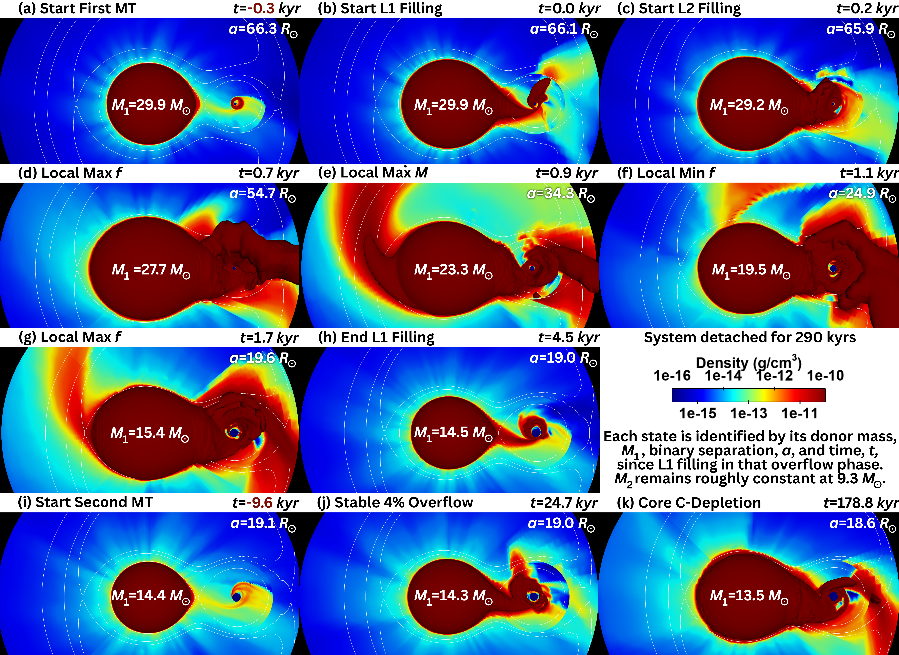
图注：测试双黑洞前身在B类传质各演化阶段的三维流动。各面板轨道平面按密度着色，并用密度等值面展示离开轨道平面的几何结构；面板中的空间尺度按该阶段双星间距重新缩放。字母阶段与图2、图3对应；原文另提供动画。 色标为密度（g/cm³），各小图标出阶段时间（kyr）、供体质量（太阳质量）与间距a（太阳半径）；颜色不表示温度。
怎么看这张图：比较流束何时出现、外流与包层剥离如何对应，不要用各面板相同图像宽度推断绝对间距不变。L2/L3出现流动不等于供体等体积表面已跨过相应势面。 直接展示单纯一维几何判据无法表达的流束和盘结构。
来源与置信度：arXiv PDF；source verified；https://arxiv.org/pdf/2611.25310#page=8
图7
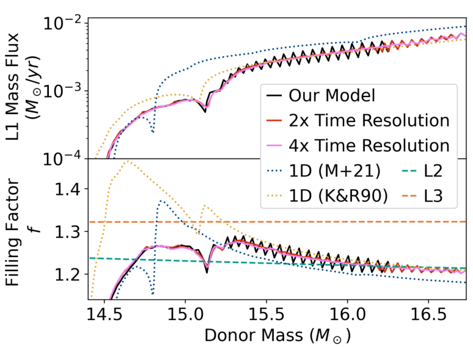
图注：不同演化时间分辨率下的填充因子与L1传质率演化。原分辨率及提高两倍、四倍的三维—一维系列用于检验包层剥离末期的时间步敏感性；点线表示在原时间分辨率下不用流体反馈、分别采用Kolb–Ritter与Marchant等处方的一维演化轨迹。 横轴为供体质量（太阳质量），上图为L1质量流率（太阳质量/年），下图为无量纲填充因子。黑、红、粉线对应原、两倍、四倍时间分辨率；蓝和黄点线为两种一维处方，绿和橙水平虚线为L2/L3阈值。
怎么看这张图：重点比较原轨迹振荡在加密后减弱、而整体末态仍接近。局部大幅跳变有数值时间步成分，不能逐点解释成真实爆发；三维未达到一维预测的大填充因子，是更稳健的差异。 同时支撑主要几何差异与数值限度，比只给漂亮流场更能审查结论。
来源与置信度：arXiv PDF；source verified；https://arxiv.org/pdf/2611.25310#page=10
强相关工作
Kolb与Ritter 1990年的传质处方是本文的主要一维基线（原文参考文献“Kolb and Ritter 1990”，A&A 236, 385–392）；Marchant等2021年的双黑洞形成研究（A&A 650, A107）给出更高阶处方和稳定通道背景。本文并未发现经典处方处处失效，而是以三维L1流量和独立演化轨迹分别检查它，在包层剥离末期出现明显几何差别。Cehula与Pejcha 2023年的新理论只作定性讨论，没有在本实验逐步直接计算，因而不能把本文称为对三套处方等量、同精度的实测排名。
Fabry、Marchant与Sana 2022年的潮汐畸变恒星建模（A&A 661, A123）提供等势壳基础，Dickson 2024年的高质量X射线双星三维传质（ApJ 975, 130）提供短时流体方法；Dickson 2026年的TIME工作此前在慢步采用解析演化。本文新加的是MESA的热与核响应，从而延伸到完整传质阶段。参考文献链接使用本论文中已核验的条目锚点；未取得这些前作全文，不把同源方法沿用视为独立复现。
同一事件 / 同类源线索：
相似工作：
- https://arxiv.org/html/2611.25310#bib.bib37
- https://arxiv.org/html/2611.25310#bib.bib19
- https://arxiv.org/html/2611.25310#bib.bib61
基础理论 / 方法工作：
相反观点 / 张力线索：
（未提供）
2. Charge Exchange Illuminates Turbulent Cold-Hot Interfaces
- 来源：arXiv / astro-ph.HE
- 链接：https://arxiv.org/abs/2611.26684
- 作者：Yizhan Zhang, Suoqing Ji, Guiyun Liang, Shuinai Zhang, Zhijie Qu
- 公告 / 来源日期：2026-11-23
- 阅读层级：重点精读
- 评分：novelty 8/10，importance 8/10，relevance 8/10，final 9.00/10
- 推荐理由：将电荷交换子网格模型与非平衡电离网络耦合到辐射湍流混合层，提出冷侧高电荷离子由输运持续供给、界面褶皱与离子供给受限亮度共同决定CX辐射的新诊断链；对多相介质软X射线解释有显著推进，初选精读，需全文核查分辨率、子网格假设及几何外推。
中文题目：电荷交换照亮冷—热湍流界面：软X射线并不只来自百万度气体
做了什么：多相气体中，百万度热等离子体与冷云接触的地方很薄，却控制着物质交换。作者把电荷交换（CX：高电荷金属离子俘获中性原子的电子并通过级联发出谱线）的子网格模型，接入FLASH三维流体模拟的非平衡电离网络，研究类似星系周介质和银河中心的剪切混合层。模拟显示，0.5–2 keV电荷交换发射主要来自 $10^4$–$10^5$ K的冷暖界面；高电荷离子由热侧持续输送，尚未充分复合就进入富中性气体，而通常的热软X射线主要填充热相体积。
关键结果不仅是“界面会亮”。在中性柱足以截获入射离子的条件下，提高中性密度会增大发射率，却同时缩短反应层，使积分亮度主要受高电荷离子供给限制。三维发射面褶皱面积约为投影面的6.9–10.9倍；但单位投影面积的模拟亮度已经包含这种褶皱，外推整个星系时不能再次乘它。因而CX与热发射之比有望约束冷云接触面积相对于热体积的大小。这是理想化流体模型给出的诊断框架，尚未对某个星系的谱线数据进行拟合。
为什么重要：常用的平衡电离温度解释会把高电荷离子和软X射线归入热相，容易漏掉正在冷却或混合的气体。本文用电离网络和冷却包裹的对照说明：界面中的离子历史不能只用当前温度或一次均匀冷却描述。它把原子反应、湍流输运与可观测谱线连接起来，也说明局部界面比热相更亮，并不自动意味着整个系统由CX主导；总体贡献还取决于冷云的数量、尺寸、形状及视线上的热气体。
理论 / 观测 / 仪器方法价值：最值得借鉴的是分层构造证据：先从非平衡电离追踪离子，再用实际电荷交换截面和谱线产额计算发射，继而比较空间形态、温度分布、时间饱和及分辨率。作者另设同压冷却气团和改变冷却强度的控制组，把“金属多所以更亮”“冷却带来更多输运”与“碰撞速度改变”分开。这个流程能帮助高能环境研究判断一个软X射线组分究竟追踪热气体储量，还是追踪正在交换物质的边界。
为什么应该关注：银河中心、星系风和冷云边缘既是粒子加速源的环境，也是质量负载和反馈发生的位置。本文没有计算伽马射线或中微子，却为建立这些环境的热气体与冷云接触几何提供了可检验工具。关注点应是高分辨率X射线线比与中性气体边缘是否同时符合CX预期，以及在独立约束热相和吸收后，界面面积推断是否仍成立；不能把一个局部CX亮区直接换算成宇宙线靶质量。
展开详细解读：文章讲解、背景、理论、重点章节、图表与相关工作
文章详细讲解
科学问题：如何观察真正发生交换的接触面？ 冷云与热气体并存不等于它们处处接触。常规热X射线取决于热相发射量，而冷气体谱线取决于冷相；两者之间负责夹带、凝结和混合的薄层可能在这些指标中被稀释。CX要求高电荷离子与中性供体相遇，因而天然选择这一接触区域。作者要解决的是如何在无法解析每次离子碰撞的流体网格上计算它，以及是否能把发射解释成物理输运的量度。
作者怎么做：让电离状态带着历史演化。 模拟从压力平衡的冷、热两层出发，用速度剪切触发Kelvin–Helmholtz不稳定性，再随流体推进金属离子的电离、复合、光致电离和CX。单流体并没有独立的离子与中性速度，因此作者以热相对速度加未解析湍流速度近似反应速度，迭代求它与速度依赖截面的关系。发射按C、N、O、Ne高电荷离子的H/He俘获通道和级联谱线产额计算，最终限制在0.5–2 keV。
关键结果：冷界面有高电荷离子，但不是处于平衡的冷气体。 混合层的O VIII在低温端明显多于碰撞或光致电离平衡的参考分布，也多于同压均匀冷却气团。加入CX会耗尽其中一部分，却因热侧持续补给而没有清空。CX图像因此呈现薄而褶皱的片、丝和斑块，热发射则占据热侧大体积。冷却增强提高离子与中性体重叠，剪切主要改变混合层建立的快慢；在本组亚声速层里，碰撞相对速度仍以热运动为主。
局限与下一步：从局部模型到整星系仍需外部约束。 能量方程使用平衡冷却表，并未与瞬时NEI离子逐项耦合；中性氢也按局地平衡估算。模型没有磁场、各向异性热传导和物理黏性，光照只测试均匀背景、不含自屏蔽与局部源。因此给出的面积诊断和标度是基线，不是通用标定。下一步需要真实云团—风相互作用及辐射转移，尤其检验中性柱不足、磁场抑制混合时离子供给极限是否仍适用。
关键结果是怎么做出来的
第一步是控制环境与数值尺度。CGM基准冷侧为 $10^4$ K、氢密度 $10^{-2}\,\mathrm{cm^{-3}}$，热侧为 $10^6$ K、$10^{-4}\,\mathrm{cm^{-3}}$；GC冷侧改为 $10^3$ K、$10\,\mathrm{cm^{-3}}$，热侧密度为 $10^{-2}\,\mathrm{cm^{-3}}$。盒子尺度分别为 $100^2\times300$ pc和 $1^2\times3$ pc，不能把两个环境视作只改密度的严格控制组。作者另扫描金属丰度、剪切速度，并对两例把网格每方向加密两倍。
第二步是建立形态对应。图1在相同发射率色标下比较CX和热发射；CX沿冷—热边界，热发射填充热侧。图2再移除主导的外加热流，统计饱和混合层的体积加权发射率分布，显示CX尾部可超过热发射的高端。该统计专门选了混合层，不是对整个星系体积的随机抽样，因此只支持局部亮度优势。
第三步是拆分“有很多冷气体”与“冷气体中的离子分数高”。图3按温度统计离子数及发射，各曲线分别归一化，容易受每个温度的气体质量影响；图4则直接比较O VIII离子分数。后者以从 $10^7$ K、$10^{-5}\,\mathrm{cm^{-3}}$ 开始的同压冷却气团作对照，显示混合层低温离子保有量更高。两个图互补，不能把图3归一化曲线之间的高度差当绝对粒子数比。
第四步是核对消耗与补给。最亮CX气体中，CGM基准的O VIII电荷交换时标约 $2\times10^5$ 年，电子复合约2–3 Myr；GC相应约 $2\times10^3$ 年和 $3$–$5\times10^3$ 年。CX确实能迅速消耗冷侧离子，而稳定发射需要持续夹带。光致电离对照虽减少中性供体，却能增加高电荷离子供给，最终亮度提高数倍，符合供给受限而非简单正比于中性密度的解释。
第五步是看参数控制和数值稳健性。图5中加密网格的早期不稳定性增长更快，但饱和积分亮度与标准网格接近；这并不证明小尺度结构已收敛。图6固定其他条件、整体乘冷却表，得到CX亮度近似随冷却强度的0.7次幂增长，而全波段热冷却约为0.5次幂。作者将变化拆成离子—中性重叠与碰撞因子，发现主要变化来自前者，而非速度依赖截面。
第六步是检验几何外推的账目。图7的发射面在加密后面积继续增加，CGM褶皱因子8.40到10.93、GC为6.92到8.64，因此“约十倍”依赖阈值和尺度。作者以单位初始投影面积定义总CX亮度，已经把网格内褶皱吸收进去；再乘宏观冷云表面积时只计算云团数量和大尺度形状。把两种面积重复相乘会系统高估星系的CX光度。
展开背景、理论、公式、模型和章节导读
背景知识
星系周介质是围绕星系、在星际介质与星系际空间之间交换物质的气体储库。它包含温度和密度差别很大的组分；银河中心和星系风虽然环境更致密、反馈更剧烈，也面临同样的冷云存活问题。热风可以剥离云，也可以因混合产生高效冷却的中温气体，反过来增加冷相质量。因此观察到冷云不等于它从未与热风交换物质。
速度剪切使两相界面起伏并卷曲，这就是Kelvin–Helmholtz不稳定性的基本图像。湍流把热气体卷进界面，混合后温度落到更易冷却的范围，气体失去热压后进一步吸引热侧补给。冷却和湍流不是两个互不相干的过程；它们共同设定夹带速率、层的厚度及离子的温度经历。
碰撞电离平衡假设每个温度上的电离和复合已经平衡。在快速冷却或混合中，气体温度先变化，离子电荷态却来不及跟随，便会出现低温下仍保留高电荷离子的情况。非平衡电离计算保存这种时间记忆。这里“低温O VIII”不代表氧在冷气体里靠低能碰撞重新被电离到很高电荷态，而是从热相继承并被持续运输过来。
电荷交换与电子复合不同：前者从中性原子夺取束缚电子，常进入高激发态，再通过一串跃迁释放能量。这能产生增强的类氦禁线和高主量子数级联，对软X射线线比很敏感。能量主要来自离子的电离势储备，因此局部气体并不必有与X射线光子等价的热温度；也不能把CX发射简单再作为热能方程的一项普通碰撞冷却扣除。
基础理论 / 方法脉络
整个方法从离子守恒出发：一个电荷态因更高态复合、较低态电离而增加，又因自身复合或电离而减少；CX是另一条向低电荷态流动的通道。作者并行推进离子分数和流体，但并未把所有离子引起的冷却反馈都直接耦合进能量方程。读“NEI耦合”时必须保留这一区别，它指电荷态随流体历史演化，不等于全部原子能量收支完全自洽。
反应速率等于两种反应物的密度乘相对速度和截面。网格上只存一个平均流速，直接用剪切速度当离子—中性碰撞速度会把宏观运动误作微观相遇。本文先计算按约化质量确定的热相对速度，再用应变率估计网格以下的湍动。在本组发射气体中热项占优，因此结果对Kolmogorov外推的细节较不敏感；这个判断不能无条件搬到超声速或强磁化界面。
离子在富中性气体里走过一个CX平均自由程便可能反应。中性密度越高，自由程越短：体积里看起来更亮，积分路径却更薄。这正是供给受限论证的核心。这里“厚”指对电荷交换反应的中性柱足够厚，并不是说发出的软X射线光子必定有很大吸收光学深度；两种厚度不能混用。
可观测量还取决于几何。热发射从三维热体积积分，CX更接近沿冷云表面积积分。相同冷气体体积切成更小云团，会增加接触面积，可能增强CX相对于热发射的比例。然而局部湍流折叠与整群云的大尺度面积是两个层次；数值模型先标定前者，再在宏观外推中使用后者，才能避免重复计数。
公式与推导
以下以论文式(2)–(18)为主线，合并同类定义；最后的球云关系是论文给出的几何例子。所有亮度 $Q$ 均为源处每单位投影面积的辐射功率，不是已经除以距离和立体角的地球观测通量。
- 对金属离子 $i$ 与中性供体 $d$，反应数密度速率为
两密度单位为 $\mathrm{cm^{-3}}$，速度为 $\mathrm{cm\,s^{-1}}$，截面为 $\mathrm{cm^2}$，故 $R_i^d$ 的单位为 $\mathrm{cm^{-3}\,s^{-1}}$。NEI方程把这些反应作为高电荷态的损失及相邻低态的来源；不能在算发光时保留离子、却忘记它已被CX消耗。
- 单流体的有效相对速度采用
$T$ 是网格平均温度，$m_i,m_d$ 是粒子质量。热项来自Maxwell分布的平均相对速度；作者以此代表碰撞速度，再叠加未解析湍动，未对多温分布做完整动力学计算。
- 反应尺度与湍流外推形成闭环：
$S$ 为局地应变率，$\Delta x$ 为网格尺度。小于网格时沿Kolmogorov标度外推，大于网格时截在已解析速度。由于截面依赖速度、速度又依赖自由程，需要迭代，而非一次代入固定截面。
- 将反应速率乘谱线产额及光子能量，得到目标能段发射率：
$y$ 表示每次反应的谱线产额，$E$ 是光子能量。前者单位为 $\mathrm{erg\,s^{-1}\,cm^{-3}}$，后者为 $\mathrm{erg\,s^{-1}\,cm^{-2}}$；积分方向垂直初始剪切界面，面积平均包含了后来形成的褶皱。
- 比较两种离子损失时标：
$n_e$ 为电子密度，$\alpha_i$ 为复合系数。CX比电子复合快说明它会影响冷侧离子数；它不直接证明发射能持续，后者还要求热侧运输在长期补充离子。
- 当中性柱足够、反应层厚度约为自由程时，对单通道有
$\bar E_i$ 为每次反应在选定能段的平均辐射能。中性密度消去来自路径缩短，非声称中性体无关紧要；中性柱不足或离子未被截获时，此极限失效。
- 弱冷却模拟范围内作者给出近似标度
这是在热侧 $10^6$ K及文中密度对比、尺度下的拟合，不是普适原子常数。单个光照对照约增亮五倍，不能用这一例给任意辐射场乘固定五倍修正。
- 外推到系统时写为
$\bar\epsilon_{\mathrm{th}}$ 是同一0.5–2 keV能段的热相平均发射率，$f$ 为体积分数，$r_c$ 是云半径。右侧整体无量纲。只有局部模拟可外推、热相和吸收另有约束时，观测光度比才能约束界面尺度；$A_{\mathrm{int}}$ 不再包含已吸收到 $Q$ 的微观褶皱。
模型拟合 / 应用方法
这篇没有对观测数据做似然拟合，实际“标定”对象是数值混合层的积分量。输入包括压力平衡的两相、初始剪切、金属丰度、原子截面和冷却表。标准网格为 $128^2\times384$，高分辨率为 $256^2\times768$；界面用双曲正切连接并加小横向扰动。因而早期增长与初始扰动、平滑宽度和网格有关，不能把它解释为真实某个冷云已经测出的演化年龄。
光致电离只在CGM-Z0.3-Ph中打开，使用红移零的Haardt–Madau均匀背景且采用光学薄近似。这个控制组与无光照CGM-Z0.3有相同初始气体参数，适合判断光照对离子和供体的竞争影响；它没有扫描活动星系核或恒星局部辐射强度，也没有处理云内自屏蔽。GC与CGM比较同时改变密度、尺度和密度对比，需限制其因果解释。
温度统计采用显式空间选择，移除剪切速度大于温度加权平均的气体以去掉外加热流，再对饱和阶段平均。图3各曲线独立归一化，图4则显示温度箱内的平均离子分数和16–84百分位散布。后者是模拟气体的分布宽度，不是参数估计的置信区间；同压冷却气团只测试一种温度轨迹，不能代替所有可能的冷却历史。
参数标度通过多组运行的饱和亮度比较得到。改变整体冷却强度时，图6的橙色热量是全波段冷却损失，蓝色是0.5–2 keV的CX，两条纵轴不能直接作同能段CX/热比。金属丰度同时改变离子数和冷却，作者另用固定丰度的冷却强度组部分拆分这些作用；但论文没有给出可将所有环境系统误差归入其中的统一后验。
数值验收应分别看积分和几何。两倍网格下积分CX在饱和期较接近，只证明这一有限范围的稳健性；面积仍增加，且以每次运行最大亮度的1%等值面半面积定义，依赖阈值。实际应用还须检查磁场、导热、非平衡冷却和氢中性分数，谱线模型中多温热等离子体亦可造成退化。以上是论文指出或由其方法直接要求的后续检验，本文没有完成观测响应折叠与这些替代模型的联合比较。
重点章节 / 结果段落怎么读
-
先读II.1–II.3：把离子反应速率、相对速度和谱线产额连接起来，尤其确认单流体速度近似和仅纳入部分C/N/O/Ne通道，理解“子网格”解决了什么、仍漏了什么。
-
接读III与表1：区分CGM/GC的多参数变化和固定其他条件的控制组。注意能量方程用平衡冷却表，这是判断“自洽耦合”程度的关键。
-
联读IV.3的图3与图4：前者是归一化温度贡献，后者是离子分数。只有后者能更直接隔离电荷态，不能从图3独立归一化峰高推绝对增益。
-
读IV.4–IV.5：先理解离子供给受限推导，再看光照与冷却实验是否支持。图6热曲线为全波段冷却，不能误拿来做同能段光度比例。
-
最后读IV.6、V.1与V.4：面积尚未收敛但积分较稳的区别，以及宏观界面面积不得重复计褶皱，是把本文结果用于真实源时最容易出错的两处。
关键图表与解读
图4
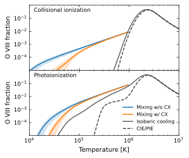
图注：O VIII离子分数随温度的变化：上图无光致电离，下图含光致电离。实蓝、实橙线分别为CGM混合层不含和含CX时各温度箱的平均离子分数，阴影为16–84百分位范围。实灰线是从10⁷ K、氢密度10⁻⁵ cm⁻³开始、与CGM模型同压的均匀气团时变冷却轨迹；深灰虚线为相应碰撞电离平衡（上）及光致电离平衡（下）参考。混合在冷气体中维持的O VIII比单纯同压冷却更多，CX则降低冷端离子分数。
怎么看这张图：关键是比较同温度下混合层与灰色冷却轨迹，而非只看高温峰。阴影体现同温度气体的离子历史不同，不是测量置信度；低温过电离显示持续混合的作用。 隔离离子分数而非气体质量效应，支持最核心的非平衡输运机制。
来源与置信度：arXiv HTML；source verified；https://arxiv.org/html/2611.26684v1/OVIII_fraction.svg
图5
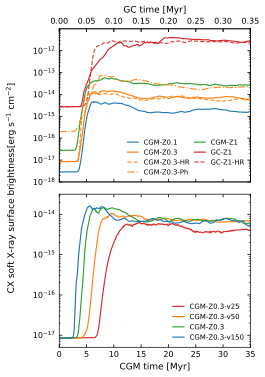
图注：按式(11)定义的单位投影面积CX软X射线功率随时间变化。上图实蓝、橙、绿、红线依次为CGM的0.1、0.3、1太阳金属丰度与GC太阳丰度；橙、红虚线为对应加密网格，橙点划线为含光致电离CGM。CGM与GC时间分别读下、上横轴。下图为0.3太阳金属丰度CGM的剪切速度序列，红、橙、绿、蓝分别为25、50、100、150 km/s。
怎么看这张图：先比较同环境标准/加密的饱和段，再看剪切主要改变建立时间。GC与CGM不可使用同一时间轴，也不只差密度；积分亮度接近不代表界面面积已收敛。 支持参数依赖与有限分辨率稳健性，避免仅给形态图。
来源与置信度：arXiv HTML；source verified；https://arxiv.org/html/2611.26684v1/cx_Q_dependence.svg
强相关工作
Ji、Oh与Masterson 2019年的辐射湍流混合层模拟（原文参考文献28，DOI:10.1093/mnras/stz1248）提供本研究的流体和NEI数值框架；Tan、Oh与Gronke 2021年的湍流燃烧类比（参考文献48，DOI:10.1093/mnras/stab053）解释冷却与夹带的标度。本文增加的是原子CX反应、离子消耗和0.5–2 keV发射，而不是首次提出冷却诱导的混合或褶皱界面。以上关系来自本论文引用和比较，并未将这些前作重新完整复算。
Gnat与Sternberg 2007年的时变冷却电离研究（参考文献19，DOI:10.1086/509786）代表单气团冷却历史的基线，图4正是在这一类基线之外显示持续输运的重要性。Zhang等2014年M82谱建模（参考文献58，DOI:10.1088/0004-637X/794/1/61）提供观测动机，但其CX比例有多温热谱退化，本文没有重新拟合M82。Lancaster等2026年关于混合层解析尺度的工作（参考文献33，arXiv:2606.04087）则提醒积分收敛不能替代相结构收敛，直接约束本文面积诊断的解释强度。
同一事件 / 同类源线索：
相似工作：
- https://doi.org/10.1093/mnras/stz1248
- https://doi.org/10.1088/0004-637X/794/1/61
- https://arxiv.org/abs/2606.04087
基础理论 / 方法工作：
相反观点 / 张力线索：
（未提供）
3. Accretor Luminosity as Probe of Orbital Evolution and Magnetic Braking in AM CVn Binaries
- 来源：arXiv / astro-ph.HE
- 链接：https://arxiv.org/abs/2611.26973
- 作者：Tin Long Sunny Wong, Peter Scherbak, Jim Fuller
- 公告 / 来源日期：2026-11-23
- 阅读层级：重点精读
- 评分：novelty 8/10，importance 8/10，relevance 8/10，final 9.00/10
- 推荐理由：把AM CVn吸积白矮星冷却光度作为轨道演化时钟，跨三种形成通道比较引力波损失与多种磁制动律；原始处方均失配、CARB与光度冲突及所需增幅构成对双星演化物理的具体新约束。须全文核查光度估计、形成通道与冷却模型退化，不将磁制动称为唯一证明。
中文题目：AM CVn白矮星为何过亮：用冷却时钟约束额外角动量损失
做了什么：AM CVn是轨道周期只有数分钟至约一小时、由富氦伴星向白矮星输送物质的双星。短周期阶段的吸积会加热白矮星；轨道随后因质量转移而扩张，吸积减弱，白矮星逐渐成为一只冷却时钟。已有观测发现，长周期系统的吸积白矮星比只计引力波角动量损失的演化轨迹更热、更亮。作者用MESA分别计算供体、轨道与吸积白矮星的结构演化，把供体半径、白矮星温度和绝对星等联合用于检验四种磁制动处方，并延伸到白矮星、氦星及演化激变变星三条形成通道。
结果支持在所考察模型下加入适中的额外角动量损失：它让系统更快到达给定长周期，使白矮星尚未来得及冷却，也使供体保持膨胀。原始磁制动律没有一种同时合适；白矮星通道中，Rappaport等1983年处方乘约3–10，或Matt等2015年处方乘约80–250，可以较好覆盖观测。典型60分钟处额外力矩约为引力波项的数倍，代表值约 $-5\times10^{32}\,\mathrm{g\,cm^2\,s^{-2}}$。这是依赖大气模型、初始参数和样本选择的经验约束，不是已经测出供体磁场，也不是证明磁制动是唯一能量或角动量通道。
为什么重要：单看供体质量—半径关系，不同形成历史和磁制动律常可产生相似结果。白矮星储存的热量增加了一个独立的时间维度：同样位于60分钟周期，缓慢演化的系统已经很冷，快速演化的系统仍然偏热。本文因此不仅要求模型“把供体撑大”，还要求它不能把吸积白矮星加热过头。CARB处方维持高温且温度随周期几乎不降的问题，正是新增诊断才能暴露的失败模式。
理论 / 观测 / 仪器方法价值：可借鉴之处是把快速变化的吸积亮度与积分了长期历史的恒星热状态分开。作者先用供体和轨道计算得到质量转移轨迹，再将该轨迹输入另一套白矮星结构演化，最后前向计算温度和可直接比较的光学绝对星等。还通过改变供体辐照、不透明度、形成通道和短期吸积涨落来辨认退化。复用这条路线需要可靠距离、静息态光度、供体成分和吸积污染估计，不能把任意观测光度都直接当作白矮星冷却光度。
为什么应该关注：这项工作连接吸积双星的长期供能、X射线亮度与未来空间引力波信号。较强角动量损失会提高质量转移率和周期导数，但X射线辐射效率与短期变化可以遮蔽长期趋势；白矮星温度提供互补标尺。对高能研究最值得跟进的是同一系统的紫外大气光谱、食计时和X射线联合约束，以及额外力矩在最短周期处是否改变引力波啁啾，而不是把光度偏亮直接解释为特定高能辐射机制。
展开详细解读：文章讲解、背景、理论、重点章节、图表与相关工作
文章详细讲解
科学问题。 质量转移双星并非只会因引力波而缩短周期。过了周期最小值，低质量、部分简并的供体失重后膨胀，接触轨道反而变宽。只计引力波时，越往长周期演化越慢，白矮星应该冷却得很充分。观测中长周期系统却偏亮；问题是轨道时钟过慢，还是测得的温度、供体热结构或吸积污染造成错觉。
作者怎么做。 基准供体为初始质量 $0.15M_\odot$ 的氦白矮星，初始中心比熵覆盖 $2.7$–$3.8\,k_BN_A$；吸积体初始质量 $0.7M_\odot$，最终约 $0.8$–$0.85M_\odot$。模型先生成质量转移历史，再计算吸积体压缩加热与冷却。作者以纯引力波轨迹为对照，依次改变供体辐照、不透明度和磁制动力矩，并比较三类形成通道。
关键结果。 辐照和更高不透明度能让供体冷却更慢，间接提高同周期处的白矮星温度，却不能独自消除全部差距。原始RVJ和M15制动太弱，S00与CARB又可使吸积过强、白矮星过热。适度放大RVJ或M15能改善温度、星等和供体半径的一致性，但对周期依赖的偏好仍受短周期盘污染限制；更稳健的是长周期额外力矩不能任意大。
局限和下一步。 这是轨迹与异质观测集的物理比较，论文没有给出统一似然下的磁制动后验或统计排除显著性。部分温度来自黑体拟合，部分来自精细紫外光谱，两者不能视为同等标定；氦大气中的金属、低温不透明度和形成通道仍有不确定性。未来需要扩大紫外样本和食双星样本，并把时间平均热状态与实测周期导数的张力纳入联合模型。
关键结果是怎么做出来的
第一步是建立对照演化。供体先失去高熵外层而收缩，随后简并内层的膨胀使轨道越过周期最小值。图2将允许供体冷却的实线与绝热虚线比较：长周期处供体冷却收缩，会降低同周期下的供体质量及角动量损失，进一步拖慢演化。供体质量—半径观测点的误差相关，不能把两个坐标当成完全独立约束。
第二步把演化时间映射到白矮星温度。短周期高吸积率把热量压入氦包层，约 $10^7$ 年的导热过程可重新加热内核；当质量转移率降至约 $(1$–$3)\times10^{-10}M_\odot\,\mathrm{yr^{-1}}$ 以下，表面光度逐渐与当前吸积率脱耦。图4显示，纯引力波模型即使让供体始终绝热，在长周期处仍往往比观测更冷、更暗。
第三步检查观测口径。温度主要采用已有能谱分布拟合，并用VOSA复核，修订两个系统的温度、排除缺少可用视差的ASASSN-21au。光学比较使用静息态Pan-STARRS等测光，结合三维消光与Gaia距离换算绝对星等，再用纯氦DB大气生成模型星等。28–37分钟的三个HST系统因显式建模盘和热斑污染，构成有价值的短周期温度支点；其余短周期点更易被污染。
第四步排除部分替代解释。图6把辐照效率提高到0.5，也只在约50分钟处带来约1000 K的温度改善。图8改变前身质量与金属丰度对应的不透明度，显示高不透明度有利于延缓供体冷却，低金属丰度则使问题更严重。这些计算说明供体热学不可忽略，但在所测试范围内不能替代额外角动量损失。
第五步比较磁制动的强度和形状。图10展示原始处方分别过弱或过强，图12和14再缩放归一化。RVJ乘3–10与M15乘80–250较好覆盖数据；后者的影响在周期最小值附近很弱，向长周期迅速变得相对重要。CARB的问题还在周期依赖：对流增强使力矩在轨道扩张后保持强大，维持约 $4\times10^4$ K的高温，因此仅改归一化未必能修正温度曲线形状。
第六步测试可迁移性与反证。演化激变变星和氦星通道也有纯引力波模型偏冷的问题，但最佳处方及短周期表现并不完全相同。图19显示YZ LMi观测周期导数比所有模型都小，不能宣称外部计时已经支持制动解释。作者施加 $10^4$–$10^6$ 年、量级为一的吸积率涨落，发现60分钟处白矮星温度仅变化约10–50 K，说明冷却光度比瞬时X射线或有限基线计时更接近长期平均。
展开背景、理论、公式、模型和章节导读
背景知识
AM CVn系统的“富氦”指转移物质氢含量很低，而非供体一定是正在燃烧氦的恒星。供体可以是氦白矮星、已停止氦燃烧的残余，也可以由失去氢包层的演化激变变星留下。这三条历史会改变熵和元素丰度，却可能产生相近的当前质量与半径。
普通恒星失去质量后的响应与简并物质不同。部分简并供体可在失重时变大，需要更大的洛希瓣才能继续接触，因此周期最小值之后的系统一边损失角动量、一边扩张轨道。“更强制动”与“更快到达长周期”并不矛盾：前者通过提高质量转移速率推动后者。
吸积白矮星的辐射也有不同来源。引力势能在盘和边界层快速释放，压缩加热则改变包层和内核的热含量。当吸积足够弱时，当前X射线光度可以快速变化，光球温度却主要追踪过去积累的热量。判断系统亮度能否用作年龄计，关键是确认波段中白矮星光球占主导。
磁制动通常来自随磁化风外流的角动量。磁场使风在较大的阿尔芬半径内近似共转，扩大力臂；若潮汐使供体自转与轨道同步，轨道会补充被风抽走的自转角动量。现有经验律多在太阳型或低质量主序星上标定，直接外推到极低质量、富氦且快速旋转的供体，本来就缺乏保证。本文检验的是这种外推，而不是从头模拟磁场发电机与恒星风。
基础理论 / 方法脉络
第一条联系来自洛希几何。充满洛希瓣的供体，其半径与轨道间距及质量比联系在一起；结合开普勒定律，可把轨道周期理解为供体平均密度的量尺。因此在给定周期处，更高熵、半径较大的供体往往也需要更高质量，这会增强引力波力矩并提高质量转移率。
第二条联系是两个时间尺度的竞争。失重时间比热时间短时，供体来不及散热，近似沿固定熵的质量—半径关系演化；失重变慢后，供体能冷却并收缩。辐照抬高表面温度和不透明度，可抑制内部热量流出；低温不透明度表的覆盖不足也会改变这一转折。故供体热结构的误差会传播到轨道年龄。
第三条联系是白矮星热记忆。压缩加热把吸积历史编码到温度结构，长周期阶段主要通过内禀冷却释放热量。若两条轨迹到达相同周期所需时间不同，即便当前质量转移率相近，也可给出不同温度。冷却光度不是无条件的精密秒表：吸积体质量、氦包层厚度、初始加热程度和大气谱形仍要一致处理。
第四条联系区分磁制动的显式周期律与实际轨迹。RVJ含显式 $P^{-3}$，饱和M15含 $P^{-1}$，但供体质量、半径、对流周转时间也随周期变化。S00即便显式为 $P^{-1}$，仍会因对流时间增长而在长周期急剧衰减；CARB的对流增强则可抵消其显式衰减。真正要比较的是完整演化轨迹上的力矩，而不能只按公式里一个周期指数排序。
公式与推导
以下用正文第1–3式、附录B及明确标出的标准教学关系，串起“几何—质量转移—年龄—光度”。记供体质量和半径为 $M_d,R_d$，吸积白矮星为 $M_a,R_a$，总质量 $M=M_d+M_a$；本节明确用 $\dot M_d<0$ 表示供体失重，正吸积率为 $\dot M=-\dot M_d$，避免正文符号约定造成符号混淆。
1．接触条件。 附录B采用近似洛希瓣关系，结合开普勒定律，
因此 $R_d^3\propto M_dP^2$，周期固定意味着平均密度大致固定。这一步适用于接触、近圆轨道双星，而非任意脱离双星。
2．供体结构到周期标度。 沿近似固定熵轨迹令 $R_d\propto M_d^\xi$，便有
附录取典型 $\xi\simeq-0.2$ 时，质量约随 $P^{-1.25}$ 下降。冷却明显后 $\xi$ 不能再作为不变的绝热指数。
3．角动量收支。 标准圆轨道表达式及守恒质量转移的对数微分为
将接触条件与绝热响应代入，得到正文第1式对应的有符号形式
它解释了为何更负的力矩会驱动更快失重；分母过小或假设失效时，不能用该稳态表达式讨论稳定转移。
4．决定供体能否冷却。 正文第2–3式给出
$c_p$ 是单位质量定压比热，分子为热能量尺度，除以内禀光度得到时间。$\tau_{\dot M}\ll\tau_{\rm th}$ 时近似绝热；相反时供体热演化会改变前述质量—半径关系。
5．把额外损失放入动力学。 本文实际比较
$f_{\rm MB}$ 为经验归一化，不是直接磁场测量。附录B的RVJ与饱和M15结构依赖分别为
两者需要不同数值增幅，不能把“乘150”误读为其物理力矩必定比“乘5”强30倍。
6．由轨道年龄转成冷却亮度。 正文在脱耦阶段采用的近似冷却趋势与标准有效温度定义可写为
在半径近似固定的教学极限，$T_{\rm eff}\propto t_{\rm cool}^{-5/12}$；较快到达同一周期意味着较短冷却年龄与较高温度。真实结果来自MESA结构演化，不能用此幂律替代整个吸积加热阶段。
7．与瞬时高能辐射区分。 标准能量估算为
效率 $\eta_X$ 与辐射波段、边界层状态有关，故X射线可检验质量转移却不能单独确定长期力矩。论文的吸积率扰动实验进一步说明：相同瞬时 $L_X$ 变化，不必带来同等比例的光球温度变化。
模型拟合 / 应用方法
输入由两部分组成：演化初值与观测比较集。初值包括供体熵、成分、质量、吸积体质量与温度；观测包括食双星供体质量和半径、光谱或测光温度、静息绝对星等。作者采用MESA r12778计算双星和供体，再用24.08.1计算吸积体，后者引入较新的结晶与相分离物理；这里是顺序耦合，未重新迭代完整双星结构。
固定假设包括基准氦转移近似保守、供体潮汐同步、初始接触，以及忽略相较轨道较小的自转角动量。演化激变变星通道在富氢阶段另外按新星抛射处理质量损失，不能把基准保守假设套到全部历史。氦星通道不直接演算氦闪，而用改变早期保留率估计影响，得到温度约10%的差异量级。
参数比较主要扫描磁制动归一化和有限的模型初值。作者先看原始处方能否同时通过半径和温度检验，再调整力矩强度检查曲线形状。报告的3–10和80–250是覆盖观测的模型范围，未给出共同误差模型下的置信区间；摘要代表值约5、150也不应包装成精密最佳拟合值。
重要退化来自测量的物理定义。盘在较短周期更易贡献红端光，使黑体拟合温度偏低，却把总光度抬高；因此温度与星等两张图对同一种污染会沿不同方向偏移。长周期食双星的光学污染可低于约10%，但整个样本仍可能偏向更亮或易爆发系统。未来拟合应显式处理距离、消光、大气成分与选择函数，本文尚未完成这种层级统计模型。
数值稳定性也有边界。部分强制动模型对力矩设上限，对流周转时间逐步平滑；S00需要截断的区段已在图中说明。低温高密度不透明度虽扩展了覆盖，仍缺某些高密度吸收和凝结效应。复现时应检查这些截断是否进入待解释样本区，而不是只调整一个归一化便称为验证机制。
重点章节 / 结果段落怎么读
1．第II节与III.1：先核对供体初始熵、保守转移与白矮星重新加热，再读图2/4。这里回答为什么周期可以携带年龄信息。
2．第III.1.3–III.3：区分测光温度与紫外光谱温度，逐项看盘污染、辐照和不透明度。它决定“比模型热”究竟有多可靠。
3．第IV.1–IV.2与附录B：把原始处方的失败同缩放后的改善对照，特别注意显式周期指数与完整轨迹指数不同。图10和14是机制检验的中心。
4．第V节和附录C：比较三种形成通道，抓住周期最小值不同如何改变早期再加热；不要把白矮星通道的最佳范围照搬为所有通道的精确答案。
5．第VI节：读图19中YZ LMi的计时张力，以及温度对吸积率涨落的弱响应。这是理解论文为什么优先采用热时钟、但仍需独立验证的关键。
关键图表与解读
图10
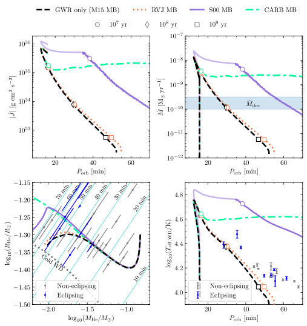
图注：不同磁制动处方的演化轨迹。黑虚线仅含引力波角动量损失；珊瑚色点线、紫色实线、绿色点划线分别加入RVJ、S00和CARB磁制动。原始M15与黑线几乎重合，未另画。S00浅色部分表示力矩被限制在5×10^35 g cm² s⁻²。圆、菱形、方形分别标记质量转移开始后10^7、10^8、10^9年。左上为总力矩，右上为质量转移率，蓝带为白矮星由压缩加热转入冷却的脱耦范围；左下为供体质量—半径关系，右下为吸积白矮星有效温度。观测点、误差棒及其余标记沿用图2与图4。
怎么看这张图：先看左下：强制动确能保持供体膨胀；再看右下：S00/CARB却使白矮星太热。两个条件必须同时满足，不能凭供体半径就认可处方。 直接展示原始四种磁制动处方的失败方式。
来源与置信度：arXiv HTML；source verified；https://arxiv.org/html/2611.26973v1/MB_comparison.svg
图14
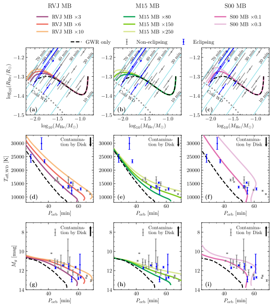
图注：缩放磁制动强度后与观测的比较。上、中、下三行分别为供体质量—半径关系、吸积白矮星有效温度及g带绝对星等；左、中、右三列分别为乘3–10的RVJ、乘80–250的M15及乘0.1–0.3的S00。箭头标出吸积盘污染倾向：使能谱分布推断温度偏低，并使系统更亮，较短周期时更明显。数据点与其余标记同图2和图4：深蓝为食双星，灰为非食系统；相关周期与质量等坐标及单位按各面板显示。
怎么看这张图：沿一列同时检查半径、温度、星等，才是对一条演化轨迹的联合物理检验。模型范围覆盖观测不代表统计置信带；短周期点的污染方向尤其影响对力矩周期依赖的判断。 展示改善后的归一化范围与主要观测退化。
来源与置信度：arXiv HTML；source verified；https://arxiv.org/html/2611.26973v1/MB_comparison2_observables.svg
强相关工作
Bildsten等（2006，arXiv:astro-ph/0510652）建立AM CVn吸积白矮星由压缩加热转向冷却的基本图像；Wong与Bildsten（2021，arXiv:2109.13403）进一步把供体热演化与吸积体演化连接。本文继承这条链，更新低温不透明度并系统比较额外角动量损失，贡献是将光度偏差转成可检验的制动强度与周期依赖，而非首次提出白矮星会冷却。
Belloni与Schreiber（2023，arXiv:2305.19312）用增强制动研究演化激变变星形成AM CVn的可行性。本文与之不同的约束是吸积体温度：让供体保持膨胀的CARB也可能让白矮星过热，因此形成通道可行不等于后续温度正确。另一方面，van Roestel等（2022，arXiv:2107.07573）的食双星及Yu等紫外光谱工作提供污染更可控的数据支点；这些观测今后可决定对磁制动形状的偏好是否成立。
同一事件 / 同类源线索：
相似工作：
基础理论 / 方法工作：
相反观点 / 张力线索：
4. Disentangling Disk and Broad-Line Region Continuum Emission in a Sample of Active Galactic Nuclei
- 来源：arXiv / astro-ph.HE
- 链接：https://arxiv.org/abs/2611.27051
- 作者：Manqi Fu, Shuying Zhou, Hengxiao Guo, Zhi-Xiang Zhang, Marcin Marculewicz, Mouyuan Sun
- 公告 / 来源日期：2026-11-23
- 阅读层级：重点精读
- 评分：novelty 8/10，importance 8/10，relevance 8/10，final 9.00/10
- 推荐理由：31个AGN中以逐源Cloudy/LOC弥散连续谱模板同时利用Balmer/Paschen跳变分离盘与宽线区贡献，给出Balmer跳变蓝侧平均约33%并以mock量化模板偏差，推进盘尺寸反响异常的关键系统误差控制；须保留光谱分解依赖与静态样本不能直接解决时间延迟问题的边界。
中文题目：AGN连续谱不全来自吸积盘：31源分解测出宽线区弥散贡献
做了什么：活动星系核的光学连续谱常被用来测吸积盘尺寸，但宽线区气体在被电离后也会发出连续辐射。这种来自更远位置的弥散连续谱会混入光变信号，使测得的时间延迟不再只代表盘上的光行时。作者从哈勃STIS和VLT/X-shooter档案构建31个近邻Ⅰ型AGN样本，用发射线比约束各自的宽线区云分布，再用Cloudy光致电离计算生成逐源弥散连续谱模板，将其与盘、铁发射、恒星光、高阶氢线及热尘埃共同分解。
全样本在Balmer跳变蓝侧3625 Å处的平均弥散比例为 $0.33\pm0.14$；能覆盖5100 Å的30源平均为 $0.13\pm0.08$。这里比例只相对于“盘＋弥散连续谱”，误差表示源间标准差，不是均值精度。23个同时覆盖Balmer和Paschen跳变的对象提供内部测试：仅用Balmer区通常仍可恢复相近贡献，仅用Paschen区则平均高估约两倍。结果确认在该样本和模型下弥散成分不可忽略，同时说明模板、盘形状和波段覆盖会显著改变定量分解；本文没有直接重测31个源的时间延迟，也未证明盘尺寸问题已解决。
为什么重要：反响测量把不同波段的光变延迟转成空间尺度，前提是知道每个波段究竟由哪里发光。若有相当部分来自比盘更远的宽线区，即使真实盘尺寸不变，也可能出现较大的表观延迟。本文把此前少数源上的弥散连续谱研究扩展到31源，并用谱中可辨识的氢复合边缘约束成分，提供了修正空间解释所需的光谱输入。平均33%不是普适常数，而是提醒每个目标都要检验其辐射来源。
理论 / 观测 / 仪器方法价值：核心方法是先用线比约束云的物理分布，再估计由同一气体产生的连续谱，而非在光谱中任意加一条平滑曲线。作者进一步截断同一批光谱、改变模板和盘模型，直接量化“模型能拟合”与“成分能辨识”的区别。对多成分天体谱研究，这种以物理特征定位成分、再用注入回收和覆盖范围试验检查退化的路线值得采用；条件是保留模板假设和系统误差，不能只报告最小卡方。
为什么应该关注：盘—冕—宽线区之间的辐射再处理决定了AGN多波段信号的解释。高能辐射驱动的电离谱形会影响宽线区连续谱，光学延迟则常被反过来用于推断盘结构。本文说明二者之间需要逐源辐射转移这一环节。后续最有价值的是把X射线/紫外驱动、时间分辨光谱和连续谱延迟联合起来，检验光谱分量是否具有预期的响应半径与时变权重。
展开详细解读：文章讲解、背景、理论、重点章节、图表与相关工作
文章详细讲解
科学问题。 标准薄盘给出的波长—半径关系常小于反响观测推断的尺度，u波段还会出现额外延迟。一个可能原因是测到的连续谱并非纯盘辐射：宽线区中的复合、自由—自由等过程也产生连续谱，尤其在氢能级阈值附近留下Balmer和Paschen跳变。问题因此是能否从光谱中分离它，以及不同源是否可以共用模板。
作者怎么做。 档案候选来自已有宽线反响和连续谱监测目录，经过消光、可用观测和线比约束筛选，最终留下31源。作者先处理STIS宇宙线和干涉条纹、校正X-shooter大气吸收，再以发射线比确定LOC云分布参数。随后固定逐源弥散模板形状，允许其归一化、速度展宽和小波长位移变化，与其他光谱成分共同拟合。
关键结果。 弥散贡献随波长明显变化，在3625 Å平均约三分之一，5100 Å约一成多；同时覆盖两跳变的23源在8100 Å平均为18%。模板总体具有相似边缘，却在跳变强度和光谱斜率上不同。仅依Paschen跳变的分解在弱弥散对象中尤其不稳定，说明检测到一个平滑残差并不足以唯一识别弥散光。
局限与下一步。 入射谱继承NGC 5548的盘冕结构，云柱密度、丰度和密度权重也有固定假设；并非完全逐源自由确定。模板铁发射缺口、盘连续谱形状、宿主扣除及非同时多历元资料会影响分解。下一步需要时间分辨资料来检验这些谱分量的响应，而不能把平均光谱占比直接替换成反响传递函数中的权重。
关键结果是怎么做出来的
第一步是筛选能约束问题的对象。最终红移范围约0.003–0.24、中位0.027；23源同时覆盖两种跳变，8源只覆盖Balmer跳变。宽线比筛选又去掉7源，其中一个缺少显著宽线，其余只有一个可用独立线比。因此结论针对可用宽线和足够波段覆盖的档案样本，不是所有AGN的无偏普查。
第二步处理波段附近的仪器系统误差。STIS长于7000 Å的干涉条纹会直接威胁Paschen区，作者使用平场去条纹并清理异常点；多数多历元STIS光谱取平均，Mrk 817例外选质量最佳历元。X-shooter采用信噪比最高的一次观测、拟合大气透射，仍屏蔽7580–7680 Å的强氧气吸收区。选择和屏蔽都影响可用特征，不能假定所有像素具有等同约束力。
第三步建立物理模板。固定柱密度为 $10^{23}\,\mathrm{cm^{-2}}$，氢密度覆盖 $10^8$–$10^{12}\,\mathrm{cm^{-3}}$，Cloudy计算不同密度与入射光子通量的云。不同谱线在网格中的发射效率峰位置不同，线比因此能约束云的径向覆盖权重和外边界。图2以Mrk 509示例得到 $s=-0.6$、$\log_{10}\Phi_{\rm out}=18.1$；这是所采用网格下的最优点，图上的倍数卡方轮廓不是标准置信区间。
第四步将模板形状与幅度分开。图3显示各源模板在3800 Å归一化后仍有斜率和边缘强度差异；图4把它们放入多成分分解，得到图5的波长相关比例。两跳变子样本在3625、5100、8100 Å分别为 $0.33\pm0.09$、$0.12\pm0.05$、$0.18\pm0.09$，这些散布不能误当单源测量误差。四个宿主较显著对象与宿主较弱STIS子样本没有明显平均差异，但小组样本不足以排除所有宿主系统误差。
第五步做同资料的识别能力检验。作者把23源光谱在5500 Å分成蓝红两段，分别只用一处跳变。图7中Balmer单独拟合与双跳变结果接近，Paschen单独拟合平均约两倍且散布大；Mrk 1239可高估约6.5倍。弱本征弥散比例使Paschen边缘更难从盘、恒星及高阶线背景中区分，这是明确的波段设计建议。
第六步检验模板失配。以Mrk 509最佳模型生成100条模拟谱，仅将盘归一化在0.1–10倍间变化并加入观测误差对应的白噪声。用正确模板恢复的弥散量约为输入的 $1.03\pm0.16$；换成NGC 5548模板，在3800 Å变成 $1.46\pm0.27$。这是固定生成模型中的回收测试，不涵盖真实云几何或入射谱错误。附录A还显示Mrk 1048换盘模型后Balmer附近占比约从30%变到34%–37%，且最优约化卡方仍约49，说明剩余模型失配不能忽略。
展开背景、理论、公式、模型和章节导读
背景知识
活动星系核中的宽线区是围绕超大质量黑洞高速运动的电离气体。其谱线之所以很宽，主要来自运动造成的多普勒展宽。被中心紫外和高能辐射电离后，气体不仅发射离散谱线，也会在电子复合等过程中产生连续辐射。因此“没有强谱线的波段”并不等于“只有吸积盘”。
氢的Balmer与Paschen复合连续谱分别在3646 Å和8206 Å附近出现边缘，反映复合到不同能级所需的阈值。大量高阶谱线在阈值附近拥挤，加上速度展宽，会把理想尖锐跳变抹平。铁发射和宿主恒星谱也叠在附近，必须联立建模才能判断一个边缘属于什么成分。
连续谱反响利用亮度变化到达不同波段的时间差。若各波段仅由薄盘上不同半径产生，延迟主要反映盘内的光行距离；若远处宽线区也有响应，观测就混合了快、慢两个成分。少量远处响应也可能明显改变延迟，但影响取决于响应振幅、几何和频率，不只取决于时间平均光通量。
LOC意为“局部最优发射云”。它不要求整个宽线区只有一个密度和电离状态，而让不同云各自在适合的条件下高效发射不同谱线，再对云分布求和。这种模型解释了为何多种电离线能同时存在，但分布权重、边界与入射谱仍需假设和数据约束。本文的逐源模板是在共同物理框架下调整少量参数，并不等于直接成像宽线区。
基础理论 / 方法脉络
光致电离强度由单位面积每秒到达的电离光子数决定；同样的中心电离光子产率，距离越远，通量按平方反比下降。再除以气体密度与光速，可以得到无量纲电离参数，比较每个氢原子面对的辐射场。谱线在密度—通量平面中的不同峰值，使线比提供比单条线更有区分力的约束。
云分布积分把单云发射转换成总谱。作者取密度权重正比于密度倒数，径向覆盖权重为半径的幂律；内边界与Hβ反响半径联系，外边界用最小入射光子通量表示。这一设定降低了维数，却也意味着得到的模板与既定云分布家族绑定，复杂的多峰几何未被自由搜索。
谱分解中的盘采用断折幂律，是为让平滑底层有足够灵活度，而不是宣称盘真实温度结构已经被测出。弥散模板则有复合边缘，是分离两者的主要依据。如果只保留弱Paschen边缘，平滑底层、尘埃和弥散光可以相互补偿；增加Balmer覆盖相当于加入更独特的形状约束。
宽线区速度会同时展宽连续谱边缘和高阶氢谱线。作者在对数波长格上作高斯卷积，并把弥散谱与高阶线的速度展宽相联系，这减少了自由形状漂移。但共同展宽是假设，不是通过本文直接证明两种辐射来自完全相同的空间分布。对未来时间域建模，仍须分别计算发射率与响应率。
公式与推导
以下沿论文式1–8及附录A组织方法，最后一式为明确标注的教学延伸。$f_\lambda$表示观测谱通量密度，$L_\lambda$表示光度密度；同一符号在比例中均取相同波长，避免把积分光度与单色量混用。
1．分解观测量。 正文式1为
六项分别为盘、弥散连续谱、铁发射、宿主恒星、高阶Balmer/Paschen线及热尘埃。只有先说明这些成分，后面的弥散比例才具有明确分母。
2．把入射谱变成云的位置坐标。 正文式2与电离参数定义为
$Q_H$单位为每秒光子数，$\Phi_H$为 $\mathrm{cm^{-2}\,s^{-1}}$，$n_H$为 $\mathrm{cm^{-3}}$。给定源的入射谱后，选择 $\Phi_{\rm out}$ 就等价于选择云的外边界。
3．单云到整个宽线区。 正文式3–4写为
$F_\lambda$由Cloudy提供，$A$为分布归一化；取 $g(n)\propto n^{-1}$、$C(r)\propto r^s$ 后，主要扫描 $s$ 与 $\Phi_{\rm out}$。这一规范化模板随后仍有可拟合幅度，不应把模型规范化理解为实测覆盖因子等于一。
4．用线比选模板。 正文式5和7为
作者先剔除整个网格最小单线比卡方仍大于10者及稳健离群者，再要求至少两个独立线比。由于存在数据依赖剔除和线比共用通量，不能简单把这个平均量当作标准约化卡方分布。
5．稳健散布与目标比例。 文中采用
NMAD用于离群判断与模拟回收散布；图5的阴影则是源间标准差，二者应区分。比例分母不含恒星、铁线及热尘埃，因此33%不是全部探测光子的33%。
6．注入回收。 正文式8与模拟设置可写为
相对噪声 $\sigma_\lambda$取原谱误差/通量。回收成功证明在这一生成家族中可识别成分，不证明所有未知系统误差均消失。
7．盘模型的替代检验。 附录A以
生成标准薄盘谱，并加入消光后重新拟合。它检验平滑底层形状如何影响弥散比例；黑洞质量、爱丁顿比和假设效率0.1均进入结果。
8．为何光谱分量会影响延迟。 教学上，线性响应可记为
$C$为驱动光变，$\Psi$为各成分传递函数。本文测的是平均谱比例，没有从这31源求出两项传递函数；这正说明不能仅用33%直接计算盘半径修正量。
模型拟合 / 应用方法
模型首先确定入射电离谱。作者以NGC 5548的盘冕参数为基准，固定热冕和暖康普顿化区的若干结构参数，再按每个目标的黑洞质量与爱丁顿比生成SED。Cloudy网格固定云柱密度和丰度方案，用相对宽的密度、电离参数范围涵盖发射条件。这使模板具有逐源差异，但未完全摆脱共同参考SED。
线比拟合扫描外边界光子通量的对数17–20和径向覆盖指数−3至0。谱线通量误差来自每源200次按谱噪声重采样，再传播到线比；选择对金属丰度变化较不敏感的线比，分别处理紫外与光学以减弱消光影响。剔除失配线比避免单条难以模拟的线控制结果，同时也限制了可以对整体模型作出的统计结论。
连续谱阶段的自由参数包含断折幂律斜率与断点，弥散谱、铁模板和高阶线的幅度及展宽/位移，还有热尘埃温度与幅度。宿主显著的源先用经消光的恒星种群模板和AGN主成分模板分离恒星光，再拟合宿主扣除后的连续谱。分两阶段处理方便计算，但宿主与AGN分量的不确定性传播并非自动完整。
作者提供了三类具体稳健性检验：按波段拆分、按模板替换、按盘形状替换。它们揭示的系统差异比单次最优拟合误差更重要。铁模板在Balmer附近有缺口，补线性插值后测试源的DC贡献下降约5%–15%；这只是对缺口的一种敏感性试验，不能当作统一修正系数。
仍需注意附录Mrk 1048的拟合诊断：断折幂律虽相对最好，约化卡方约49，标准薄盘约89，都远高于一。因而“最优”只表示候选模型间相对优劣，不能表示噪声水平下已充分解释光谱。100条模拟谱也只改变盘归一化并加白噪声，没有重采样云柱密度、真实吸收、仪器残差或各目标的全体系统参数。
重点章节 / 结果段落怎么读
1．第II.1–II.4：追踪目录到31源的筛选，弄清宿主扣除、条纹与大气吸收处理，以及六种拟合成分。这些决定样本与可辨识特征。
2．第III.1与图1：先理解密度和电离通量如何挑选不同谱线，再看LOC积分，避免把逐源模板理解成完全无先验的经验谱。
3．第III.2与图2：检查线比剔除、至少两个独立比值和网格最优点。图中卡方倍数轮廓不是参数置信度。
4．第IV.1、IV.3及图5/7：先核对DC比例分母，再比较双跳变和单跳变分解，理解为什么Paschen区容易高估。
5．第IV.4与附录A：把正确模板回收、错误模板偏差与盘模型系统误差连起来。最后再讨论对反响测量的意义，不能跳过静态谱与响应权重的差别。
关键图表与解读
图5
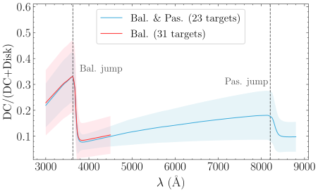
图注：光谱拟合得到的平均弥散连续谱比例随波长的变化。蓝线为同时覆盖Balmer和Paschen跳变的对象，粉线为全部31源（包括只覆盖Balmer跳变者）；阴影为相应源间1σ标准差。比例定义为DC/(盘+DC)，不包括宿主、铁发射和热尘埃。
怎么看这张图：先比较两个跳变附近与5100 Å的贡献，再看阴影所示对象间差异。阴影不是均值误差带，也不能从平均光谱比例直接算出延迟修正。 核心样本平均结果与波长依赖。
来源与置信度：arXiv HTML；source verified；https://arxiv.org/html/2611.27051v1/DC_fraction5.svg
图7
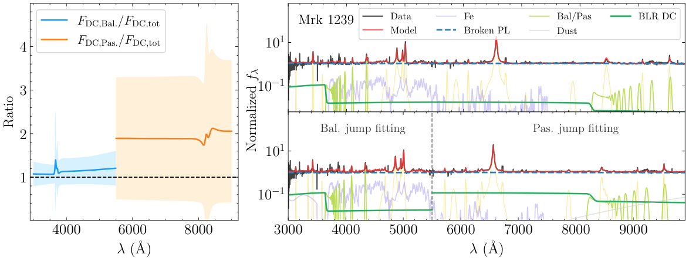
图注：左：单跳变拟合与双跳变拟合得到的DC比例之比。蓝色仅用Balmer跳变，橙色仅用Paschen跳变，阴影为1σ散布。右：Mrk 1239的分解示例，上部为双跳变拟合，下部为仅用Balmer与仅用Paschen区的结果；灰虚线划分蓝、红光谱区。Balmer约束较稳定，Paschen单区通常高估DC。横轴为静止系波长（Å）；左纵轴为比例之比，右纵轴为归一化谱通量密度。
怎么看这张图：左图围绕比值一检查偏差；右图提醒弱DC对象可出现巨大退化。平均两倍是此样本的比较结果，不应作为所有Paschen研究的固定校正。 展示波段覆盖造成的关键识别偏差。
来源与置信度：arXiv HTML；source verified；https://arxiv.org/html/2611.27051v1/jump_ratio7.png
图8
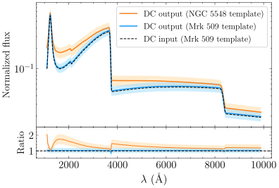
图注：对100条随机改变吸积盘贡献的模拟谱进行分解。上图黑虚线为输入DC，实线为不同模板恢复的中位DC，阴影为归一化中位绝对偏差NMAD；蓝色采用Mrk 509模板，橙色采用NGC 5548模板。下图为恢复量与输入量之比。不合适的模板引入随波长变化的系统偏差。
怎么看这张图：先看同源模板能否围绕输入回收，再看替代模板在Balmer边缘两侧的偏移。此试验仅在设定生成模型内验证，不能涵盖全部真实光谱系统误差。 直接展示逐源模板必要性和模拟检验范围。
来源与置信度：arXiv HTML；source verified；https://arxiv.org/html/2611.27051v1/error8.svg
强相关工作
Baldwin等（1995）的LOC框架把不同物理条件的云加权，以解释多种宽发射线；Korista与Goad（2019）进一步讨论宽线区弥散连续谱对波段延迟的影响。本文沿用这一物理基础，但把主要问题转为31源光谱的定量成分估计。相较直接使用NGC 5548模板，它用逐源线比调整云分布，并演示模板失配会产生波长相关误差。
Guo等（2022，DOI:10.3847/1538-4357/ac4bc6）曾用五个源的近红外Paschen区估计DC贡献。本文在更宽波段和较大样本上检验这一路线，发现只用Paschen区对弱DC源可严重高估。Cackett等关于NGC 4593的连续谱延迟研究则提供了时间域背景；光谱分解与时间域响应应相互检验，当前结果还不能代替传递函数测量。
同一事件 / 同类源线索：
相似工作：
基础理论 / 方法工作：
相反观点 / 张力线索：
（未提供）
5. A Relativistic Newton's Third Law for Binaries in Environments
- 来源：arXiv / astro-ph.HE
- 链接：https://arxiv.org/abs/2611.27442
- 作者：Conor Dyson, Adam Pound, Daniel J. D'Orazio, Maarten van de Meent, Lorenz Zwick
- 公告 / 来源日期：2026-11-23
- 阅读层级：重点精读
- 评分：novelty 8/10，importance 8/10，relevance 8/10，final 9.00/10
- 推荐理由：用双参数展开与延迟/超前Green函数，从第一性原理建立相对论环境与中小质量比旋近的瞬时和轨道平均反作用关系，避免求解动态物质引力扰动并纠正经验收支处方；两种可用阶数的力学公式为环境波形建模提供实质方法推进，需核查背景对称性和截断阶数限制。
中文题目：环境如何反作用于黑洞双星：相对论第三定律补全力矩与引力波收支
做了什么：小天体围绕大质量黑洞旋近时，会扰动吸积盘、暗物质或其他周围物质；这些环境又会改变它的轨道。已有计算常先得到“天体对环境施加的力矩”，再直接取负号作为“环境对天体的力矩”，或用流向无穷远与视界的物质通量代替。在相对论中，传播延迟、引力波辐射和环境内部能量储存使这些等同关系不再自动成立。作者从应力—能量守恒及Green函数互易关系出发，为背景时空的对称性对应的轨道能量、轴向角动量建立严格到指定微扰阶数的反作用关系。
核心结果有瞬时与轨道平均两种形式：瞬时关系把当前轨道变化写成过去环境应力—能量与时间局域化超前粒子场的积分；平均后，反作用除了物质力矩，还包含环境与粒子共同产生的引力波混合通量。论文进一步给出动态环境的领先阶方案，以及领先阶静态、轴对称环境的一阶后绝热方案，后者无需显式求解混合阶动态度规扰动。它提供了理论计算接口，尚未展示具体环境的波形精度或计算加速实测；Carter常数演化仍缺失，因此一般倾斜轨道还不能仅靠本文公式完整演化。
为什么重要：环境效应可能在大量轨道周期中积累为可测引力波相位偏差，但前提是把气体或场的响应正确转为小天体受力。本文澄清了这一接口中常被假定的守恒关系：物质吸收的功、物质外流通量和轨道损失并非普遍同一量，引力波交叉项也不能无理由省略。它的推进是给出有适用条件的第一性原理表达式，既帮助审计已有模型，也减少构建环境波形时必须求解的引力场阶数。
理论 / 观测 / 仪器方法价值：方法价值在于利用线性算子的互易关系，把难算的“复杂源产生的场在粒子位置的导数”，改写成已知粒子场与复杂源的体积分。环境仍须由自洽的相对论物质方程求解，但可复用Kerr时空上预计算的点粒子扰动。作者还把动态环境写成短时傅里叶分解与轨道谐波的耦合，为将昂贵物质模拟和快速轨道积分分开提供明确路线。使用时必须一致处理规范、边界条件、展开阶数和粒子附近的奇性。
为什么应该关注：AGN盘中的致密天体同时联系吸积环境、迁移和空间引力波观测。若要把高能波段指示的盘结构用于解释引力波相位偏移，就需要从环境动力学到轨道反作用的可控映射。本文值得关注的下一步是针对实际盘、标量云或暗物质模型，比较体积分力矩、辐射交叉项和局部自力的相容性；它尚未为某个高能源预测可直接观测的信号强度，也不能据此宣称已发现环境效应。
展开详细解读：文章讲解、背景、理论、重点章节、图表与相关工作
文章详细讲解
科学问题。 牛顿引力中作用与反作用可以在同一时刻相加，得到等大反向的总力。弯曲时空里不同位置的力矢量没有天然共同坐标空间，场传播也不瞬时完成。对黑洞旋近问题，真正需要的是环境让轨道能量和轴角动量如何变化，而非未经证明地把某个环境流量设为轨道损失。
作者怎么做。 论文分别用两个计数参数追踪小天体和环境的引力强度，在Kerr背景上构造物质响应、点粒子有效应力—能量与近似守恒荷。随后用延迟/超前Green函数的互易性及Killing对称性转移导数，把环境场从受力公式中消去。领先阶可容许物质非线性响应，但度规响应仍需微扰有序；更高阶的结果转用线性物质响应和光滑环境背景。
关键结果。 式72是保持因果结构的瞬时关系，式79将平均轨道变化分解为负的物质受功/力矩和引力波混合通量。对动态环境，式118在短时频谱中选择与轨道谐波耦合的成分；对静态轴对称领先环境，式145还需包括环境改变粒子自身引力波辐射的项，不能只保留物质尾迹。最终所需输入是物质响应和两类领先阶度规，而不是混合阶动态环境度规。
局限和下一步。 本文是解析推导，不含新观测样本或完整波形数值比较。能量和轴角动量来自Killing向量，第三轨道常数Carter常数来自Killing张量，尚无对应闭合式。1PA结果对保持赤道对称的赤道轨道是完整环境贡献，对一般倾斜轨道则仍缺一条演化律；粒子附近奇性、软化和实际瞬时核计算也有待进一步实施。
关键结果是怎么做出来的
第一步用牛顿例子暴露所需数学条件。泊松Green函数只依赖两点间距，既在交换两点时对称，空间导数又可换到另一点并改变符号。式1–12因此把环境对粒子的力换成粒子对所有环境质量元的总力。这个例子不是新的引力定律，而是为相对论推导指出互易性与背景对称性这两个支点。
第二步给受力寻找可比较的全局量。第III.2节不在曲面上直接相加力，而用背景时间平移和轴旋转的Killing向量定义能量/角动量对应的荷。局部应力—能量守恒经Stokes定理变成切片上荷的变化、体积分作用项与边界流量。点粒子在远端边界无支撑，边界项可消失；环境通常不能作同样假设。
第三步保留传播方向。相对论延迟Green函数交换源点和场点后变成超前函数，而不是自身。式49、50将当前粒子的受力改写成过去环境与一个仅在当前时刻发源的超前粒子场的耦合。图2说明两种写法描述同一条因果联系；超前核是数学互易变换，不意味着环境获得未来信息或物理扰动逆时传播。
第四步在平均后识别辐射修正。把超前场写成延迟场减两倍辐射场，得到式79–81。第一项看起来像熟悉的反向物质力矩，第二项恰对应粒子和环境波形在无穷远及视界通量中的交叉项。只有这些辐射项可忽略时，才恢复近似牛顿式的平均等大反向关系；强场中不能预先删除它们。
第五步把形式关系变成演化输入。动态环境的应力—能量作局部时间傅里叶变换，粒子场按轨道相位展开。长于轨道、短于辐射反作用时间的窗口挑出环境中与轨道谐波接近的成分，保留幅度和相位。该方案不是把湍流一律平均为零，也不假定整个旋近过程中环境始终相干。
第六步处理静态轴对称背景的下一阶。领先环境场对能量/轴角动量的Lie导数为零，环境耗散作用于是转到 $\epsilon^2\lambda$ 阶。作者先在“黑洞＋环境”的背景上推导，再重新展开回Kerr，得到物质响应功、混合辐射及粒子自辐射修正三项。第V.3.3节由此指出，物质内部黏滞、冷却或束缚态储能存在时，远端物质流量不一定代表局部相互作用；其普适联系仍是未解决问题。
展开背景、理论、公式、模型和章节导读
背景知识
极端质量比旋近由一个小质量致密天体绕大质量黑洞运动组成。小天体在强场中可经历很多轨道周期，微弱受力也能积累成引力波相位变化。中等质量比系统同样需要考虑环境，但微扰能达到的精度要随质量比和阶数评估，不能把理论形式自动推广到所有质量比。
Kerr时空描述旋转黑洞，具有时间平移和绕自转轴旋转对称性。测地线因此有能量和轴角动量常数；一般倾斜轨道还需要Carter常数。加入弱环境或粒子自引力后，这些量缓慢变化，轨道演化模型就是在快的轨道相位和慢的参数漂移之间建立联系。
环境可以是气体盘，也可以是标量场云或其他物质分布。粒子扰动可激起密度波、尾迹和湍流响应，这些结构对粒子产生反作用。即便环境整体自引力很弱，其流体响应也可能非线性：弱度规扰动与线性物质响应不是同一个假设，论文专门区分了二者。
辐射场还会携带能量和角动量离开系统或进入黑洞视界。总波形平方形成通量时，不仅有粒子自身与环境自身的项，还有二者的交叉项。因此简单计算“环境获得多少角动量”仍可能缺少轨道收支中的辐射部分；把牛顿式第三定律直接用于强场时，遗漏的正是这种场与边界信息。
基础理论 / 方法脉络
双参数展开是本研究的组织工具。$\epsilon$追踪小天体产生的引力扰动，$\lambda$追踪环境引力扰动；它们是形式计数标签，实际适用性要求相应扰动足够小且逐阶有序。物质非线性版本仅展开度规、保留物质自由度，允许激波等响应；线性版本则连物质场一起展开，便于一致推至混合高阶。
Green函数把源与场联系起来。延迟解满足无入射辐射等物理边界条件，场点只受因果过去影响；超前解是相应的时间反演数学对象。两者互易关系允许交换源与观测点，但必须同时交换时间方向。辐射场定义为延迟与超前之差的一半，是区分耗散效应的自然工具。
Killing向量表示背景上的连续对称性，沿其Lie导数衡量某个扰动是否破坏该对称性。应力—能量与扰动的Lie导数耦合，给出对应能量或角动量的交换率。因此静态轴对称环境的领先场即便改变轨道频率，也不在相同最低阶直接抽走这些荷；频率修正与耗散漂移需要分别记账。
多尺度展开区分快速轨道和慢速旋近。绝热阶用平均驱动力推进缓慢变量，后绝热阶再计入频率修正及更高阶平均耗散。取长时间平均并非真的把整个持续变化的轨道冻结到无限时间，而是渐近意义上选取中间窗口。轨道共振、环境长期相干结构以及窗口选择都会影响这个步骤，不能把时间平均和相位平均无条件互换。
奇性处理决定积分是否有意义。点粒子场在其世界线上发散；线性响应版本用有效正则度规与匹配展开定义粒子源，非线性物质版本提出软化局部奇异场。作者明确未证明所有高阶量在软化尺度趋零时收敛，这一限制必须随公式带入实际流体模拟。
公式与推导
以下抽取原文连续推导的骨架，采用 $G=c=1$、度规符号 $(-,+,+,+)$。$T^{\mu\nu}$为应力—能量张量，$h_{\mu\nu}$为度规扰动，$\xi$为背景Killing向量，$\mathcal L_\xi$表示沿该对称方向的Lie导数；展示式均来自论文，不将不同阶数混作精确非线性关系。
1．牛顿起点。 式1–12给出
等号依赖 $G(\mathbf x,\mathbf x')=G(\mathbf x',\mathbf x)$ 和 $\nabla_xG=-\nabla_{x'}G$。这让复杂环境势从受力计算中消失，成为后续相对论转换的目标。
2．用荷替代跨位置的力。 式58、60定义
时间荷是负的轨道能量，保持这个符号才能正确解释后面通量的正负。
3．由局部守恒到交换率。 式64为
第一项为背景对称性被扰动破坏后的交换，第二项为物质越过边界的流量。仅对边界外没有支撑的粒子源，第二项才直接为零。
4．互易关系改变时间方向。 式49–51为
第一式不能把右侧Adv改成Ret；它正是相对论第三定律中传播延迟和辐射项的来源。
5．瞬时因果形式。 对领先交叉阶，式72得到
下标 $|t$ 表示粒子源被限制在测量时刻；积分仍只覆盖环境的过去。它是当前受力的重写，不是让物理系统接收未来信号。
6．平均并分出辐射。 定义式78的泛函
将超前场换成延迟场减两倍辐射场，式79–81为
第一项是对环境的受功/力矩，第二项对应混合引力波通量；普通真空粒子辐射还须在完整演化中另计。
7．动态环境的频率筛选。 式105–112的关键结构为
空间张量指标在此为简洁省略。有限窗口产生sinc核，渐近窗口选择轨道谐波附近的环境频谱；实际实现须满足轨道时间远小于窗口、窗口远小于演化时间。
8．静态轴对称环境的一阶后绝热项。 式145为
这里 $(2,1)$ 对应 $\epsilon^2\lambda$，第三项是环境对粒子自身辐射的修正，含源、体元和频率变化。式134、135、144将三项改写成领先阶场和物质响应的积分；省去混合阶场的显式求解，并不意味着忽略它的物理效应。
模型拟合 / 应用方法
本文没有对观测做参数拟合，也没有报告数值波形误差或加速比。相应的“应用方法”应理解为实现前的输入与一致性要求：首先选择Kerr背景、轨道参数及规范，准备领先阶点粒子场和物质应力—能量解，确认两者使用相容的时空坐标、切片与边界条件。只输入一个经验牛顿阻力公式，不能算作检验本文相对论结果。
对动态环境，作者建议先在缓慢轨道参数空间各点运行足够长的物质模拟，使环境经历非线性调整并采样轨道相位；随后保存与点粒子模式相乘后的短时频谱幅度和相位，供快速轨道积分调用。第V.2具体推导为简化取小天体引力计数强于环境，即辐射反作用仍主导长期演化。一般领先平衡式本身的范围与这一具体快速积分方案的范围应区分。
对静态轴对称领先环境，至少需要三个量：Kerr上的点粒子领先度规、环境的静态领先度规、粒子诱发的线性物质应力—能量响应。式144还涉及二阶爱因斯坦算子在领先场上的交叉作用，以及频率、体元和有效粒子源的修正。虽然不再求混合阶动态场，仍有空间积分、模式收敛和分布意义下积分分部等实际工作。
适用性必须逐项检查。物质扰动在粒子处有界，是第V.3构造使环境扰动足够光滑的重要假设；强非线性物质版本则依赖软化，并未完成全部实现细节。若环境持续向主黑洞吸积、领先度规随时间变化，论文只把扩展视为未来方向；不能把静态轴对称1PA结论直接贴到任意黏滞吸积盘。
可行的后续验证包括：在弱场恢复牛顿极限，比较体积分与远端引力波交叉通量，以及用独立局部正则自力计算核对轨道反作用。这些是作者提出或由框架自然要求的验证步骤，本文尚未给出完整数值结果。对于一般倾角，还必须补Carter常数演化；否则即使能量和角动量计算正确，也不足以生成完整精密波形。
重点章节 / 结果段落怎么读
1．第II.1：沿牛顿例子找出Green函数交换对称性和导数反对称性，理解为什么能省去复杂环境势。
2．第III.1–III.2：区分物质非线性与度规微扰，核对软化/有效粒子源，再理解Killing荷和边界项。这一节决定所有后续公式的适用范围。
3．第IV.1与图2：把式67的延迟场受力和式72的时间局域化超前场积分对照，明确超前核没有违反因果性。
4．第IV.2：由式77到79–81，看辐射场怎样补出混合通量；再读无穷远和视界通量式，理解为什么只算物质力矩不够。
5．第V.2–V.3及结论：按动态0PA与静态轴对称1PA选择实际方案，逐项清点所需输入。最后检查Carter常数、奇性处理及持续吸积环境这三类尚未完成的扩展。
关键图表与解读
图1
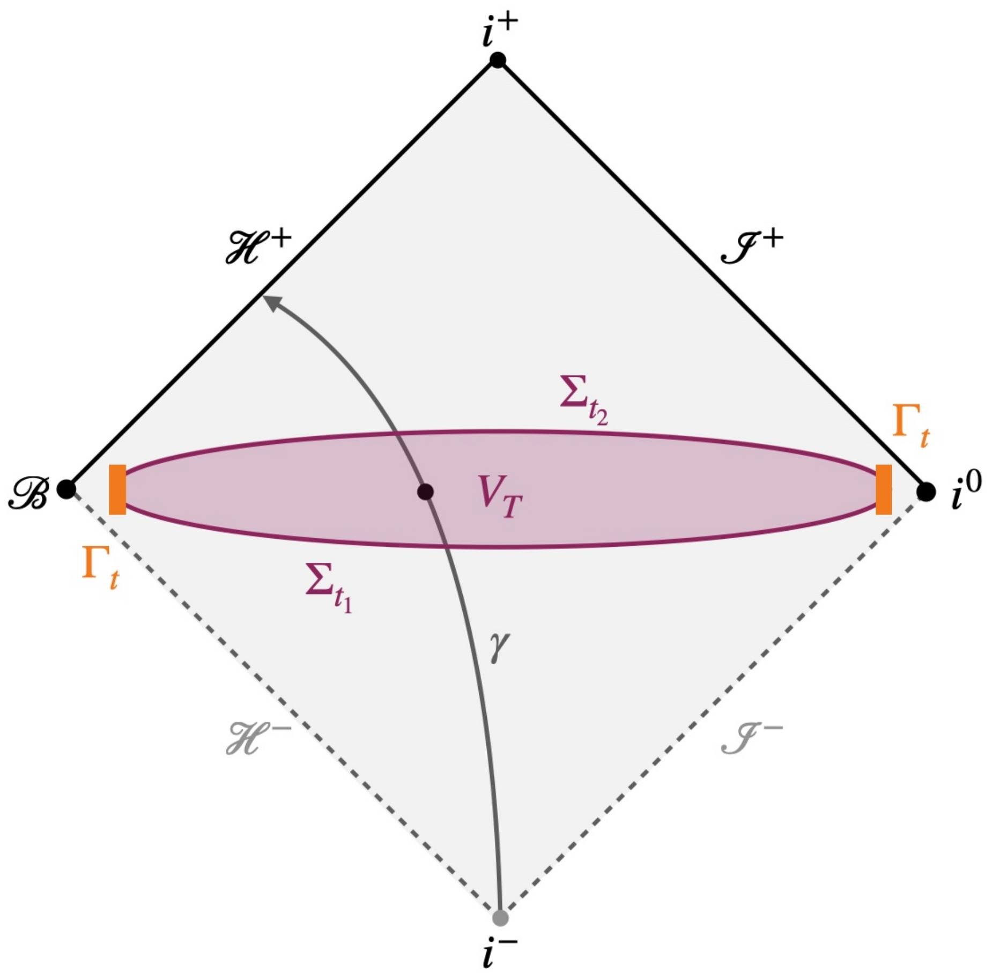
图注：黑洞外部的Penrose因果图。两个固定时间超曲面Σt1、Σt2位于两条类时边界之间，一端靠近分叉二球面，另一端靠近空间无穷远；阴影为其围成的四维体积VT。小天体世界线γ从过去类时无穷远i−出发，在事件x穿过该体积，最终越过未来视界H+。
怎么看这张图：用两片空间切片和侧边界理解Stokes定理：荷的变化不只来自局部交换，也可能有边界流量。点粒子的远端边界项可为零，环境的边界项不能无条件删除。 支持全局荷与边界通量推导；为可下载PNG原图。
来源与置信度：arXiv HTML；source verified；https://arxiv.org/html/2611.27442v1/penrose_hypersurface.png
图2
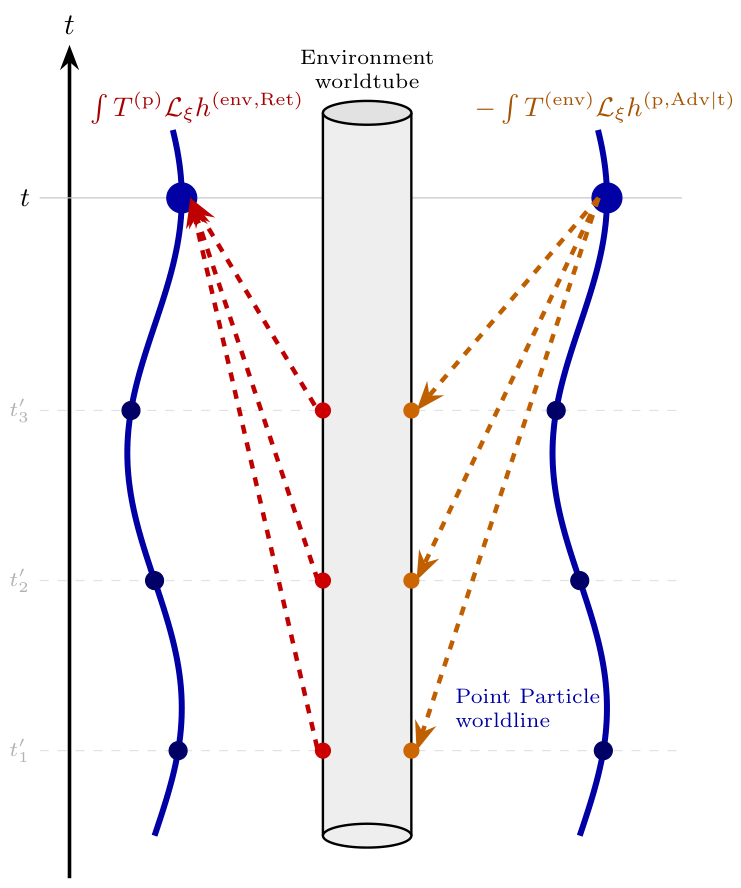
图注：弯曲时空中反作用关系的因果示意。左侧把环境过去发出的延迟引力场对当前点粒子的作用相加；右侧从环境的视角，以当前时刻粒子源产生的时间局域化超前核表示同一联系。图中标出环境世界管、点粒子世界线、当前时刻t及多个过去切片t′。两侧积分对应同一轨道荷变化，红/橙箭头表示互易重写的两种方向。
怎么看这张图：核心是每个过去环境切片都联系到同一当前粒子事件；超前核只用于数学重写，没有引入可用的未来信息。此图是因果结构示意，不能读作测得的信号或定量波形。 最直接解释相对论第三定律为何需要时间局域化和超前Green函数。
来源与置信度：arXiv PDF；source verified；https://arxiv.org/pdf/2611.27442#page=12
强相关工作
Poisson、Pound与Vega（2011，arXiv:1102.0529）以及Barack与Pound（2019，arXiv:1805.10385）的自力综述提供点粒子奇性、Green函数与辐射反作用背景。本文把这些工具用于带环境的双参数问题，贡献不是替代自力理论，而是利用其互易结构将复杂环境的反作用改写成更易复用的积分。
Dyson等（2025，arXiv:2501.09806）研究Kerr时空中环境对极端质量比旋近的响应；Dyson与D’Orazio（2026，arXiv:2601.19123）讨论螺旋密度波和力矩平衡。本文进一步指出，算出粒子施加给环境的延迟力矩仍不等于完整反作用，需补辐射修正和指定阶数的几何项。它为这些既有模型提供检查标准，但尚未逐一数值重算并裁定每个既有预测的误差。
同一事件 / 同类源线索：
相似工作：
基础理论 / 方法工作：
相反观点 / 张力线索：
（未提供）
6. Disrupted stars and captured compact objects: Combining observations from multiple messengers to infer the population of massive black holes
- 来源：arXiv / astro-ph.HE
- 链接：https://arxiv.org/abs/2611.27742
- 作者：Shashwat Singh, Luca Broggi, Christopher P. L. Berry, Marta Volonteri
- 公告 / 来源日期：2026-11-23
- 阅读层级：重点精读
- 评分：novelty 8/10，importance 8/10，relevance 8/10，final 9.00/10
- 推荐理由：以二维Fokker–Planck事件率模型及分别处理选择偏差的联合层次推断，定量连接现有ZTF潮汐瓦解事件和未来LISA极端质量比旋近对大质量黑洞种群的互补约束；同时给出当前TDE约束和可检验预测，方法与科学问题均有显著推进，必须区分观测结论和模拟预报。
中文题目：让潮汐瓦解事件与极端质量比旋近共同描绘大质量黑洞种群
做了什么：银河核中的恒星被大质量黑洞撕裂，会产生可见的潮汐瓦解事件（TDE）；恒星级黑洞若缓慢旋入同一类中心黑洞，则形成未来空间引力波探测器LISA可观测的极端质量比旋近（EMRI）。两者通常不是同一事件的两种信号，但可作为同一类宿主黑洞的不同示踪物。本文从星系质量函数、核星团形成概率、中心黑洞占据率和并合后的星团恢复出发，借用二维Fokker–Planck动力学模拟的事件率，生成八种天体物理情景，再分别模拟LISA、ZTF和LSST的检测选择，用联合层次贝叶斯推断恢复黑洞种群。
结果主要是预测：在作者的模拟和信号模型下，LSST的TDE目录将质量特征尺度的90%可信区间宽度压至跨八情景中位数0.31 dex，红移演化指数的宽度约0.11；少量EMRI则提供TDE模型没有的自旋与临近坠入时轨道偏心率信息。现有38个ZTF事件只用于事件数层面的外部比较，并非这些高精度后验的观测输入。作者所说EMRI约占3.4%，特指EMRI+ZTF模拟目录；在包含大量LSST事件的目录中占比至多约0.11%。
为什么重要：低质量星系中有多少中心黑洞、多少又具有能持续补充近心轨道的核星团，长期受到探测选择与动力学率不确定性的共同限制。本文把“存在一个黑洞”“能产生某类事件”“该事件能被仪器看到”逐层拆开，说明两个探针不必同源同时触发也能联合推断。其显著推进是形成可比较的预测链，并量化数量优势和单事件信息优势各自作用在哪些参数上；它并未直接测定真实黑洞种子模型，也未消除TDE辐射与星团演化的系统误差。
理论 / 观测 / 仪器方法价值：方法价值在于为每个探针保留各自的检测效率和事件级误差，再共享真正可共同约束的种群参数。作者用神经网络近似昂贵的选择函数，并比较不同种群函数、后验预测分布、可信区间缩窄和信息增益，使“联合更好”成为可以检查的命题。迁移时必须先验证共同母体假设、训练集覆盖、检测效率标定和参数可辨识性；一个小样本在自旋上的高信息量，不能自动解释为它比大样本更能测量所有共享参数。
为什么应该关注：对高能天文和多信使种群分析，本文提供的是跨事件类型合并证据的思路，而非TDE已经存在伽马或中微子对应体的证据。若未来把电磁TDE、引力波EMRI与其他活动星系探针联系起来，首先要确认它们是否采样相同的宿主、动力学通道和质量区间，再考虑共同参数。近期值得追踪的是TDE分类完备度、光变质量估计的系统误差及低质量星系并合率；这些误差不会因为LSST样本增大而自动下降。原文部分检测定义与参数范围不一致，具体数值预报仍需结合公开代码澄清。
展开详细解读：文章讲解、背景、理论、重点章节、图表与相关工作
文章详细讲解
科学问题是如何从两种不常同时发生的事件恢复一个不可直接完整清点的黑洞种群。TDE需要普通恒星进入潮汐破坏轨道，EMRI需要致密天体在被直接吞没前进入以引力波耗散为主的缓慢旋近。两者共享宿主核环境，却有不同的产生率、可见距离和观测参数。因此联合不是把两个目录直接拼成一个无偏样本，而是建立两个从同一母体通向观测的过程。
作者怎么做：先生成星系，再通过两套黑洞质量标度、两套核星团发生率和两套黑洞占据率构成八种情景。星系并合历史决定核星团尖峰结构何时被破坏和恢复；既有动力学模拟提供每个活跃宿主的TDE与EMRI率。随后为引力波生成近似波形和LISA响应，为TDE生成光变与巡天采样，在各自选择条件下获得模拟可检目录。每个情景先做100个随机实现，最终种群推断使用其中一个代表实现，不能把100次计数分布当成100套完整后验验证。
关键结果是分工而非简单叠加。LSST模拟目录数量大，主要缩窄共享的质量和红移分布；EMRI数量虽少，却对自旋及坠入偏心率直接敏感。在模型A中，加上LSST的TDE后，质量特征尺度和红移指数相对EMRI单独分析的90%区间宽度，中位改善约4倍和13倍。但黑洞质量分布高端形状仍较难约束，少数EMRI也不足以稳定分辨两个自旋峰或高偏心率子通道。
局限决定结论强度。仅考虑由核星团两体弛豫形成的干EMRI，恒星与次级黑洞质量固定为1和10个太阳质量；不包含活动星系核盘中的湿EMRI，也不完整覆盖重复、部分或离核TDE。单事件误差使用高信噪比下的Fisher高斯近似，TDE光变采用特定辐射模型。模型能拟合有限数据并不证明真实母体函数正确；下一步需要改进形成通道、信号模型和分类选择，并对原文检测定义疑点作代码层面的复现检查。
关键结果是怎么做出来的
第一步检查母体而非探测数。§2.1从星系恒星质量约10⁸–10¹²个太阳质量、红移0.01–8的目录出发，赋予核星团及中心黑洞。核星团发生率与黑洞占据率在模型中独立相乘，这意味着一个无黑洞的核星团和一个没有高密度核星团的黑洞都不会直接进入所模拟的事件链。两种概率在低质量端退化，单用TDE总数不一定能判断是黑洞少还是供星环境少。
第二步确定宿主何时活跃。§2.2将主要星系并合作为泊松过程，抽样最近一次并合，再用影响半径处弛豫时间的0.25倍设置恢复等待。§2.3把Broggi等的二维动力学网格转换成恒定平均率，并在黑洞质量和速度弥散上做双线性对数插值；网格外取边界值而不外推。这比每个宿主固定一个普适率具体，但仍将真实随时间变化的尖峰演化压缩为平均率与活动开关。
第三步形成各探针目录。LISA采用6年任务这一论文假设，ZTF和LSST分别取8.75和9.84年巡天；这些是计算输入，不能作为实际完成运行时长。表3中八情景的EMRI检测数中位数约2–5个，ZTF TDE约63–205个，LSST TDE约3721–8356个，区间来自100次随机实现。图8的计数比因此含仪器、时长和选择影响，不是核星团内两种过程的本征分支比，也不能把模拟LSST数量写成已经发现的事件。
第四步将现有资料与预报分开。§2.5以2018年3月至2025年11月的38个已观测ZTF TDE比较模拟计数；所有情景的计数中位数都更高。部分采用黑洞质量—速度弥散关系、较低核星团发生率或随质量变化占据率的情景中，约16%–18%的随机宇宙计数不高于观测数。这个比例是前向模拟分布中的位置，不是某黑洞种子模型的后验概率；模拟延伸至2026年末的窗口又长于比较样本，连同分类完备度都限制排除强度。
第五步检查共享参数。§4.1–4.2及图10、13、14显示LSST带来主要收缩；0.31 dex是模型A特征质量参数的90%区间宽度在八情景间的中位数，并非单个黑洞质量误差。加入LSST后再加ZTF，区间宽度中位变化至多约11%。质量分布采用简单幂律的模型B会错过模拟母体的形状，但KS检验仍未稳定给出小p值，说明少量样本下“未拒绝”不等于模型真实性。
第六步解释信息预算。§4.3–4.4及图11、15中，EMRI单独提供4.4–8.8 nat的先验到后验信息增益，ZTF为1.5–3.4 nat，LSST为5.8–7.5 nat。EMRI的优势很大部分来自其能测量额外的自旋与偏心率参数；共享质量、红移仍主要受LSST统计量支配。有限EMRI样本通常只恢复宽泛形状，高偏心率形成通道在检测选择后不一定留下可分辨第二峰，不能据此宣称发现或排除了该通道。
展开背景、理论、公式、模型和章节导读
背景知识
大质量黑洞并不总是明亮活动星系核。处于低吸积态时，其存在往往难以通过持续辐射确认；低质量星系中的占据率尤其不确定。恒星被破坏或致密天体旋入，是让这些平时沉寂宿主变得可观测的机会，但只清点瞬变会混合黑洞数量、供给轨道的效率和仪器可见性。理解这三层区别是阅读本文的前提。
核星团是银河核附近高密度恒星与致密天体的集合。大量弱引力散射逐渐改变轨道能量和角动量，称为两体弛豫；较重天体的质量分层又会改变中心密度。某些轨道进入“损失锥”，即近心点足够靠近黑洞，物体最终被撕裂、直接吞没或转入引力波驱动的旋近。事件率取决于轨道如何不断被补入，而不只是现存恒星总数。
TDE的光学光变不是潮汐破坏力本身的直接记录。碎片返回、圆化、吸积和辐射再处理共同决定亮度与时间尺度，因此由光变反推中心黑洞质量需要辐射效率、恒星结构等假设。同样的黑洞质量可因这些参数而呈现不同可见性。数量大的光学目录能够给出精细统计，但其系统性质量偏差不会简单按事件数平方根消失。
EMRI则用长期累积的引力波相位记录轨道在黑洞时空中的演化。极端质量比使旋近缓慢，波形可能携带大量周期，从而对质量、自旋及轨道参数敏感；但事件稀少、波形复杂、信号选择与宿主环境仍有不确定性。本文只讨论特定形成通道的预测，不能把每个未来EMRI都默认来自完全相同的核星团母体。
层次推断将单事件未知参数与整个种群的分布参数分开。一个事件的宽质量后验不能当作一个准确质量点，目录中偏亮、偏近的事件也不能等权代表母体。作者的联合方法同时积分这些事件级不确定性，并补偿不同检测效率；“多信使”在这里是种群层面的互补，不要求同一个TDE同时触发LISA。
基础理论 / 方法脉络
物理层的起点是宿主环境。黑洞质量标度关系把星系恒星质量或速度弥散映射为中心黑洞质量；同一套星系输入在低质量端可给出不同黑洞丰度。核星团发生率与占据率再控制有多少宿主可供事件产生。两者独立是本文的建模选择，尚不等于观测已经证实它们无相关性。
动力学层引入时间记忆。一次主要并合会加热或侵蚀恒星密度尖峰，重建需要弛豫；太年轻和过度演化的尖峰都可能与最大事件率不同。本文通过最近并合时间、恢复等待和活动时间窗表达这种影响，再用平均事件率而非完整时变求解连接到目录。需要区分星系并合、黑洞并合与核星团恢复，它们在物理上不必同步，文章用近似关联将其压缩。
观测层对同一母体采取不同过滤。LISA的信噪比依赖质量、自旋、轨道和距离；TDE光学检测还取决于光变是否落在观测季节、天区覆盖和多次采样内。作者使用波形与巡天光变模拟来计算选择函数，并以机器学习加速。加速器应近似已定义的选择过程；它本身不能修正不完整的信号物理或错误的训练分布。
统计层将共享和不共享信息分开。质量与红移是两类信号都能约束的变量，而本文的TDE模型不测量黑洞自旋与EMRI坠入偏心率；因此添加TDE主要收紧前两者。表4把自旋列为母体属性，并不意味着TDE似然实际具有自旋测量能力。若参数相关性很弱，大量TDE也不会通过间接打破退化显著改善自旋。
诊断层要同时问精度与正确性。一个刚性的种群函数可能给出窄后验，却漏掉真实质量分布的转折或第二峰；有限样本的拟合检验未拒绝它并不足以保证正确。后验预测分布把推断的母体与模拟真值放在一起，区间宽度显示精度，信息增益衡量相对先验学到了多少，三者回答不同问题，不能彼此替代。
公式与推导
以下串起论文方程与必要教学解释。符号 $\mathcal S$ 表示EMRI或TDE，$\theta$ 为单事件参数，$\Lambda$ 为种群超参数；公式说明模型如何工作，不表示本次重新计算了模拟目录。
- 宿主是否进入事件池，首先由两种概率相乘：
这是§2.1采用的独立性假设：$f_{\rm nucl}$ 是形成核星团的比例，$f_{\rm occ}$ 是拥有中心黑洞的比例，均无量纲。乘积直接影响事件丰度，因此总数往往先约束组合，不能单独分辨哪一个比例低。
- 黑洞控制宿主动力学的空间尺度来自原文式(6)：
$M_\bullet$ 是中心黑洞质量，$\sigma$ 是速度弥散；结果具有长度量纲。本文用该半径设置恒星密度轮廓的尺度与弛豫评估位置，从黑洞质量走向轨道供给条件。
- 原文式(16)给出局部弛豫时间：
$\rho$ 是恒星与致密天体总质量密度，$\bar m$ 是按二阶质量矩加权得到的有效质量，$\ln\Lambda_{\rm C}=15$ 是文中固定的库仑对数。密度增加使弛豫更快，而速度弥散增加通常降低弱散射效率；该式适用于所采用的两体弛豫近似，不包含气体盘扭矩。
- 原文式(18)–(19)把时间尺度转换为尖峰年龄：
$t_{\rm LMM}$ 是最近主要并合的宇宙时刻，$t_{\rm on}$ 是恢复后的开启时刻。$T_{\rm c}$ 为零时需结合实现区分“尚未开启”和“刚开启”；原文后续单一阶跃式没有独立展示这两个状态的门控，不能仅据这一行断言代码如何处理恢复期。
- 平均动力学率与观测时长由式(20)–(22)相接：
$N_{\mathcal S}^{\rm FP}$ 是动力学模拟在其演化期产生的总事件数；$\Gamma$ 的单位为每时间，$\mu$ 无量纲。这里$T_{\rm obs}$是观测者时长，与上一步宇宙时刻$t_{\rm obs}$不同；$(1+z)$把它转换为源系时长。再按均值$\mu$作泊松抽样，才能得到随机事件目录，而非每个宿主固定一个整数事件。
- 仪器可见性通过原文式(27)积分：
归一化母体密度$p_{\rm pop}$与检测概率的加权积分给出可检比例，范围为0到1。不同信使必须有不同$\alpha$；对明亮、近距离事件更敏感的仪器，其目录分布不等于$p_{\rm pop}$。本文的具体检测定义有文本疑点，见后文，不能把一般正确的积分式当作数值选择已获验证。
- 原文式(24)可重排为每通道的泊松计数与事件形状两部分：
这里$\mathcal R_{\mathcal S}\alpha_{\mathcal S}$必须理解为观测窗口内的期望检测数；若把$\mathcal R$定义成有量纲率，就还要乘有效时长。事件积分保留测量误差，分母校正被检测的条件，泊松项保留数量信息。两类数据在给定模型后独立，才允许相乘；具有共同母体则是共享参数的额外物理假设。
- 事件误差在§3.2以Fisher近似进入；原文式(25)的TDE形式为
$m_X$为波段$X$的星等，$\sigma_m$为其误差；逆矩阵近似事件参数协方差是教学补充。高信噪比、局部近高斯且矩阵可逆时这种压缩有效，多峰退化、阈值附近截断或辐射模型偏差都可能破坏它。
- 根据原文式(23)得到超后验后，式(33)给出后验预测分布：
$\pi$是超先验，$\tilde\theta$代表未来母体事件参数。后一式对所有允许的种群模型求平均，才可与模拟真值比较；它不是把目录直方图直接当作去偏后的黑洞质量函数。
- §4.4使用的信息增益可用标准定义写成
该标准定义为解释原文指标的教学展开，自然对数对应nat。它受先验、参数集合和测量灵敏度影响；EMRI约束额外自旋与偏心率可增加总信息，而共享质量与红移仍可能由TDE主导。因此比较总信息时必须同时看图14的分参数区间，不能把nat当成普适仪器优劣排名。
模型拟合 / 应用方法
输入和自由度分为两层。前向生成器有八种黑洞质量标度／核星团发生率／占据率组合，固定的两类恒星质量，以及不同星系并合率的敏感性检查；推断层则用较简洁的现象学函数拟合生成目录。模型A以Schechter式形状描述对数黑洞质量，用双Beta分布描述自旋和偏心率；模型B改用质量幂律和双高斯。红移共同采用体积元乘演化幂律及固定截断，截断红移设为0.9，因而红移精度有该函数形式的条件。
事件级似然没有对每个模拟事件执行完整波形或光变后验采样，而由Fisher矩阵构造多元高斯，并根据该协方差随机移动最佳点模拟噪声。这能节省大规模预测成本，但不是对真实低信噪比或强退化事件已经证明有效。LISA采用Pn5AAK近似波形与SciRDv1噪声；TDE采用Redback的tde_fallback模型及指向记录，单事件误差和可见性因而共享同一套信号假设。
选择函数的计算也需独立审查。EMRI以信噪比20为检测阈值；TDE采用单次信噪比5及重复采样条件，记录天区遮罩、节奏与观测季节。文中为每个光学巡天生成10⁶个训练事件，并使用神经网络模拟检测概率，以0.5为分类阈值。概率校准误差、阈值附近样本和训练域外事件都可能影响种群后验；正文给出加速方法不等于本次已重新验证网络的无偏性。
超参数采用表5的均匀先验，以nessai嵌套采样、1000个活点求后验。质量特征参数范围4–7与对数质量定义对应；红移指数范围0–6。图14用后验90%宽度除以先验跨度，因此跨参数比较反映的是相对压缩，不是同一物理单位误差。图10的后验预测和图12的KS检查表明模型B可能遗漏真实质量形状，却未被有限样本稳健拒绝；这正是必须同时看拟合偏差和区间宽度的原因。
全文还存在需要复现澄清的内部表述：§3.4文字写“至少两个波段”，式(31)却对应“至少一个波段有两次过阈值观测”；式(29)附近的检测概率补函数写法与式(28)阈值方向不一致。§2.4、表4与附录C对穿透因子、黏滞参数和辐射效率的范围或分布也不完全相同。这些是可直接核对的文本／定义疑点，本次未运行作者公开代码，不能据此断言其实际计算采用了错误选择；复用数值预测前应先统一实现与论文符号。
系统误差比这类形式问题更广。附录A显示星系并合率在低质量端超出标定范围；模拟以边界截取避免动力学网格外推，也会压缩真实变化。当前ZTF计数与预测使用的时间窗口不完全一致，光学检测更不等于光谱分类完整样本；作者也指出完备度与辐射物理阻止确定排除形成模型。可借鉴框架与条件性精度预测应保留，不能将其写成实际黑洞丰度已经达到相同精度。
重点章节 / 结果段落怎么读
-
先读§2.1、图2与表3：用八情景编码辨认质量标度、核星团发生率、黑洞占据率三种改变。抓住两个概率相乘的假设，避免将事件数差异全归因于黑洞种子丰度。
-
联读§2.2–2.3及图4–5：梳理最近并合、恢复等待、尖峰年龄和平均事件率的先后关系。特别区分时间变量、活动开关与对网格边界的处理，再理解为何改变并合历史能同时影响两类事件。
-
读§2.5和图7–8后，再进入§3：前者比较真实ZTF计数与模拟数量，后者的后验精度仍基于模拟目录。核对每个仪器时长以及100次计数实现与单次下游推断目录的区别。
-
重点检查§3.2–3.4、表4与附录C：把事件级Fisher近似、母体函数、检测条件分开。原文的波段／次数定义与部分参数范围需结合代码澄清，不宜按一个简化数字直接复制选择函数。
-
联读§4.1–4.4、图10–15：先看母体形状是否恢复，再看区间缩窄和总信息。确认3.4%只对应EMRI+ZTF，自旋与偏心率的信息仅由本文的EMRI模型提供；最后用§5和附录A核对形成通道缺项及并合率外推边界。
关键图表与解读
图14：增加TDE后共享参数约束如何收紧
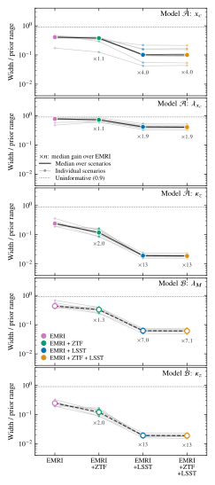
图注：向EMRI目录加入TDE目录后，共享质量与红移超参数约束的改善。每个面板给出EMRI、EMRI+ZTF、EMRI+LSST和三者合并目录的90%后验区间宽度，以相应超先验跨度归一化；上排为模型A（实心标记），下排为模型B（空心标记）。灰线为单个天体物理情景，黑线连接跨情景中位数，文字标注相对仅EMRI的中位改善倍数；点线表示无信息后验的宽度。
怎么看这张图：先比较每个面板从EMRI到EMRI+LSST的下降，再看增加ZTF后的变化。纵轴是相对先验跨度，并非不同参数共享一个物理误差单位；该图展示模拟条件下的精度，不验证母体函数是否正确。 主证据：共享质量/红移约束由大样本TDE驱动。
来源与置信度：arXiv HTML；source verified；https://arxiv.org/html/2611.27742v1/constraint_improvement.svg
图15：少量EMRI为何仍提供额外信息
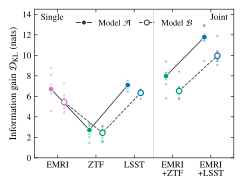
图注：各模拟目录从超先验到超后验的信息增益，以Kullback–Leibler散度表示，单位为nat。实心圆与实线对应模型A，空心圆与虚线对应模型B。
怎么看这张图：将EMRI和ZTF单独目录与合并目录对照，再联系图14。EMRI能约束本文TDE模型不测的自旋和偏心率，所以总信息更高不意味着所有共享参数更精确；数值也依赖先验及种群参数化。 补充共享参数图，避免将事件数量等同信息量。
来源与置信度：arXiv HTML；source verified；https://arxiv.org/html/2611.27742v1/info_budget.svg
强相关工作
本文的动力学底座是Broggi等（2022）的核星团时变EMRI/TDE率计算（参考文献明确列出原文DOI）。这项工作提供事件率与核环境的关系；本文新增的是将其嵌入星系目录、并合恢复、真实巡天选择与双探针种群推断。须注意本文进一步使用平均率和活动窗，因此不能把前作全部时变动力学都当作本次目录逐宿主重新计算过。
统计方法沿着Mandel、Farr与Gair（2019）关于带测量不确定性和选择偏差的种群推断（DOI），以及Chapman-Bird等（2023）的LISA EMRI机器学习灵敏度估计（DOI）发展。本文的重要扩展是为TDE另建选择过程，并在共享母体假设下联合目录，而非首次提出层次贝叶斯或神经网络选择校正。
电磁质量估计可对照Mockler等（2019）通过TDE光变称量黑洞的工作（DOI）；偏心率输入则关联Mancieri等（2026）的EMRI坠入偏心率模拟（DOI）。前者提醒质量信息来自具体光变物理，后者解释为何生成母体可以有高偏心率尾而可检样本不呈清晰双峰。此处关联依据本文参考文献及其使用方式，未声称这些外部工作在本次逐篇重新精读。
同一事件 / 同类源线索：
相似工作：
基础理论 / 方法工作：
相反观点 / 张力线索：
（未提供）
补充推荐：近期/较早未读论文（非今日论文）
1. Resolving the black hole sphere of influence in a hyperluminous obscured quasar at redshift 4.6
- 来源：Science Advances
- 链接：https://www.science.org/doi/abs/10.1126/sciadv.aek9035?af=R
- 作者：Mai Liao, Roberto J. Assef, Chao-Wei Tsai, Manuel Aravena, Román Fernández Aranda, Andrew W. Blain, Tanio Díaz-Santos, Peter Eisenhardt, Jorge González-López, Hyunsung D. Jun, Xiaofeng Li, Guodong Li, Lee R. Martin, Ana Posses, Devika Shobhana, Manuel Solimano, Daniel Stern, Andrey Vayner, Jingwen Wu, Dejene Zewdie
- 类型：补充推荐（近期/较早未读，非今日每日论文）
- 公告 / 来源日期：2026-11-20
- 阅读层级：重点精读
- 评分：novelty 9/10，importance 9/10，relevance 8/10，final 9.65/10
- 推荐理由：高红移遮蔽类星体动力学黑洞质量测量；需核两谱线、分辨率、湍流与质量退化
中文题目：在红移4.6的遮蔽类星体中分辨黑洞引力影响区：双谱线动力学称重及其宿主退化
做了什么：作者用ALMA观测红移$z=4.6019$的极亮遮蔽类星体W2246–0526，将[C II]远红外精细结构线与CO(12–11)分子转动线的空间分辨线宽结合起来。核心问题不是“气体运动快不快”，而是能否在扣除外流、考虑望远镜波束抹平之后，看到随半径向内持续上升、符合集中质量引力的速度弥散。两条谱线在内侧约520 pc给出一致趋势；在指定球对称弥散模型和宿主结构先验下，联合拟合得到$M_{\rm BH}=6.5^{+0.6}_{-0.7}\times10^9M_\odot$，条件统计误差不能包含所有系统误差。
这提供了作者所称首次在$z>2$通过空间分辨黑洞影响区获得的质量测量。影响区大小却远不如黑洞质量稳健：动力学最佳宿主模型给半径约1.37 kpc，换用尘埃气体与恒星质量剖面后可降至约0.38 kpc；两者仍大于核心CO波束的相应尺度。本文精读依据2026年11月5日更新的arXiv v3及其PDF附录，保留11月20日期刊发表日期；不沿用初版摘要中更小的误差。
为什么重要：高红移黑洞质量通常依靠宽线区半径—光度经验关系和单次光谱线宽推断，可能受几何、光度外推及遮蔽影响。本文在约百至千秒差距尺度直接利用引力对气体运动的影响，建立独立于宽线标定的检验。其结果与Mg II单次光谱质量在宽误差内一致，支持在这个对象上使用该方法，却不能凭一个源证明全体高光度类星体的标定无偏。突破在于识别空间上的引力信号，而非宣布精确测量了整个宿主质量。
理论 / 观测 / 仪器方法价值：最可借鉴的是完整前向建模：先按通道图识别外流，在不同空间环带分解谱线，再把黑洞与宿主引力预测转成谱线立方体，经过波束卷积与相同环带积分后重新拟合线宽。新增高分辨CO线提供了比[C II]更靠近黑洞的独立约束，也暴露外区两线不再追踪相同介质的问题。这种方法要求有足够信噪比、真实波束和明确辐射示踪范围，不能把一个积分线宽代进维里公式便称为影响区已分辨。
为什么应该关注：W2246–0526具有强遮蔽、极高辐射功率和外流，是研究黑洞增长与辐射反馈的极端环境。核区遮蔽在此可能保护[C II]不被过度电离，使动力学探针留在黑洞附近；同一遮蔽也令恒星质量和本征光度难以测准。对高能天文读者，值得关注的是环境如何改变可用的质量及吸积率推断，而不是从本次毫米波数据直接推导伽马或中微子发射。文章没有探测该源X射线，更没有测量高能粒子功率。
展开详细解读：文章讲解、背景、理论、重点章节、图表与相关工作
文章详细讲解
科学问题：当宇宙只有约13亿年时，一个亮度约$3.6\times10^{14}L_\odot$的遮蔽类星体是否已经拥有数十亿太阳质量的黑洞？此前Mg II线宽给出约$4.0^{+6.0}_{-2.4}\times10^9M_\odot$，但误差大且依赖低红移标定。作者要另找由引力直接限定的可观测量，同时排除外流使谱线变宽的混淆。
作者怎么做：在[C II]与CO谱线立方体中，以中心波束及外侧椭圆环抽取光谱，用固定于系统速度的高斯分量描述宿主弥散，用偏移高斯描述外流。随后将留下的宿主线宽按半径排列，比较黑洞加Sérsic宿主模型。Sérsic描述质量随半径的集中程度；真实观测不是局部速度值，必须将模型谱线先做波束卷积与环带平均。
关键结果：中心[C II]线宽为$322\pm15$ km/s，中心CO为$400\pm60$ km/s，两线内区共同支持向内上升的弥散。联合模型给黑洞质量约$6.5\times10^9M_\odot$，只用[C II]或CO分别得到约$6.6\times10^9$和$6.9\times10^9M_\odot$。这些并非三个完全独立天体实验，而是在同一环境与共同引力假设下的示踪线交叉检验。
局限与下一步：宿主动力学总质量只有约$1.3\times10^{10}M_\odot$，低于恒星和尘埃估计，引出近天球平面旋转、质心偏移、扩展恒星分量及辐射示踪选择问题。移除两个中心波束点后黑洞仍需约$5.2\times10^9M_\odot$，说明不是单点决定，但误差变大。下一步需更精细的三维动力学、更多遮蔽源和更好的宿主分解；原文没有完成这些工作。
关键结果是怎么做出来的
第一步是选择适合分辨影响区的对象。W2246–0526不仅亮，而且高度遮蔽；作者认为高柱密度能屏蔽核区硬辐射，使冷气体示踪线在深引力势区继续发光。这里的高柱密度依据远红外线比及同类源知识，X射线光度是中红外经验预测，不能写作直接X射线观测确认。
第二步是控制分辨率与灵敏度的交换。[C II]均匀加权波束为$0.089''\times0.053''$，自然加权用于外侧；CO最高分辨波束为$0.038''\times0.030''$，只有中心可用，还需robust=0、0.5和自然加权数据衔接外区。所有速度通道宽30 km/s。同一数据集换加权不会产生新独立曝光，作者用不同空间环选择减少重复采样。
第三步是分开引力线宽与外流。[C II]高速度通道有非对称、定向结构，CO弱得多。光谱拟合要求外流中心偏离系统速度至少200 km/s，宽度至少40 km/s，以避免用窄峰拟合噪声；按约化卡方改善增加分量。200次依观测误差重采样给谱线参数误差，中心点虽未正式检出外流，误差估计仍允许外流参数变化。不能把“未检出中心外流”当作“确定不存在”。
第四步是确定哪些半径可以联合称重。内侧约520 pc两线线宽一致；外侧CO弥散重新升高，与[C II]不同，作者解释为激发环境和激波贡献改变，并排除最外两个CO点。联合拟合于是使用7个[C II]点与4个CO点。这个范围选择具有物理动机，但也属于推断条件，不能将剔除点后得到的平滑剖面称为全气体一致。
第五步是拟合与替代解释比较。宿主形态先验限制指数在0.5–2、有效半径在1.1–1.6 kpc，联合结果$\chi^2=7.63$、约化值1.09。取消先验后黑洞质量仍约$6.2\times10^9M_\odot$，宿主结构却很松。无黑洞的单/双Sérsic及核星团模型拟合更差或要求异常集中、过大质量；这支持黑洞解释，但论文没有把这些比较转成经统一试验校正的发现显著性。
第六步是区分统计和系统范围。忽略宿主时质量可达$7.8\times10^9M_\odot$，删除中心点后降至$5.2\times10^9M_\odot$。强制较大宿主质量会产生明显外区残差，不能把较低黑洞质量当作同等可接受结果。影响区约1.37 kpc与保守约0.38 kpc反映宿主模型差别，不能混成同一后验的上下误差。
展开背景、理论、公式、模型和章节导读
背景知识
超大质量黑洞只在靠近中心的有限空间范围主导运动。远处气体主要感受恒星、气体和暗物质的合成势，即使谱线很宽也未必能测得黑洞质量。所谓影响区不是可见边界，更不是事件视界；它是一种依宿主模型定义的动力学尺度。
宽线区处在更小尺度，传统回响映射测出连续谱变化到发射线响应的时间延迟，用光行时得到距离。单次光谱方法再利用经验半径—光度关系，以观测亮度替代延迟测量。其效率适合大样本，但几何因子、光度各向异性与散射等都会进入质量系统误差，独立动力学质量因而很重要。
ALMA能够以角秒的几百分之一分辨遥远星系。本文宇宙学取$H_0=70$ km/s/Mpc、$\Omega_m=0.3$，在目标红移每角秒约6.5 kpc。CO最高分辨波束的几何均值0.034角秒对应约220 pc；这远大于宽线区和事件视界，却足以研究数十亿太阳质量黑洞的扩展引力影响。
[C II]是单电离碳的精细结构发射，CO(12–11)需要较高激发的分子气体。两者不天然追踪同一物质，强X射线可能把碳进一步电离，激波也能增强高阶CO。本文的策略正是先检查内区一致、外区分歧，再规定可用的动力学区域；遮蔽成为有利选源条件的同时，也限制了结论推广至无遮挡类星体。
基础理论 / 方法脉络
从引力到线宽的第一层是假设。论文采用局部速度弥散平方与包围质量除以半径成正比的球对称近似，系数为$2/3$。它不是对任意气体盘成立的万能质量公式，也不等于完整求解任意各向异性Jeans方程。气体若明显旋转、被强外流推动或偏离稳态，该关系须重新验证。
第二层是质量分解。点质量黑洞的贡献随半径减小持续上升，扩展宿主的包围质量则随半径增加。Sérsic指数和有效半径控制宿主集中程度；若允许任意极紧致核成分，它可能模仿点质量。因此必须同时利用形态信息、物理合理性和残差，不能仅看某个拟合是否收敛。
第三层是辐射与仪器。谱线强度决定每块气体对观测线宽的权重，波束将相邻半径混合，环带抽取再次平均。卷积后的谱线未必仍为单一精确高斯，作者在每个模型环带重新做高斯拟合，以尽量匹配观测估计器。直接平均本征弥散通常不等价于这一步。
第四层是环境力的竞争。辐射压力若重要会抵消引力，忽略它可能低估质量；额外湍动若增加线宽则可能高估质量。作者用高柱密度屏蔽和中心较陡的CO亮度剖面支持引力解释，但这些是对特定替代情景的论证，不是逐云团测量所有非引力加速度。
公式与推导
先定义尺度。作为引言使用的量级估算，恒星速度弥散$\sigma_\star$与黑洞势比较给出
$G$是引力常数，质量用太阳质量、距离用pc时可相容地选速度km/s。这里把低分辨气体线宽当作$\sigma_\star$只是预选目标的近似；外流污染会把分母变大、影响区估小。
论文附录式S3把这一物理图像具体化为拟合模型：
$r$为离核距离，$M_{\rm Host}(<r)$来自宿主质量剖面。在点质量占优区域立即得到
后一式为同一假设下的教学整理，不能直接套在未去外流且受波束平滑的观测点上。
为了走向观测，作者在每个半径构造高斯速度分布，其式S4写成
$v$相对系统速度，$I_R$是采用的径向强度权重。原文称$I_R$为总强度却以比例式省略归一化；这里保留作者公式口径，不宣称已独立复现其代码的径向归一化细节。
波束宽度由FWHM转为高斯标准差。作为标准高斯关系与原文卷积式的配套整理，
$b_{\rm maj},b_{\rm min}$与$r$必须采用同一角度或长度单位。原文式S5的前向投影为
它说明中心宽线也会进入外侧波束，观测中心线宽又被邻近窄线稀释。
最后按原文式S7匹配观测环带：
椭圆环的内外半径采用两轴几何均值。对$I_M$重新高斯拟合取得模型线宽，再与实际线宽比较；不是把理论曲线直接画到观测点上。原文也给出角积分转为零阶修正贝塞尔函数的加速形式，本解读未复算其数值积分。
物理影响区在指定宿主剖面下可由
确定，它解释为什么黑洞质量稳定而影响区大小仍随宿主估计改变。最后将质量联系吸积状态，标准电子散射Eddington标度为
代入本文主结果得到量级约1.5，与作者报告一致。该标度只帮助理解超Eddington比值，不能证明吸积几何、辐射各向同性或风的具体机制。
模型拟合 / 应用方法
数据输入分两层：第一层是连续谱扣除后的ALMA谱线立方体，第二层是环带光谱中宿主高斯的速度弥散。系统红移由中心[C II]拟合得到$4.6019\pm0.0001$。外流分量的位置与宽度约束参与谱线分解，因此第二层数据已经依赖一套分解模型，而不是原始二阶矩的简单列表。
动力学拟合四个主要参数是黑洞质量、宿主总质量、Sérsic指数及有效半径。作者使用emcee，32个walker、5000次迭代，以参数后验中位数和16–84百分位报告结果。正文没有在这里提供完整链诊断指标；不能仅凭迭代数宣称混合性已独立验证。宿主结构采用成像信息形成区间先验，黑洞质量对其相对稳定不意味着宿主参数也被数据独立测准。
每个参数组合先预测本征线谱，再卷积、积分、重新拟合高斯，最后比较线宽剖面。联合7+4个点的最佳约化卡方为1.09；[C II]单独为2.40，CO四点只拟合黑洞为0.15。很小的后者不能解释为更高发现置信度：点少、误差较大、模型自由度不同，约化卡方不是发现概率。原文以区域选择避免不同加权立方体重复取相同位置，但波束相关误差仍需谨慎。
稳健性检验包含删除中心点、分别拟合两条线、去掉宿主、改变宿主结构与偏心质量分布，以及只用扩展恒星成分或核星团代替黑洞。作者的比较支持中心集中引力，但固定大宿主质量的模型在外区系统性高估线宽，说明质量预算与简化动力学之间尚有张力。拟合失败的那组低质量不能并入一个貌似完整的统计误差带。
原稿存在应保留的文本问题：Eddington讨论一处把主质量指数写作$10^{10}$，与摘要、主拟合、表S5及Eddington比值不符，本稿采用一致的$10^9$口径；固定宿主的失败拟合在附录正文写$3.3\times10^9M_\odot$、表S5写$3.5\times10^9M_\odot$，不替作者裁定。HTML漏掉部分图像并导致后续编号位移，本稿原图和图号按v3 PDF核实。
重点章节 / 结果段落怎么读
-
引言与Results的High-resolution observations：先看为什么无遮挡高红移类星体可能缺核区[C II]，再看W2246的遮蔽、预估影响区与实际波束是否匹配。这里决定“能不能测”，不只是选源介绍。
-
附录6、8–10和表S1、S3、S4：沿数据加权、通道图、环带谱线拟合阅读，确认400 km/s的中心CO弥散与外流分量如何分开。重点关注最外两CO点被排除的物理理由。
-
附录11、12和表S5–S7：从式S3–S7读到前向建模，再比较有无宿主先验、中心点删除和替代核结构。表格中的质量误差与各模型约化卡方不能混成一个共同显著性。
-
附录13–15及PDF图S37：检查宿主质量偏低、质心偏移、旋转和辐射压力的讨论。把“黑洞质量相对稳健”与“全部宿主动力学已解决”分开，再回看共演化图的恒星质量横轴。
关键图表与解读
图2：双谱线速度弥散、引力分量与残差
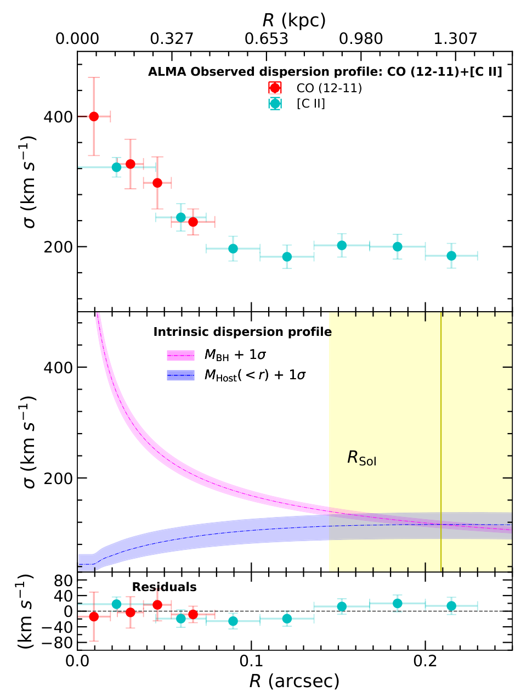
图注：上：CO(12–11)红点和[C II]青点的环带速度弥散，横轴为环带中点沿长轴的角距离，顶部为kpc，纵轴为km/s。中：最佳黑洞质量对应的本征弥散为品红线与1σ带，宿主包围质量对应蓝线与带；黄色线和阴影标示该动力学宿主模型下影响区半径及1σ范围。下：扣除外流后的观测弥散相对已考虑波束平滑的黑洞加宿主总模型残差。
怎么看这张图：先看两种示踪线共同向内升高，再看中图点质量贡献与扩展宿主的差异。中图是本征分量而上图是波束与环带混合后的量，不能直接逐点对比。黄色影响区依赖宿主模型，需与图S37一起读。 质量估计核心证据与影响区系统限制
来源与置信度：arXiv v3 PDF crop；source verified；https://arxiv.org/pdf/2504.13409v3#page=13
图S37：质量剖面改变影响区尺度
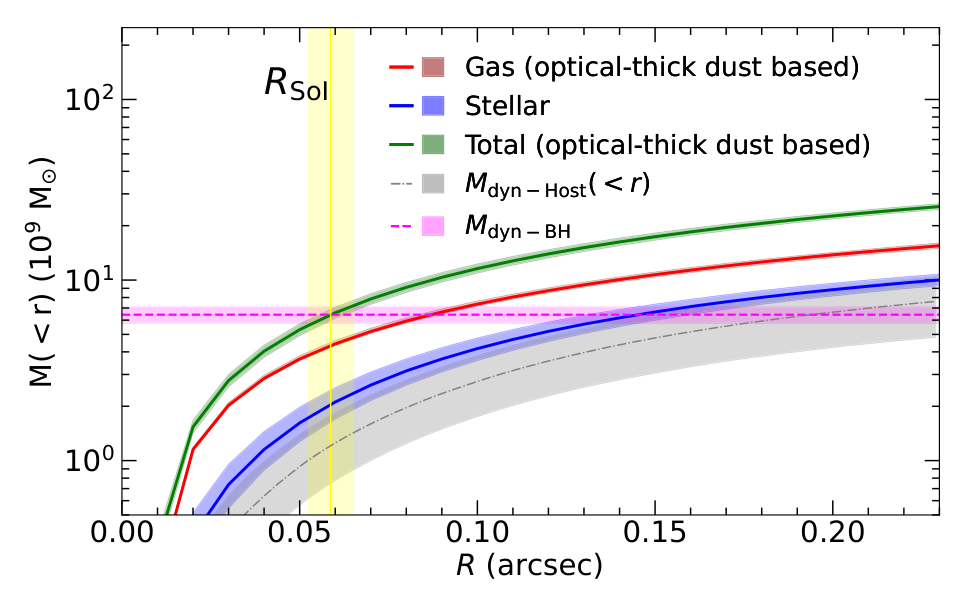
图注：横轴为离核角距离，纵轴为半径内包围质量，以10^9太阳质量为单位、采用对数刻度。红实线为光学厚尘埃模型推得的气体质量，蓝线为JWST恒星质量，绿线为两者之和；灰点划线是最佳动力学宿主，品红水平虚线是动力学黑洞质量。曲线和阴影分别为中位数与1σ区间。黄色标记气体加恒星包围质量等于黑洞质量的位置，图只画至0.23角秒。
怎么看这张图：绿线比灰色宿主增长更快，交黑洞水平线的位置更靠内，展示影响区半径的系统依赖。它不等于将这一较重宿主强制代入动力学拟合后仍能得到同样好残差；原文明确报告强迫拟合失败。 质量估计核心证据与影响区系统限制
来源与置信度：arXiv v3 PDF crop；source verified；https://arxiv.org/pdf/2504.13409v3#page=91
强相关工作
同源前作Tsai等（2018，https://doi.org/10.3847/1538-4357/aae698）用Mg II宽线与本征连续谱估算黑洞质量和超Eddington吸积；Díaz-Santos等（2018，https://doi.org/10.1126/science.aap7605）展示多重并合和尘埃流。本文增加的是双谱线空间分辨动力学，既检验前者的质量标定，也说明后者揭示的复杂宿主不能被当作理想静态球体。两者是同源物理背景，不能作为两个额外独立黑洞质量样本。
对照工作Meyer等（2023，https://doi.org/10.3847/1538-4357/acf047）在约300 pc分辨率观测$z=6.79$类星体，未取得明确[C II]黑洞影响信号；它使“遮蔽保护示踪气体”的选源解释具有比较意义，但不同源的气体分布、质量和数据质量也不同。GRAVITY在高红移类星体的宽线动力学测量（https://doi.org/10.1038/s41586-024-07053-4）探测另一空间尺度。本文所谓首次应限定为其$z>2$、分辨扩展影响区的口径，不能说此前高红移黑洞没有任何动力学测量。
同一事件 / 同类源线索：
相似工作：
基础理论 / 方法工作：
相反观点 / 张力线索：
（未提供）
2. The nature of the Norma arm as a bar-driven star-forming shock front
- 来源：Nature Astronomy
- 链接：https://www.nature.com/articles/s41550-026-03010-5
- 作者：Hillary Davis, Joss Bland-Hawthorn, Thor Tepper-García, Oscar Agertz, Elizabeth J. Iles
- 类型：补充推荐（近期/较早未读，非今日每日论文）
- 公告 / 来源日期：2026-11-20
- 阅读层级：重点精读
- 评分：novelty 8/10，importance 8/10，relevance 8/10，final 9.00/10
- 推荐理由：Norma脉泽与棒激波关联改变旋臂解释，双模拟和CO运动学可检验；精读须限定目视匹配及棒长定义
中文题目：矩尺臂可能是银河棒的成星激波前沿：用速度峰与脉泽重画内银河
做了什么：银河系地图通常把矩尺臂（Norma arm）画成一条旋臂，但我们处在银盘内部，沿同一视线看到的气体会叠加，光谱速度也不直接等于距离。作者将银河系类比的三维自引力气体模拟，与一氧化碳（CO）、中性氢（H I）的银经—视向速度图以及大质量恒星形成区的脉泽视差位置相比较，提出矩尺臂的一段年轻脉泽更可能沿银河棒前缘的弯曲激波／尘埃带分布。这里脉泽是受激放大产生的窄线射电源，几何视差提供了独立于圆轨道假设的距离支点。
关键不是仅把一条模拟曲线叠到天图上：作者先在模拟中追踪终端速度包络的“第二峰”，显示其银经随棒增长而移动，并接近切点圆与棒尘埃带的交点，再把该映射用于观测。将模拟快照旋转、非等比例缩放以对齐脉泽后，得到棒半长轴约 $4.3\pm0.2\,\mathrm{kpc}$、半短轴约 $2.3\pm0.2\,\mathrm{kpc}$、方向角 $20^{+5}_{-2}$ 度，并倾向于模式速度不高于约 $40\,\mathrm{km\,s^{-1}\,kpc^{-1}}$ 的长而慢的棒。这些是条件性的形态匹配估计：长度误差来自视差允许的目视匹配范围，不包含不同棒长定义及模拟系统误差；它不是已经排除所有旋臂解释的精密联合拟合。
为什么重要：这项研究改变的是“观测到的气体脊属于什么动力学结构”这一层解释。若矩尺臂脉泽确实位于棒激波而非普通旋臂，银河棒不仅输送气体，也在第一象限的尘埃带上伴有极年轻恒星形成；把所有棒尘埃带都视为强剪切下的成星禁区就不成立。它同时把通常被看成旋臂的较大银经速度峰变成棒几何的探针。不过，论文主要支持一段结构的重解释，并未由此重建整个银河系旋臂网络或测出全棒成星效率。
理论 / 观测 / 仪器方法价值：最有用的方法是先在模拟真值空间中标定投影特征，再与独立几何距离交叉约束。作者没有假定全部内银河气体都满足圆运动，而是识别圆运动反演误差偶然很小的局部区域，用它追踪激波前沿，并以多个演化时刻和第二个棒旋星系模型检查映射。可复用之处是把峰的位置、峰的速度和形态分别解释：银经位置主要约束几何，速度还受棒模式速度和棒—旋臂连接影响。应用时必须保留旋转曲线、太阳位置、非圆运动和峰识别的依赖。
为什么应该关注：对研究银河系高能辐射的读者，气体距离和成星区域归属是建立源环境、气体靶场和空间模板的基础。本文没有分析伽马射线或宇宙线，也不直接给出高能发射预言；值得关注的是，若把棒尘埃带误归为旋臂，沿视线分配气体及年轻源时可能产生结构性偏差。后续应检验更广范围的脉泽、气体自转与非圆运动是否同时支持这一结构，而不是立刻用这次目视缩放后的棒替换全部银河气体模型。
展开详细解读：文章讲解、背景、理论、重点章节、图表与相关工作
文章详细讲解
科学问题：同一条“臂”可以有不同物理身份。 内银河的气体发射通常用银经 $\ell$ 和相对本地标准静止系的视向速度 $V_{\rm los}$ 表示。一条连续的脊可能来自旋臂，也可能来自棒驱动的流动、核环或尘埃带。矩尺臂的年轻脉泽提供三角视差，却不能仅凭位置弯曲就断言它属于旋臂。作者要检验的是，脉泽轨迹是否与棒激波在真实位置及速度空间中的对应关系更一致。
作者怎么做：先解决映射，再解释银河观测。 主模型是演化约 $4.3\,\mathrm{Gyr}$ 的银河系类比三维模拟，含恒星盘、经典核球、暗晕和气体盘，并纳入自引力、冷却加热、恒星形成与反馈。对模拟气体应用通常的圆轨道运动学距离法，再与真实距离比较，能够直接看到错误发生在哪里。作者发现棒前缘附近有相对距离误差小于 $2\%$ 的带状区域，其投影形成速度图中的环状脊和第二峰；这种局部小误差不能推广为整个棒区的圆运动成立。
关键结果：几何与速度提供互补约束。 模拟的第二峰银经随棒增长而向外移，与切点圆交会尘埃带的方向接近。银河CO观测的第二峰及矩尺臂脉泽也沿类似轨迹，支持棒尘埃带比部分传统连接臂解释更向外、并具有弯曲形态。选取 $t=3.95\,\mathrm{Gyr}$ 快照缩放和旋转后，第一象限脉泽能够贴近其激波前沿。年轻脉泽尚未远离出生气体，因而在这一结构归属下，尘埃带上存在近期恒星形成。
局限与下一步：形态相符不等于唯一动力学解。 方向角和半轴采用目视匹配，非等比例空间缩放没有同步调整质量与势，未构成重新演化的自洽银河模型。模式速度结论也受旋臂连接影响；其他模拟中第二峰还可对应棒相关的3 kpc结构，而非严格的尘埃带。下一步需要将真实误差模型、峰选择、不同棒长定义以及独立脉泽样本放进一致的前向比较中，检验旋臂、棒轨道和激波解释之间的区分度。
关键结果是怎么做出来的
第一步是建立有真值的误差地图。作者在模拟中同时知道气体的真实日心距离和速度，把圆运动公式反演得到的距离与真值比较。图1显示误差在棒和旋臂附近正负交替，部分区域因无物理解而被剔除；低误差区并不普遍重合于旋臂密度峰。三维气体可沿垂向响应激波，这也是作者认为它与较简单二维结果不同的原因，但本文并未给出全物理参数扫描来隔离这一原因。
第二步是选取棒区域中的低误差轨迹。图2用同一组着色点连接位置图与速度图：从棒端到核区的连续点列在速度平面上形成弯曲结构，第二峰位于切点圆与尘埃带交会附近。这里采用小于2%的阈值是模拟诊断工具，因为观测本身并不知道全部气体的真实距离；不能在真实CO图上直接套用这一真值筛选。
第三步是检查时间一致性，避免只展示一个恰好对齐的快照。作者沿切点圆周围宽约0.1 kpc的环带求平均银经和视向速度，与直接从模拟速度图提取的终端包络比较。图3展示若干代表时刻，图4进一步跟踪峰的银经随时间演化。尘埃带低误差轨迹与第一象限第二峰的共同漂移是论文最有力的模型内交叉检查，然而多个时刻来自同一演化模型，不能当作独立银河样本数。
第四步是检验模型外的一致性。第二套模拟以NGC 4303为参照，采用不同的气体求解方式和更小的棒，作者选取其920 Myr快照，同样找到第二峰方向与切点圆—尘埃带交点接近。它说明映射不只存在于一个数值实现。该模型并非银河系拟合，选取的是尘埃带已清晰形成的时刻，故这是有限的稳健性证据而非普适定理。
第五步才把观测放入解释链。CO第二峰的坐标分别通过切点几何和运动学距离反演定位；图5将其与脉泽视差位置、H I速度图及模拟相比较。观测峰的银经比原模拟稍大而速度稍低，与更长、更慢的棒相容，但降低峰速度也可能来自棒—旋臂连接状态改变。图6通过空间缩放得到形态上的最佳对齐，必须与上述速度退化一起理解。
最后核查数值误差的来源。$4.3\pm0.2\,\mathrm{kpc}$ 是以尖角 $x_1$ 轨道尺度定义的半长轴；视差误差传播到平面后，作者目视寻找仍能贴合误差条的极端缩放与旋转。方法节另外比较恒星密度轮廓和傅里叶定义，缩放后各方法得到3.9—4.95 kpc，汇总约 $4.5\pm0.5\,\mathrm{kpc}$。后一个范围提示定义差异的重要性，不能把前一个小误差当成全部不确定性，更不能据此宣称已精确解决长棒／短棒争论。
展开背景、理论、公式、模型和章节导读
背景知识
银河系的棒是恒星密度分布中的非轴对称长条结构。它的引力势随一个模式速度旋转，而单颗恒星和气体并不以同一角速度刚性转动。棒可以交换物质角动量、推动气体向内流动，因此在气体图上出现核环、尘埃带和稀疏空腔；这些结构与外盘旋臂在投影上可能相接，却不是同一种动力学对象。
尘埃带常沿棒的前缘出现。气体进入非圆流动后在激波处压缩、耗散能量并改变轨道，密度提高一方面有利于自引力坍缩，另一方面冲击、湍动和剪切也可能破坏云团。因而“有致密气体”并不自动意味着高成星效率，“有棒激波”也不意味着绝无恒星形成。论文的脉泽关联主要证明局部有很年轻的成星活动，并没有量化两种作用的净效率。
我们位于银盘内部，没有外星系那样直接的俯视图。CO和H I光谱提供高质量的速度信息，但一条视线穿过多个距离，同一速度也可能出现在近、远两处。运动学距离法通过假定旋转曲线把速度转为半径，再用几何求日心距离；棒引起的非圆速度会破坏这一转换。独立视差就格外重要，因为它能够为投影重建提供少数但可靠的空间锚点。
大质量恒星形成区中的水和甲醇脉泽具有很高亮度，适合用长基线射电干涉进行视差测量。本文使用既有BeSSeL和VERA相关汇编中的年轻源，重新讨论其结构归属，并未发现一批新的脉泽。过去按位置连续性命名的“矩尺臂”在这里成为待检验的标签；论文试图修改的是标签背后的动力学解释，而非否认这些源的观测位置。
银河棒长度本身也依赖定义。用恒星亮度或密度对比、傅里叶非轴对称振幅、轨道族外边界或气体尘埃带作标尺，可能对同一个棒给出不同半长轴。比较文献数值前必须核对定义，尤其本文采用的尖角轨道尺度偏重气体结构约束；单独列出一个更小的误差并不能使不同定义变成可直接比较的测量。
基础理论 / 方法脉络
圆运动反演的基础是视线投影。对于平面内半径为 $R$ 的气体，若其速度只有方位向分量，扣除太阳绕银心的运动后，观测速度由气体与太阳的角速度差决定。给定旋转曲线就能求半径，但这一步已经加入轴对称和近圆运动假设；如果存在棒驱动径向流，新增的视线分量会被错误地解释为半径变化。
从半径再到日心距离要使用三角几何。太阳圈内的同一圆轨道一般与一条视线有两次交点，形成近远距离二义性；两解合并处是切点。所有切点在银河平面构成一条连接太阳和银心的圆，其用途是为速度包络提供几何参照。真实非圆运动下，最大视向速度的位置可以偏离几何切点，本文正是在模拟中检验两者何时仍近似相符。
棒势中的恒星闭合轨道通常用 $x_1$、$x_2$ 族描述：前者大体沿棒，后者位于更内区。可碰撞气体不能像无碰撞恒星那样无代价地穿越相交流线，因而在轨道过渡附近形成激波和耗散。本文的尘埃带、核环及两者间的气体贫乏空腔是一组相互联系的结构；第二峰不是凭空新增的发射源，而是这些流动投影后终端包络的一个转折。
低运动学距离误差不意味着局部速度完全圆形。即使气体有复杂三维流动，某些方向的投影误差仍可能抵消，使圆运动反演偶然接近真值。作者利用这种局部吻合来标记激波前沿，因此其阈值和空间连续性需要通过模拟真值确认。把低误差点理解成“所有气体都走圆轨道”会倒置这项方法的逻辑。
峰的位置和峰的高度应分开解释。几何扩大的棒会使尘埃带与切点圆相交的银经改变；峰速度却同时受模式速度、非圆流和旋臂暂时附着于棒端的影响。论文发现峰速度随 $m=2$ 非轴对称振幅一起波动，而峰银经更稳定地追踪棒几何。所谓“长、慢”因而不是从一个速度点独立测出的两个参数，而是多幅投影及形态的条件性综合判断。
公式与推导
以下把论文方法节的两条运动学距离方程与必要的平面几何连接起来。除明确标注的原文方程与阈值，其余为解释假设的教学推导，不是作者额外完成的拟合。
- 先取低银纬、圆运动极限。设太阳银心距离和圆速度为 $R_0,\Theta_0$，气体圆速度为 $\Theta(R)$，则相对太阳本地标准静止系的视向速度为
括号中的量具有速度单位；若气体与太阳具有相同角速度，该视线投影为零。棒区额外的径向和垂向运动不在这条教学关系中。
- 将上一式移项得到论文式(1)：
因为 $\Theta$ 本身依赖 $R$，一般须结合给定旋转曲线求解。分母很小时反演敏感，不能因方程写得简洁就把所得半径视为可靠测量。
- 太阳、银心和气体构成三角形，教学几何关系为
这里 $d$ 是日心距离。将它看成关于 $d$ 的二次方程，便将速度约束转换为空间位置，同时暴露近远解的问题。
- 求解得到论文式(2)：
太阳圈内的正负号分别给近远交点；真实资料需要额外信息决定分支。作者对导致负半径的点剔除，对根号内为负的情况将根号置零，等价于放在切点；这是明确的数据处理约定，不是非圆流自动恢复了唯一距离。
- 当两解合并时得到切点尺度：
按太阳位于 $(-R_0,0)$ 的坐标约定，进一步有
后一组为教学推导，说明为什么所有切点构成圆。观测第二峰的银经可由此给一个几何位置，但它是否真的对应尘埃带必须由模拟和独立视差检验。
- 模拟的真值使论文能够定义
这个无量纲阈值筛出低误差区域。它只是在已知 $d_{\rm true}$ 时可计算，不能被当成观测每个分子云距离都有2%误差的承诺。
- 为理解反演敏感性，可在局部将旋转曲线近似为常数再求导：
这解释了分母接近零时小速度扰动会产生大距离误差。若保留旋转曲线斜率，导数还须加入隐函数项；这里不能用固定速度近似去量化全银河误差。
- 最后，文中讨论慢棒常用的比例为
$R_{\rm CR}$ 是物质圆运动角速度与棒模式速度相等的共转半径。常见的 $\mathcal R>1.4$ 分类依赖棒长定义；本文也提醒它不总能直接诊断 $\Omega_{\rm p}$。因此不能从成星活跃或一个长度数值单独推出精确的模式速度。
模型拟合 / 应用方法
输入有三层：已发表的脉泽三角视差及位置误差、CO／H I的银经—速度分布，以及包含气体真值的三维模拟。主模型用Nexus构造初始条件、RAMSES演化，最高空间分辨率74 pc；这足以研究棒和尘埃带的千秒差距形态，并不等于直接解析单个脉泽的形成。第二模型采用平滑粒子流体力学，气体初始粒子质量约1044太阳质量、软化长度10 pc，目标是检验结构映射而非给出独立银河参数拟合。
预处理也影响终端峰。作者剔除质量低于50太阳质量或视向速度绝对值高于300 km/s的一些模拟气体包，避免反馈产生的异常分量支配运动学反演。峰提取从每个银经分箱的最大速度包络出发，去异常点、平滑，再调用找峰算法，并视觉检查和手工调整部分峰。这意味着峰坐标含分析选择，原文没有把这部分不确定性统一转化为最终棒参数的似然。
几何匹配采用3.95 Gyr快照，把平面分布按两个方向分别缩放约1.16和1.24，再旋转以对齐矩尺臂脉泽。随后目视勾画尖角轨道的半长轴和半短轴。自由度是图形尺度与方向，主文没有报告一个覆盖全部气体速度、恒星分布及脉泽协方差的联合后验，也没有给出所有竞争结构模型的贝叶斯因子；解读不能补写这些不存在的统计验收。
参数区间由视差误差传播至 $x,y$ 后的极端可接受目视匹配确定。方法节明确说这些区间没有包括棒长测量方法之间的变化，而非等比例缩放又没有改变质量，可能改变了对实际势和密度的解释。这里应同时展示局部匹配的较窄区间与不同定义的离散程度，不能选择性保留最精确的数字。
验证重点是跨空间表示与跨模拟的一致性，而不是残差最小化。图4将真实投影峰和切点上的轨迹对照；第二模拟显示相似的交点关系；图5再核对观测位置和速度。论文承认其他模拟有第二峰追踪3 kpc棒结构的反例，因此“峰来自棒相关结构”可能比“峰总是尘埃带”更稳健。需要未来检验的项目包括峰识别选择、旋转曲线、独立脉泽和自洽质量模型；这里仅列为后续诊断，不写成作者已经完成。
重点章节 / 结果段落怎么读
-
先读Main中的连接臂几何争议及扩展数据图2：弄清第一峰、第二峰和传统低银经连接臂不是同一条结构，然后才理解为何作者要把尘埃带向更大银经移动。
-
联读“Kinematic error maps”和“Low KD error zone”：抓住真值误差小于2%的含义。图2中的点是从模拟位置空间筛出的，颜色只连接同一气体轨迹，并不标识恒星年龄或温度。
-
读“The second peak”和图4：看同一条尘埃带交点如何随着棒增长移动，以及峰速度为何还会被棒—旋臂连接调制。这里决定投影特征是否值得搬到真实银河系。
-
读“The Norma arm traces...”及图5、图6：区分未缩放模拟与观测的相似性、最终形态对齐、参数估计三步，不能把最终图形贴合作为前两步的独立验证。
-
最后必须读Methods的“Measuring the bar length”：最终误差来自视差允许的目视极端情况，且不同棒长定义并未包含在摘要误差中。这个段落决定结论应以多强的措辞呈现。
关键图表与解读
图2

图注：主模型在3.95 Gyr时的气体分布：左为银河平面位置，横纵轴单位为kpc；右为银经（度）与视向速度（km/s），右图银经由左向右递减。白色椭圆目视限定棒区，其中大部分低运动学距离误差点为绿色；第一象限棒前缘和核旋结构的点按从外端到中心的顺序由浅黄逐渐变为深紫，对应上方0—1的进程色标。白色虚线圆为切点圆，直虚线为选定银经方向。右图标出第一峰和第二峰；同一组彩色点将位置轨迹与速度轨迹联系起来。
怎么看这张图：沿浅黄到深紫追踪同一组点，可以看到一条连续空间曲线在速度平面上折回形成第二峰。颜色表示沿轨迹的顺序，不是温度或密度；低误差筛选来自模拟真值，不能直接复制为观测距离精度。 连接模拟标定、时间检验与观测匹配的核心证据。
来源与置信度：Nature Astronomy HTML；source verified；https://media.springernature.com/full/springer-static/image/art%3A10.1038%2Fs41550-026-03010-5/MediaObjects/41550_2026_3010_Fig2_HTML.png
图4
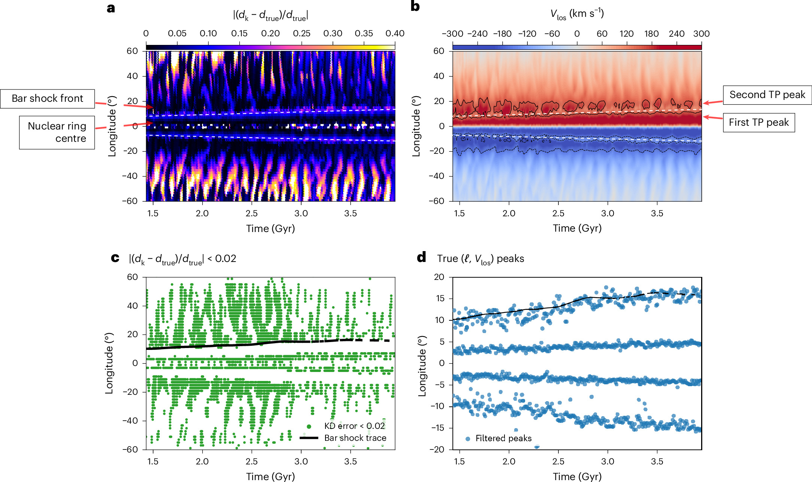
图注：横轴均为模拟时间（Gyr），纵轴为银经（度）。a沿切点圆跟踪相对运动学距离误差的绝对值，白虚线标记低银经的中等误差脊；色标从0至0.40。b沿同一圆跟踪视向速度，色标单位km/s，标出第一和第二切点速度峰。c绿色点为相对误差小于0.02的区域，黑线追踪第一象限棒激波前沿对应的低误差带。d蓝点为直接从模拟银经—速度分布识别出的峰位置，叠加c中的黑线比较；上方峰族与这条曲线相近。
怎么看这张图：先看c的黑线，再看d上方蓝点是否随时间共同漂移，这是映射跨快照稳定性的关键。下方和第一峰点列不能混成同一条激波轨迹；这些快照也不是多个独立银河系样本。 连接模拟标定、时间检验与观测匹配的核心证据。
来源与置信度：Nature Astronomy HTML；source verified；https://media.springernature.com/full/springer-static/image/art%3A10.1038%2Fs41550-026-03010-5/MediaObjects/41550_2026_3010_Fig4_HTML.png
图6
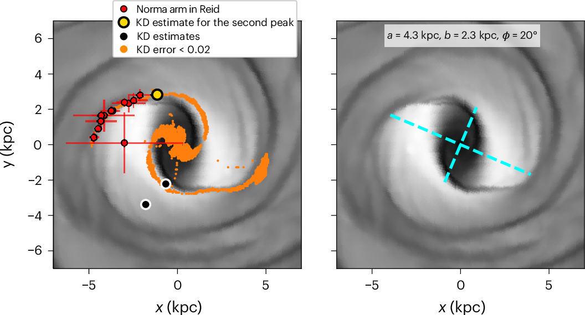
图注：将3.95 Gyr模拟快照旋转和缩放后与矩尺臂脉泽比较，横纵轴为银河平面坐标，单位kpc。左图橙点为变换后的低运动学距离误差区，黑边红点为矩尺臂脉泽，误差条由其视差误差传播得到；黑边金色点与白边黑点为第一、第四象限速度峰经运动学距离法预测的位置，可能对应切点圆与尘埃带或其他臂状结构交点。右图青色虚线目视标出低密度激波空腔／尖角轨道的长短轴，其半长度给出a=4.3 kpc、b=2.3 kpc，图示方向角为20度。
怎么看这张图：红点贴近橙色带是形态相容性的直观证据，部分视差误差条很大。青线是目视定义而非后验等高线；缩放没有同步调整质量，摘要中的小误差不能覆盖模型与棒长定义差异。 连接模拟标定、时间检验与观测匹配的核心证据。
来源与置信度：Nature Astronomy HTML；source verified；https://media.springernature.com/full/springer-static/image/art%3A10.1038%2Fs41550-026-03010-5/MediaObjects/41550_2026_3010_Fig6_HTML.png
强相关工作
Reid等人的2019年大质量恒星形成区视差汇编是本文的直接观测基础（原文参考文献1，DOI:10.3847/1538-4357/ab4a11）。它提供位置、速度及旋臂标识；本文主要重新解释这些既有空间锚点，而不是用另一批独立数据复现同一条矩尺臂。Kumar等2025年关于3 kpc结构与 $x_1$ 轨道的研究（参考文献2，DOI:10.3847/1538-4357/adb70f）已提示某些“臂”可能是棒轨道结构；本文进一步强调可耗散气体的激波前沿和年轻成星源，二者的物理层次相关但不完全相同。以上关系依据本论文引用与讨论核对，未宣称重新精读两篇前作。
Binney等1991年的银河中心气体动力学工作（参考文献3，DOI:10.1093/mnras/252.2.210）构成轨道族和气体激波解释的基础。更近的Davis等银河系类比模拟研究（参考文献10，DOI:10.1093/mnras/staf2166）提供本文的模型背景；这使其时间序列检验有物理连续性，也意味着不能把同源模拟算成完全独立证据。Wegg等2015年从恒星分布约束棒结构（参考文献30，DOI:10.1093/mnras/stv745）提供另一类标尺。论文声称与长棒相容，但恒星密度边界与气体尖角轨道的长度定义不同，合理比较应解释标尺差异而不是简单平均数值。
同一事件 / 同类源线索：
相似工作：
- https://doi.org/10.3847/1538-4357/ab4a11
- https://doi.org/10.3847/1538-4357/adb70f
- https://doi.org/10.1093/mnras/staf2166
基础理论 / 方法工作：
相反观点 / 张力线索：
（未提供）
相关简报
1. Lost in the Signal Model: Confusion Between Deterministic and Stochastic Gravitational Wave Signals in Pulsar Timing Array Data
- 来源：arXiv / astro-ph.HE
- 链接：https://arxiv.org/abs/2611.26681
- 作者：Caitlin A. Witt, Nihan S. Pol
- 公告 / 来源日期：2026-11-23
- 阅读层级：相关简报
- 评分：novelty 7/10，importance 8/10，relevance 8/10，final 8.70/10
- 推荐理由：PTA连续波与随机背景相互污染的注入恢复研究给出背景谱参数偏移、联合搜索恢复及参数精度演化，具有下一阶段搜索实践价值；混合信号需联合拟合这一问题本身已有基础，摘要尚未显示足够新的物理发现或普适定量界限，创新性按有用新约束计7。
中文题目：PTA模拟揭示连续引力波如何污染随机背景参数
问题、方法与结论：作者以NANOGrav 15年数据的67颗脉冲星、最长约16年时基及噪声水平为模板，构造8100套模拟：27组双黑洞啁啾质量、频率与距离组合，100个噪声实现，以及无背景、共同无相关红噪声和含Hellings–Downs空间相关的背景三种情形。漏建模的单源连续波会改变随机背景的振幅和谱指数；高质量双星的脉冲星项经历较长时间演化，将功率铺到多个频率箱。联合建模可改善结果，但只有连续波参数被一致恢复的子样本，背景恢复才接近纯背景基线。
意义与贡献：这比“加入一个连续波模板即可消除偏差”更严格：实际采样和参数退化也可能使联合分析失败。作者同时展示，空间相关统计量会受强连续波污染，因此共同红噪声、随机背景证据和单源发现必须分开解释。
可借鉴之处：自由频谱诊断值得借鉴：先看多个频率箱如何偏离背景幂律，再追踪地球项与脉冲星项的贡献。注入恢复应改变噪声实现和天区，而不只换信号强度；低灵敏度天区的散布更大，说明天区不均匀性须纳入多信使定位预期。
局限与关注点：这些是模拟，不是NANOGrav新源发现。白噪声参数固定为注入值，源只取有限参数网格和特定背景谱；“一致恢复”要求真值落在多个参数的一维1σ区间，不能在真实数据直接知道。图5称约40%满足CW筛选，讨论称约30%同时恢复两类信号，口径不同，均不能当探测率。真实背景也可能偏离幂律，不能仅用谱变直作为模型正确的保证。
图5
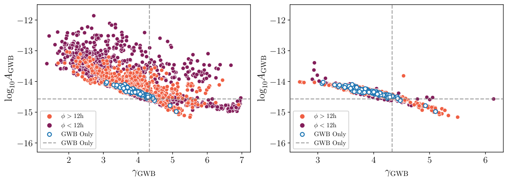
图注：共同无相关红噪声过程与单源连续波联合建模后的背景幂律参数恢复。左图中，明显的啁啾质量与频率相关结构减弱，但含连续波的橙色及紫色点相对于纯背景的蓝圆点仍有偏移，赤经小于12小时的低灵敏度天区偏差较大。右图仅保留连续波关键参数与注入值一致的模拟，其背景恢复更接近纯背景基线；图注指出约40%的模拟属于这一连续波一致恢复子集。
怎么看这张图：比较左右图时要注意右图经过真值筛选，不能把它当成同一算法对全部数据的无条件成功。它支持“正确恢复连续波后背景可恢复”，同时暴露联合模板本身仍不足。 直接展示本文比既有联合搜索更重要的条件性结论与失败子样本。
来源与置信度：arXiv HTML；source verified；https://arxiv.org/html/2611.26681v1/skew_cw_side.png
2. Blazars through the eyes of REDSoX and GOSoX
- 来源：arXiv / astro-ph.HE
- 链接：https://arxiv.org/abs/2611.26682
- 作者：Sara Capecchiacci, Ioannis Liodakis, Herman L. Marshall, Swati Ravi, Haocheng Zhang
- 公告 / 来源日期：2026-11-23
- 阅读层级：相关简报
- 评分：novelty 7/10，importance 7/10，relevance 9/10，final 8.70/10
- 推荐理由：通过SED拟合、三类辐射情景与MDP比较评估软X射线偏振目标及探测概率，连接喷流辐射和未来观测规划；属于任务前景与目标筛选，尚无新偏振观测，机制可区分性依赖情景和仪器预期，贡献有用但不按计划任务知名度升为显著突破。
中文题目：软X射线偏振目标筛选：GOSoX对耀变体的条件性前景
问题、方法与结论：作者为0.2–0.4 keV软X射线偏振观测评估两批耀变体：RoboPol的62个伽马明亮源加两个补充目标，以及CAZ与eROSITA交叉匹配的63个源。以三类代表源的谱能分布和轻子、强子、混合偏振模板，按目标峰频、通量及光学偏振作缩放，再与最低可探测偏振度MDP比较。高同步峰源采用300 ks、其他源1 Ms曝光；Mrk 421和1ES 1959+650是较有利的已知目标。1000次通量与偏振抽样给出的超阈值比例用于排序，并非已经测得的软X射线偏振。
意义与贡献：软X射线可连接光学和更硬X射线的偏振信息，为喷流磁场及辐射成分增加约束。本文的实际贡献是统一的候选筛选框架；多能段偏振差异提供检验轻子和强子情景的机会，单次偏振探测本身不等于发现质子辐射或中微子源。
可借鉴之处：方法把可测通量、偏振模型和有效面积连接起来，并明确曝光依赖；没有光学监测的目标用峰频分箱的典型偏振作代替，还比较X射线/光学偏振比2.5的经验估计。可据此优先安排同时多波段监测，再用实际源状态更新预期。
局限与关注点：灵敏度估计忽略背景，调制因子取0.95，假设偏振角约14天内稳定；长期平均谱与非同时资料不能覆盖全部变异。原文部分LSP/ISP/HSP与谱峰归属描述前后矛盾，表4也存在名义偏振低于MDP却报100%概率的行，因此不采用这些概率作精确排名。模板、吸收及真实仪器响应均须逐源复核，本文尚不支持定量保证可探测或区分机制。
图4
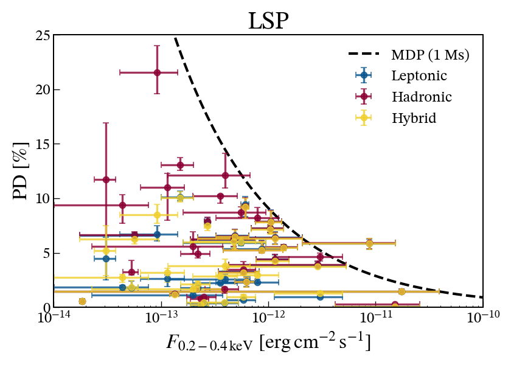
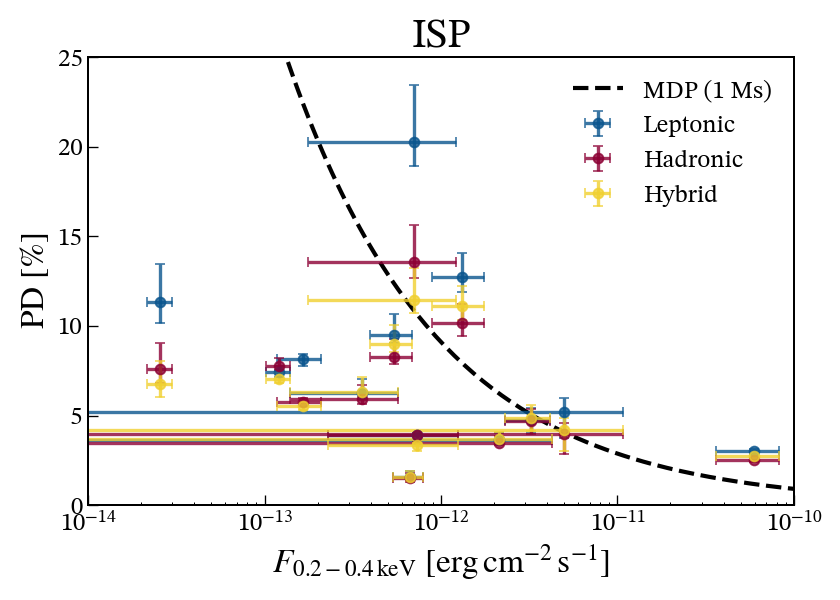
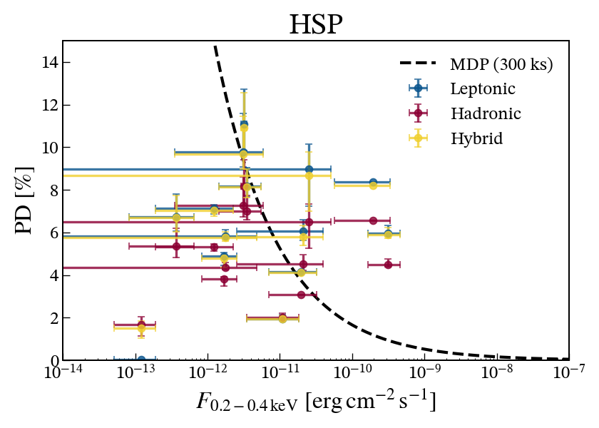
图注：RoboPol监测样本在GOSoX软X射线能段的预测结果，原图自上而下为低、中、高同步峰源。红点、蓝点、黄点分别为强子、轻子与混合情景。黑虚线给出所采用曝光的最低可探测偏振度：高同步峰源300 ks，低及中同步峰源1 Ms。
怎么看这张图：应同时比较预测通量和偏振是否越过各自曝光的灵敏度曲线；跨面板曝光不同，不能只按点的高低比较目标。曲线忽略背景且模板存在系统不确定性，图中可探测区域是条件性估计。 集中呈现目标筛选的核心通量—偏振—灵敏度关系，避免采用内部有疑点的精确duty概率表。
来源与置信度：arXiv HTML；source verified；https://arxiv.org/html/2611.26682v1/Images/LSP_allmodels_redsox_1000000s.png；https://arxiv.org/html/2611.26682v1/Images/ISP_allmodels_redsox_1000000s.png；https://arxiv.org/html/2611.26682v1/Images/HSP_allmodels_redsox_300000s.png
3. Probing for relativistic outflows in the Ultraluminous X-ray pulsar RX J0209.6-7427
- 来源：arXiv / astro-ph.HE
- 链接：https://arxiv.org/abs/2611.27693
- 作者：F. Barra, C. Pinto, T. di Salvo, S. Caserta, P. Kosec
- 公告 / 来源日期：2026-11-23
- 阅读层级：相关简报
- 评分：novelty 7/10，importance 8/10，relevance 8/10，final 8.70/10
- 推荐理由：高计数高分辨XMM-Newton谱把超爱丁顿脉冲星外流研究推进到瞬变Be双星，显式比较约0.1c/0.2c光致电离吸收与碰撞电离备选模型；高质量约束有重要价值，但摘要明确高速外流解释并不唯一，不能按确证发现评分。
中文题目：RX J0209.6−7427的高速外流仍是候选：发射线与吸收模型决定证据强度
问题、方法与结论：这颗小麦哲伦云翼区的9.3秒脉冲星在2019年爆发期间达到超爱丁顿亮度。作者分析一次XMM-Newton观测，用EPIC-pn约束连续谱，再对高分辨RGS谱进行高斯谱线与物理等离子体网格搜索。发射线支持近静止、多电离相的气体；吸收可用约0.1c和0.2c的光致电离外流解释，但静止的碰撞电离吸收同样可行。加入较完整发射线模型后，慢分量改善拟合的ΔC约24，快分量仅9；另一套含近静止吸收的基准模型中快分量为15，故不能沿用仅对连续谱搜索时较大的改善量宣称确证。
意义与贡献：该源在约11千秒净曝光中提供约10.5万RGS计数，使瞬变Be双星成为研究超爱丁顿吸积气体的近距离实验室。结果支持复杂发射区，却也显示即使统计量充足，吸收线识别仍能限制外流结论；它没有证明双速度风，更没有据此测出可靠动能功率。
可借鉴之处：可借鉴的是先约束宽带连续谱，再联合多条谱线扫描电离参数与速度，并更换发射区及吸收物理模型检验结论。高斯扫描标的是单次试验显著性；物理网格按文中引用的蒙特卡洛方法考虑多重搜索。做高能谱线或窄特征搜索时，必须同时报告搜索范围、基准模型与替代解释。
局限与关注点：0.2c候选主要由单条特征驱动；0.1c解释所需的O VII配对谱线也未可靠确认。两光致吸收模型的C统计量/自由度为1287/1038，碰撞吸收为1307/1042，不能仅比较比值判定物理机制。数据只有一次短曝光，连续谱形状在后续拟合中大体固定；需更深高分辨谱、配对离子线及随亮度演化来区分风与局地/星际吸收。
图13：完整发射模型下的慢速外流候选

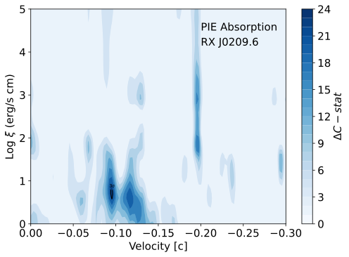
图注：相对论性蓝移光致电离吸收的谱拟合（左）与网格搜索（右）。两项pion发射分量取氢密度3×10¹¹ cm⁻³、均方根速度弥散1000 km/s，与图12相同。左图包含连续谱、两发射分量、影响O VII共振线的近静止xabs吸收及约−0.1c的蓝移吸收；插图放大O VII三重线。右图以连续谱、两发射分量及近静止吸收为基准，等高线标出3σ阈值。 左图横轴为波长（Å），纵轴为计数谱（Counts m⁻² s⁻¹ Å⁻¹）；蓝色、橙色为RGS1、RGS2，红色为模型。右图横轴为速度/c，从0至−0.30反向排列，纵轴为log ξ（ξ单位erg cm s⁻¹），色标为ΔC-stat。
怎么看这张图：先看右侧网格中约−0.1c的局部最佳区，再看左侧谱线与残差是否一并改善。此图对应加入两发射相和近静止吸收后的基准，证据比仅对连续谱搜索弱；3σ等高线仍不排除碰撞电离替代模型。 直接支撑在较完整基准中仍存在慢分量候选，同时避免展示夸大快分量证据的初始扫描。
来源与置信度：arXiv HTML；source verified；https://arxiv.org/html/2611.27693v1/pion_1000_kms_grid_2_PMF_OVII_absorber_1_xabs_rel.svg；https://arxiv.org/html/2611.27693v1/RX_J0209_xabs_1000_kms_01XBR_CS_3DXBR_new_density.svg
4. Detection of GRB 261010A with GRID-11B
- 来源：arXiv / astro-ph.HE
- 链接：https://arxiv.org/abs/2611.26662
- 作者：Chenyu Wang, Longhao Li, Xiaofan Pan, Hua Feng, Ming Zeng, Zihan Yu
- 公告 / 来源日期：2026-11-23
- 阅读层级：相关简报
- 评分：novelty 7/10，importance 6/10，relevance 9/10，final 8.35/10
- 推荐理由：GRID-11B提供GRB 261010A的持续时间、毫秒级变异和高峰能测量，长时暴的I型属性有参考价值；但两个宿主红移仍是候选，Amati偏离及低epsilon只是经验分类支持，没有独立并合证据，重要性为有限增量，不因GRB主题加分。
中文题目：GRB 261010A：持续时间较长，却呈现并合型瞬时辐射特征
问题、方法与结论：GRID-11B仅探测到GRB 261010A的主辐射段，未覆盖其他仪器报告的较暗延展辐射。作者在100–2000 keV中扣除线性背景，得到 $T_{90}=5.68^{+1.04}_{-0.32}$ s、观测者系最短变异时标 $51.6^{+10.5}_{-9.8}$ ms；以带指数截断的幂律拟合谱，峰能为 $1089^{+171}_{-80}$ keV，PGSTAT/自由度为168.9/135。分别采用两个候选宿主红移0.070与0.785并做能段修正，源系各向同性等效能量约为 $6.60\times10^{49}$ 与 $9.50\times10^{51}$ erg。两种距离下的经验能量—峰能分类均偏向I型，即通常与致密天体并合联系的类别。
意义与贡献：这项观测增加了“长持续时间不必对应大质量恒星坍缩”的案例：持续时间、变异和谱硬度提供了不同维度的信息。但它目前支持的是瞬时辐射分类相似性；与有千新星证据的GRB 211211A相似，不能代替本暴的千新星或引力波证认。
可借鉴之处：可借鉴之处是把宿主不确定性作为两套独立假设计算，而非先选定距离再分类，并同时核对时域和能谱诊断。读图时应先确认仪器能段及主辐射截取范围，再比较源系能量，避免把未探测的延展段默认计入。
局限与关注点：主要限制是有效面积造成的辐射段缺失、尚未确定的宿主和经验关系的离散。图1c未画内禀散布带，离参考线的距离不能解释为排除某类起源的显著性；时序误差明确为68.27%区间，本文没有报告完整起源模型的概率比较。
图1
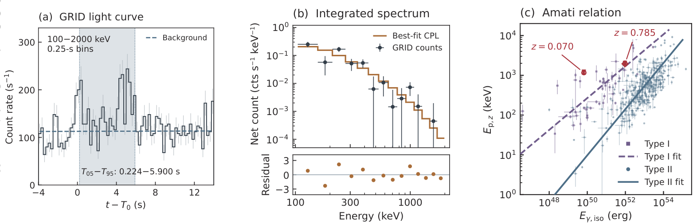
图注：GRB 261010A的GRID-11B观测结果。（a）100–2000 keV光变曲线，阴影为同能段累计计数从5%到95%的区间。（b）重新分箱的净计数、与响应卷积后的最佳截断幂律及标准化残差。（c）该暴与Amati关系的比较；紫方块和蓝圆点分别为参照样本的I型与II型暴，虚线与实线是相应参考关系，未显示内禀散布带。红色空心圆和菱形分别采用候选宿主红移0.070和0.785。
怎么看这张图：先看主段的时间范围，再看响应折叠拟合；右图中两种距离都偏I型，但分类边界、样本散布与宿主不确定性禁止把它读成并合起源的统计发现。 唯一原图同时给出时序、谱拟合和分类证据，支持简报核心且不需重复配图。
来源与置信度：arXiv PDF；source verified；https://arxiv.org/pdf/2611.26662#page=1
5. From Binary Wind to Radio Burst: Dispersion-Measure Evolution after Accretion-induced Collapse
- 来源：arXiv / astro-ph.HE
- 链接：https://arxiv.org/abs/2611.26696
- 作者：Smadar Naoz, Victoria M. Kaspi
- 公告 / 来源日期：2026-11-23
- 阅读层级：相关简报
- 评分：novelty 7/10，importance 7/10，relevance 8/10，final 8.35/10
- 推荐理由：以吸积诱发坍缩置于有限各向异性风泡的角度依赖玩具模型，展示界面穿越和激波电离产生DM折点及增长，提醒单一DM斜率不是年龄计；未拟合具体源、密度电离结构人为设定，属有用机制可行性研究而非起源证据。
中文题目：双星塑造的有限风泡可让重复快暴的色散量先降后升
问题、方法与结论：作者把白矮星吸积诱发坍缩的非球形抛射物，置于坍缩前双星形成的自由风、激波风泡、扫掠壳和极向空腔中，以独立角向薄壳模型计算视线自由电子柱，即色散量DM。模型比较密度1与500 $\mathrm{cm^{-3}}$、外边界10与0.3 pc的两类环境，并分别设定上游已电离或最初中性。早期抛射物膨胀使DM下降；中性模型中激波新增自由电子可超过几何稀释，示例约9–22年转为增长，致密云中可持续达到约3–5 $\mathrm{pc\,cm^{-3}\,yr^{-1}}$，有限气体耗尽后再下降。这些曲线没有拟合任何具体快暴。
意义与贡献：研究表明，同一种中心发动机也能因环境分区、电离和视角呈现正负不同的DM斜率；单次斜率无法唯一测龄。贡献在于把有限物质库与界面穿越显式纳入，而非仅延伸一个无限球对称密度幂律。
可借鉴之处：可借鉴方法是按物质来源追踪电子柱，同时区分已经被激波扫过和尚未扫过的气体。长期曲率、转折及其与爆发活动的关系，比一个线性斜率更有辨识力；模型的动力学变化不要求同步爆发率增加，可与光致电离预期比较。
局限与关注点：薄壳各角区独立，忽略横向流动和界面反射波；电离分数取固定极端情景，没有自洽冷却复合。慢激波或富金属气体的增长可能被高估，致密模型约千年后还受未计入DM的外部背景影响。转折时间、斜率总体分布依赖风史、年龄与探测选择，不能把示例当成AIC起源证认。
图3
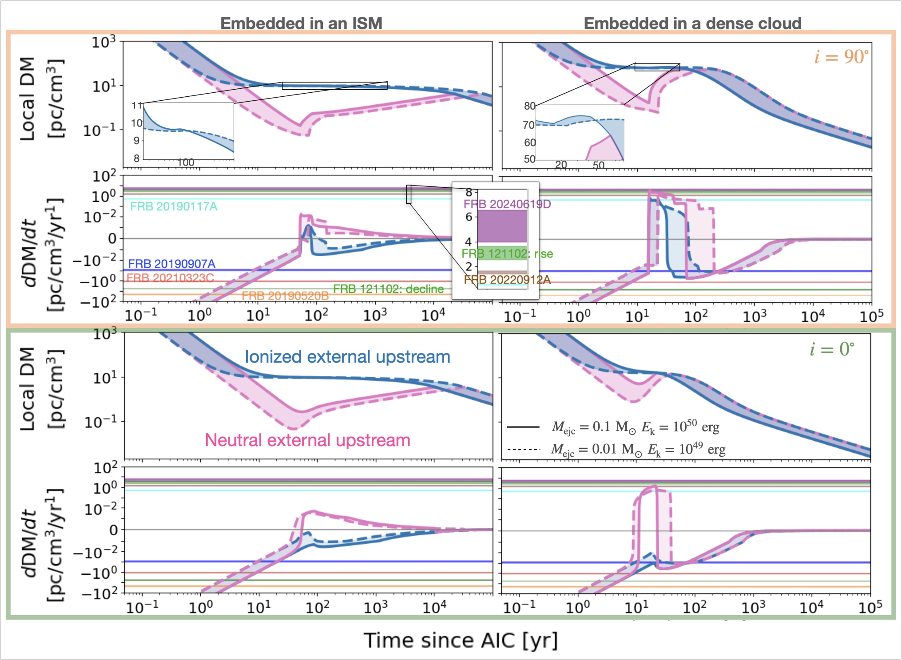
图注：总局域色散量及其时间变化的模型比较：上方橙框为赤道视线i=90°，下方绿框为极轴视线i=0°，各框上部为DM、下部为其时间导数；左列为密度1 cm⁻³、外边界10 pc的弥散环境，右列为500 cm⁻³、外边界0.3 pc的致密云。蓝色代表上游已电离，品红色代表上游壳层及外介质起初中性、被AIC激波扫过后电离。各组显示DM及其时间导数，灰水平线标记零变化率；有标签的彩色水平线是重复快暴的源系参考斜率，仅供比较，未用于拟合。实线与虚线分别对应0.1太阳质量/10⁵⁰ erg及0.01太阳质量/10⁴⁹ erg，阴影跨越这两组模型，并非统计置信区间。参考斜率经(1+z)²换算，部分源采用红移上限或假定值；局部放大图强调已电离情形的结构，长时近零外观受对数尺度影响，实际仍可为浅负斜率。
怎么看这张图：先比较同一环境的蓝色与品红色，再比较视线；正斜率来自新电离电子与膨胀稀释的竞争。曲线穿过某一观测水平线只代表量级可容纳，不能给该源指认唯一年龄或AIC起源。 直接展示DM符号反转、环境及视角退化，是简报中心证据。
来源与置信度：arXiv HTML；source verified；https://arxiv.org/html/2611.26696v1/Obs_CompFull.png
6. NGC 1300: A rich reservoir of ultraluminous X-ray sources
- 来源：arXiv / astro-ph.HE
- 链接：https://arxiv.org/abs/2611.26733
- 作者：Sinan Allak, Faruk Soydugan, Andrea Santangelo, Wei Yu, Santina Piraino, Daniel Kulinsky
- 公告 / 来源日期：2026-11-23
- 阅读层级：相关简报
- 评分：novelty 7/10，importance 7/10，relevance 8/10，final 8.35/10
- 推荐理由：12次Chandra跨15年观测建立NGC 1300的42源、6个ULX及13个光度误差跨阈值候选普查，X32强变源与逐历元XLF明确显示单次曝光的种群偏差；有用的新约束，但主要是单星系档案样本增量，摘要尚未给出改变ULX吸积机制的鉴别证据。
中文题目：NGC 1300的ULX普查随历元改变，X32亮度跨度超过715倍
问题、方法与结论：作者统一分析2009–2025年的12次Chandra观测，并以Swift监测补充，研究NGC 1300的X射线源种群。光学范围内检出42源，除去星系核后，6源至少一次实测光度达到 $10^{39}\,\mathrm{erg\,s^{-1}}$，另13源仅误差上界触及该阈值，故列为候选。最亮X32峰值约 $1.46\times10^{40}\,\mathrm{erg\,s^{-1}}$，相对未检出上限的幅度超过715倍。每个历元达到ULX光度的非核源数为0–4个，说明单次观测会漏掉暂时处于暗态的ULX。全目录中十源符合暂现定义，七源达到变异显著性门槛，两类仅四源重合；两种标签不能互换。
意义与贡献：结果把单星系ULX清点扩展为跨历元的变源普查，直接说明光度阈值分类与光度函数亮端会被爆发占空比改变。局部历元的ULX数量高于恒星形成率标度预期，仍可受小数统计和本征散布解释，不能据此宣布形成效率异常。
可借鉴之处：可借鉴的是逐历元独立检源后位置匹配，保留未检出上限，并分别定义“显著变源”和“峰值/上限至少10倍的暂现源”。统一谱假设便于比较，但需把计数不足与真实光谱变化区分。
局限与关注点：光度统一采用固定幂律指数1.7和银河吸收，距离取20.7 Mpc；42个投影源不等于全部为成员，统计预计约16个背景AGN。光度函数未作完备性校正，低端折点不能当本征特征。X32的6–30 keV颜色来自模型外推，不能鉴别中子星或黑洞；15年以上基线也主要由2009年一次与2024–2025年11次构成。
图4
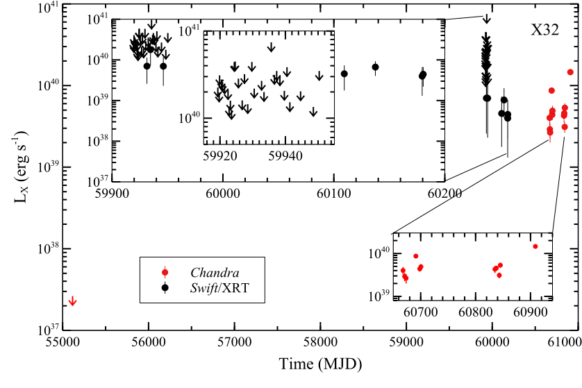
图注：NGC 1300中X32的长期0.3–10 keV光度演化。红点为Chandra、黑点为Swift/XRT，向下箭头表示未检出上限。上方插图放大Swift监测，并进一步放大MJD 59920–59950附近的密集采样；下方插图放大2024–2025年Chandra观测。
怎么看这张图：比较检出峰值与向下箭头所示上限，才能理解超过715倍的动态范围。空白时段并非持续暗态，Swift较宽点扩散函数还需考虑邻源污染。 支持极端暂现与非均匀多历元监测的核心结论。
来源与置信度：arXiv HTML；source verified；https://arxiv.org/html/2611.26733v1/lc_x32.svg
7. Hard X-ray spectroscopy of a short-period asynchronous polar: IGR J19552+0044
- 来源：arXiv / astro-ph.HE
- 链接：https://arxiv.org/abs/2611.27508
- 作者：Akash Agarwal, Vikram Rana
- 公告 / 来源日期：2026-11-23
- 阅读层级：相关简报
- 评分：novelty 7/10，importance 7/10，relevance 8/10，final 8.35/10
- 推荐理由：IGR J19552+0044首次NuSTAR硬X谱给出激波温度、质量下限和反射约束，61%拍周期内吸积率变约4.5倍而温度不显著变化，为磁阀与吸积面积调节提供有用单源诊断；覆盖不完整且几何推断有退化，尚不足显著机制突破。
中文题目：IGR J19552+0044：吸积率变四倍多，硬X射线激波温度近乎不变
问题、方法与结论：作者用一次NuSTAR观测研究不同步极向星IGR J19552+0044：107 ks时段内有效曝光53.4 ks，覆盖约61%的自转—轨道拍周期。多温冷却流、铁荧光线与反射联合拟合给出最大激波温度 $44.5^{+3.6}_{-3.3}$ keV（90%置信），据模型推断白矮星质量下限约 $0.85M_\odot$。三个时间段的吸积率归一化变化约4.5倍，温度未见显著变化。硬X射线起伏与既知半拍周期相容，为磁场取向周期性调节转移流的“磁阀”解释增加证据。
意义与贡献：低总吸积率并不必然意味着高激波、弱反射：物质若落在很小的磁极区域，单位面积吸积率仍可较高。本文在短周期系统中测到反射，并把亮度变化与温度稳定结合起来，约束吸积柱几何。
可借鉴之处：方法上先检验单温与多温模型，再用铁线和硬谱反射残差限制结构；分时拟合区分归一化变化与谱温变化。若吸积面积与总吸积率近同比变化，单位面积流率及激波高度便可近似保持，这给出可用偏振和光学观测检验的几何假说。
局限与关注点：观测不足一个完整拍周期，不能独立确立长期周期或唯一证明磁阀。反射幅度与视角退化：固定 $\cos\mu=0.45$ 时高度约 $0.29R_{\rm WD}$，改变视角可为约0.14–0.57倍半径。面积调节未被直接测量，磁场不确定导致回旋冷却贡献也未定；应关注更长X射线覆盖与同步偏振约束。此次功率谱也未检出显著的自转或轨道周期峰。
图3
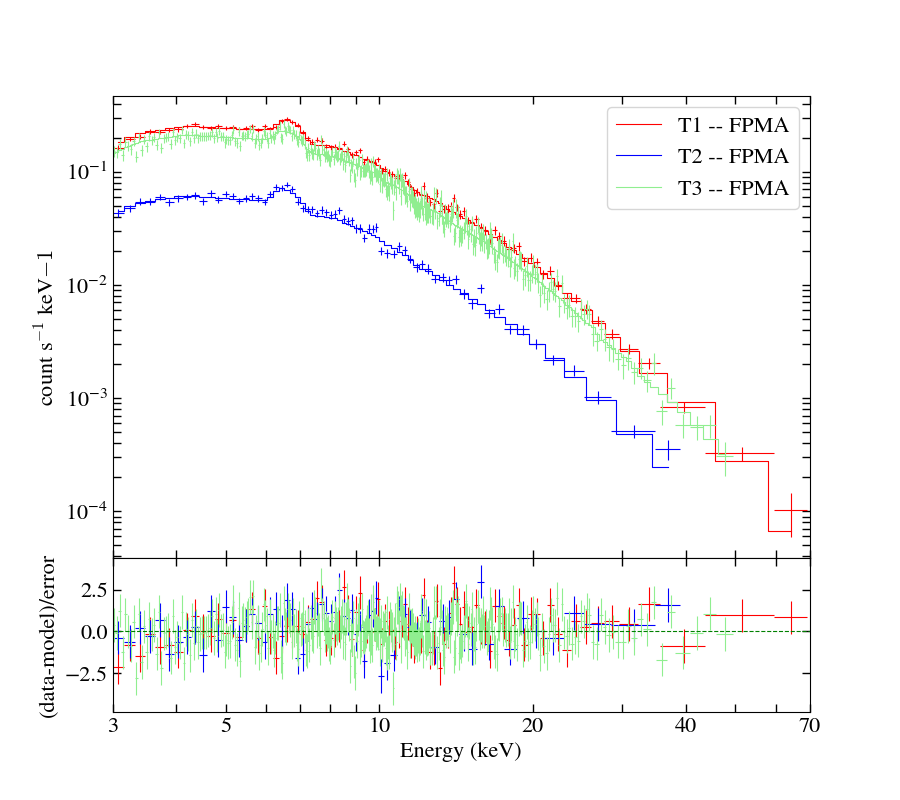
图注：三个时间段的分时X射线能谱：T1为红色、T2为蓝色、T3为绿色，上图为采用吸收、多温冷却流、荧光线及反射模型的拟合，下图为对应残差。为清晰仅展示NuSTAR FPMA数据；三个时段分别为观测开始后0–25、25–80及80–107 ks。横轴为能量（keV），上纵轴为计数谱率（counts s⁻¹ keV⁻¹），下纵轴为(data−model)/error残差；误差棒显示谱测量不确定度。
怎么看这张图：主要差异是整体归一化，谱形变化弱；温度是否显著变化仍须结合参数误差，不能凭曲线近似平行就证明激波高度恒定。 直观支持质量转移变化与弱热响应。
来源与置信度：arXiv HTML；source verified；https://arxiv.org/html/2611.27508v1/time_resolved_spectra_both_FPMA.png
说明
评分由 LLM 给出初评，再由本地阈值策略过滤；IACT、TeV 伽马射线和高能中微子天文学按重点方向处理。